Chapter 9 Time-Series in Finance and Economics
9.1 Introduction
Note that the chapters on Time-Series and Volatility forecasting are written with help of the materials provided by Rob J Hyndman and George Athanasopoulos. Therein, it follows the structure of their book Forecasting: Principles and Practices. The authors flag their work as Open-Source material, implying that the use and replication of their work is granted if the required citation practices are fulfilled. Wherever parts are directly copied, this will be explicitly stated. We are very thankful to Prof. Hyndman and Prof. Athanasopoulos for their tireless contribution in the field of public-source financial analytics. Let’s now start with the chapter.
9.1.1 The concept of Time-Series Modelling
Both financial and economic variables are, to a certain extent, time ordered. This implies that we observe the data throughout time, meaning that we work with time-series data.
Thus far, we have solely considered financial analytics aspects in retrospective. That is, we worked with past data to assign, describe, summarise and evaluate data. Although these methods are material to any investment cycle, their primary function is to deduce past behaviour. Consequently, these methods do not automatically obtain a forward-looking character, thereby they do not provide much information on how past movements can be related to future expectations.
As a consequence, we will now introduce the concept of forecasting. This is a part of financial analytics which enables us to deduce future behaviour based on past observations. Throughout, we will especially focus on quantitative forecasting. This requires us to assume two conditions:
- data about the past is available
- data is prone to trends which assumes that past patterns are recurrent in the future
Within the domain of quantitative forecasting, practitioners often refer to the term of time-series data. In general, each sequential observation collected at regular intervals over time can be considered a time-series. Examples include Annual Profits, Stock Prices, Hourly Public Transport data, Minute-based communication data or higher interval data.
The main emphasis of time-series forecasting is to estimate whether and how the past sequence of observations will behave into the future.
If we assume that the past behavior of a variable is connected to potential future movements, then we understand that the time order of the data is important due to the intertemporal dependencies of the variable. In said case, we need to incorporate time dependence into the probability models we use to forecast and deduce relationships of the data.
We call the time-series dependence of variables autocorrelation. We have seen it already in a previous chapter, in which we introduced the HAC standard error corrections. Autocorrelation implies that we need to maintain the time order of the data in order to define statistical dependencies through a model. However, a large issue here is that the baseline assumptions of random sampling and, subsequently, the use of IID observations, cannot longer hold explicitely as we have a certain dependence of our data in time-series settings.
In essence, in order to accurately define time-series models, we need to make sure that the observed data is similar to our population parameters while simultaneously allowing the variables to have time-series dependencies (or to be autocorrelated). This is possible if we can show that the time-series data is derived from a stationary time-series process.
We will follow-up on this theorem later on. Throughout this chapter, we will introduce the theoretical concepts as well as the practical implications of working with and analysing time-series data. In general, we will review fundamental time series concepts vital for analysing and modeling financial time-series data. We first introduce time-series concepts graphically and show how visualisation techniques are useful to deduce time-wise dependencies within our data. We then focus on time-series decompositions and show on what factors time-series variables can rely on. We then define univariate time-series processes and introduce the concepts of stationarity as well as ergodicity. Based on this, we define time-series which are covariance stationary. This will provide us with the main concept to measure linear time dependency using autocorrelation. Further, we will follow-up on the discussion of Gaussian White Noise Models (GWN) in order to relate their behaviour to time-wise dependent variables. Showing the respective statistical properties, we then show why stationarity is important to allow for autocorrelation models. Therein, we introduce time series models such as exponential smoothing methods and autoregressive moving average processes. By deriving their properties and using simulations, we attempt to understand their inner workings. Ultimately, we apply the models to forecast observations, by first introducing simple time-series stationarity models and then changing to more advanced topics.
9.2 The fundamental notinos of time series modelling
Time-Series processes, or discrete-time stochastic processes, expressed as
\[ Y_{-\infty}, \dots, Y_t, Y_{t+1}, \dots, Y_{\infty} = {Y_t}^\infty_{t=-\infty} \]
is a consortium of random variables of data which are ordered in time. That is, the observations that constitute a time-series are ordered throughout the time period in which they were registered. Also known as panel data, the time-based ordering of such vectors or matrices relates the observations of a single quantity (e.g. variable) throughout time. This notion is key to comprehend the concept of time series, as this implicit, time-based ordering implies that the data is likely to follow a certain, time-dependent structure, yielding the conclusion that observations in close timewise proximity to each other tend to be correlated. Said timewise correlation would automatically threaten the assumption of independence that we have made throughout the previous chapters. Remember that we said in order to derive models that can capture the underlying co-movements between variables, we need to assume that the observations are independent and identically distributed (IID). We derived that, in random sampling from a population, the ordering of the random variables representing the sample does not matter because they are independent. This was important because it allowed us to derive properties related to the distribution of estimators, linearity, asymptotic normality as well as efficiency. In essence, we assumed IID in order to be able to draw valid causal conclusions on the co-dependence of variables.
However, in time-series settings, we can no longer implicitly assume that observations are independent of each other. Especially, modeling time series data, we propose that the ordering of the observations throughout time is of essence as we assume that co-movements of a variable with itself persist and are captured by their temporal relationship with one another. Consequently, the models we have encountered so far are inappropriate for modeling temporally dependent data, as they assume that the observations are independent of each other.
As is with previous modeling techniques, the main goal of time series modeling is to derive the acute probabilistic functions of the discrete-time stochastic processes that are thought to best possibly have generated the sample data under consideration. That is, we want to create a model which best possibly fits the data, that’s nothing new. Further, we want to be able to assume that the behavior of the sample data follows similar properties as the population data, which is required to assume causality of the underlying data generating process.
However, now we are working with different assumptions that we expect the data adheres to. Consequently, we want to be able to use the observed sample to estimate important characteristics of a time series model such as measures of time dependence. In order to do this, we need to make a number of assumptions regarding the joint behavior of the random variables in the stochastic process such that we may treat the stochastic process in much the same way as we treat a random sample from a given population. Essentially, we want to obtain similar models as we used during the IID assumptions such that we can follow the same strategy to draw causal conclusions and identify best possibly the underlying co-movements, just within time-ordered data.
9.2.1 The concept of Stationarity and Ergodicity
The fundamental concept of time series modeling can be related to the idea of stationarity.
To understand why, let’s focus again on the random sampling property on which we usually rely for any data generating process. Throughout, we state that we sample observations from a population as a sequence of IID random variables \(X_i\). Consequently, we were able to show that each \(X_i\) underlies the identical probability distribution \(F_X\), such that \(X_i \sim F_X\). Based on this distributional characteristic, we practically create all of the variable properties and modeling techniques we have thus far encountered. This allowed us to assume concepts such as consistency, asymptotic normality or efficiency, enabled us to create models which quantify the co-dependence of covariates and test these models in order to conduct valid inference.
Now, within time series, the IID assumption appears to be no longer desirable. We still want the random variables to be identically distributed, but we no longer want to assume that they are independent of each other. In time series contexts, we are likely to presume that certain, time-ordered random variables show a dependence with each other (for instance, two observations that are adjacent to each other), while others show no or little dependence (for instance, two observations far from one another).
In essence, it is the aim to allow time series models to account for the fact that certain random variables are in dependence to each other while other are not. Importantly, we want to generalise this claim such that we can account for seemingly random dependence between random variables (and thus allow for trends, features, seasonality etc).
In order for us to be able to crate such models, we need to use the concepts of stationarity and ergodicity
9.2.1.1 Stationarity
In essence, there are three forms of stationary processes. The first one constitutes Strict Stationarity.
We define a stochastic process to be strictly stationary if the Joint Distribution of \((X_{t_1}, \dots, X_{t_r})\) is the same as for \((X_{t_{1}-t}, \dots, X_{t_r-t})\), for any value of t and any finite integer r. This implies that the joint distribution is time invariant. This means that the joint distribution of the random variables does not change over time. Consequently, the individual random variables \(X_t\) have the same marginal distribution \(F_X\). This means that properties such as mean, variance etc. do not change throughout time. However, within strict stationarity, we do not assume anything about the correlations between the random variables, except for that the correlation between \(X_t\) and \(X_{t_r}\) depends only on the time between \(X_t\) and \(X_{t_r}\). Consequently, strict stationarity allows for temporal dependence between the random variables.
Strict Stationarity imposes the greatest restrictions to a time series, because we need to assume that the moments of the random variables are identical, or time invariant.
The second form of stationarity is Covariance Stationarity.
We define a covariance stationary stochastic process if:
- \(E[X_t] = \mu < \infty\)
- \(var(X_t) = \sigma^2 < \infty\)
- \(cov(X_t,X_{t-j} = \gamma_j < \infty\) and depends only on j
The third assumption introduces an important concept on temporal correlation. \(\gamma_j\) is called the j^{th} autocovariance term. From it, we can deduce the j^{th} autocorrelation coefficient as:
\[ \rho_j = \frac{cov(X_t, X_{t-j})}{\sqrt{var(X_t)var(X_{t-j})}} = \frac{\gamma_j}{\sigma^2} \]
Note that we covered some of this already in the part on regression techniques. Therein, we stated that
- \(\gamma_j\) measures the direction of the linear dependence between \(X_t\) and \(X_{t-j}\)
- \(\rho_j\) measures the direction and strength of the linear dependence between \(X_t\) and \(X_{t-j}\)
In essence, \(\rho_j\) is nothing else than the time-series correlation coefficient, and works identical to the cross-sectional counterpart. As such, they measure the temporal linear dependence between two observations.
The major difference between covariance stationarity and strict stationarity is that, in the former, we only assume the mean, variance and autocovariance terms to be time invariant, instead of the entire joint distribution. This relaxation of moment invariance properties is important.
We can graphically display the autocorrelation (or temporal dependence) by plotting \(\rho_j\) against j. This is called the autocorrelation function (ACF). Let’s plot it when assuming that \(\rho_j = 0.5^j\).
rho = 0.5
c_rho = (rho)^(1:10)
ts.plot(c_rho, type="h", lwd=2, col="blue", xlab="Lag j",
ylab=expression(rho[j]))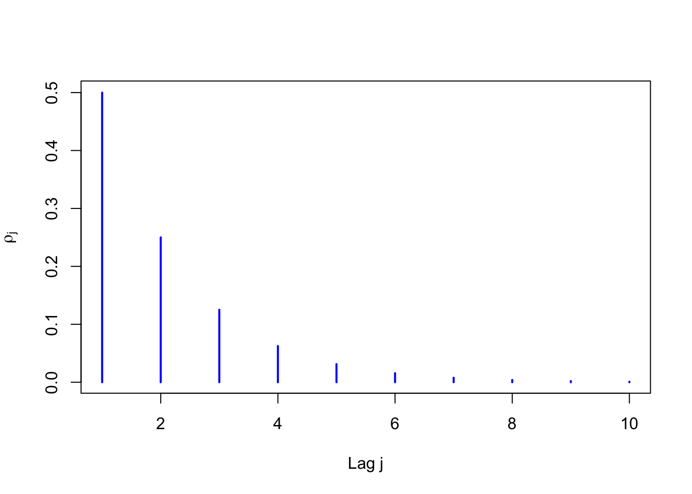
In this case, the linear dependence decays with increasing lags, whereas the decay factor is the power of the lag. As such, we can see that the linear dependence between observations declines with increasing time.
An important concept we need to cover is related to the normality assumption of the data. Covariance stationarity implies that \(E[X_t]\) and \(var(X_t)\) must be finite numbers. This is only true if we assume that the data is normally distributed, but not if, for example, the data is t-student distribution. This is the case because a normal distribution is completely defined by its first 2 moments.
9.2.1.1.1 The Gaussian White Noise (GWN) process
So far, we have worked with models which assumed the following two properties of random variables:
- \(X_t \sim\) IID
- \(X_t \sim N(0, \sigma^2)\)
That is, random variables are assumed to be drawn from random samples such that they are independent and identically distributed, while they share the property of zero mean and variance of \(\sigma^2\). Processes with these specific characteristics are called Gaussian White Noise processes. They are the most common form of processes that we encounter in statistical inference settings. Remember that, in GWN processes, we do make explicit assumptions of time independence for both moments. That is, we assume that the mean, variance as well as the covariance between observations is independent of t.
This insight here is especially important for deductive statistics. Let’s understand why. So, we know that, in order to draw valid inference, we need to assume stationarity. This is because only then we can assume that all moments of a distribution of random variables are invariant and, as such, the joint distribution of the random variables does not change over time (making it possible to perform random samples). Now, we understand that strict stationarity is quite impossible to obtain in itself. However, we know that covariance stationary processes make a weaker assumption and only assume the mean, variance and covariance (hence, the first two moments) to be time invariant. Hence, if we can find distributions which are entirely defined by their first two moments, then these distributions would fulfill strong stationarity properties (because the only moments which count are the first two moments and if they are time invariant then we have covariance stationarity). Now, the most prominent of such distributions is called the Normal Distribution. Consequently, models which assume that the random variables follow a normal distribution satisfy the properties of covariance stationary processes and are thus covariance stationary.
Following up, the GWN assumes gaussian distribution of its random variables. The defining characteristic of a GWN process is the lack of any predictable pattern over time in the realized values of the process, thereby assuming IID draws. This “White Noise” term represents the lack of any predictable signal in the data.
In essence, we now understand that data generating processes which satisfy GWN properties can be assumed to be stationary. It is fairly straightforward to draw GWN processes. We can do so by simply generating a random normal process. Let’s simulate one.
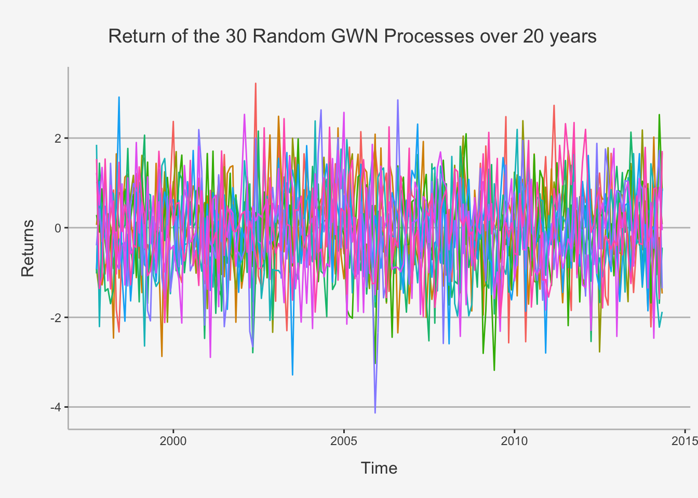
Relating this now to financial markets, we may have encountered similar processes already, correct? Well, let’s look at the return structure of the Big Four Swiss companies to evaluate any similarity.
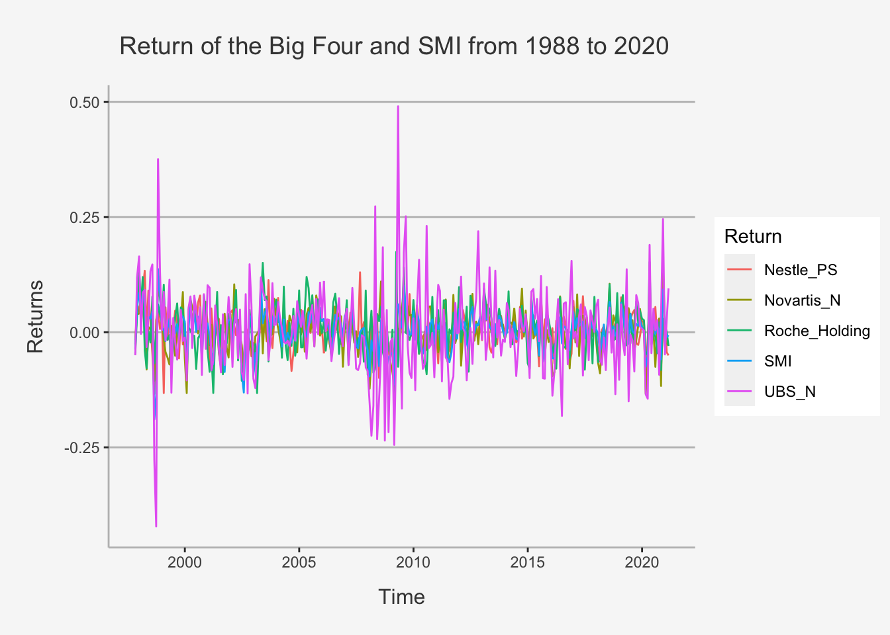
As we can see, the distribution of returns is quite similar to the GWN process encountered before. In essence, we can represent the distribution of returns in terms of a GWN process as follows:
\[ r_t = \mu + \epsilon_t \sim GWN(0, \sigma^2) \]
where the return is constructed as GWN process plus a constant. This implies that the return is a GWN process with a non-zero mean.
This is the reason why we operate with returns instead of prices. Because returns can be represented by GWN processes with a constant. Since we now know that GWN processes adhere to strong stationarity properties, we thus can draw valid inference on return-based characteristics of financial assets.
9.2.1.2 Non-Stationarity
In a covariance stationary stochastic process it is assumed that the means, variances and autocovariances are independent of time. In a non-stationary process, one or more of these assumptions is not true. For the sake of completenss, and because we heard the term already a gazillion times, let’s quickly introduce the non-stationarity within random walk processes.
9.2.1.2.1 Random Walk Processes
The classical Random Walk Process is defied as:
\[ X_t = X_{t-1} + \epsilon_t \]
Whereas \(\epsilon_t \sim N(0, \sigma^2\).
Now, by recurive subaddition, we obtain that:
\[ X_t = X_0 + \epsilon_1 + \dots + \epsilon_t = Y_0 + \sum_{j=1}^t \epsilon_j \]
That is, the t’th observation depends on the first observation and the sum of all normally distributed eror terms up to t.
The issue is now, that:
\[ var(X_t) = var(X_0 + \sum_{j=1}^t \epsilon_j) = var(X_0) + var(\sum_{j=1}^t \epsilon_j) = var(\sum_{j=1}^t \sigma_\epsilon^2) = t \times \sigma_\epsilon^2 \]
As the second moment depends on t and is thus not time invariant, the random walk process cannot be stationary.
Let’s visualise the random walk process.
sequence = seq(1,30,1)
for (i in sequence){
v = rnorm(200)
x = cumsum(v)
names = paste0("x_", i)
if (i ==1) {
x_final = x
names_final = names
}
else {
x_final = cbind(x_final, x)
names_final = cbind(names_final, names)
}
}
x_final_df <- as.data.frame(x_final)
colnames(x_final_df) <- names_final
x_final_ts <- xts(x_final_df, order.by = as.Date(stocks_SMI[1:200,1]))
tidy(x_final_ts) %>% ggplot(aes(x=index,y= value, color=series)) + geom_line() +
ylab("Cumulative Sum of the Returns") + xlab("Time") + ggtitle("Return of the 30 Random Walk Processes over 20 years") +
labs(color='Return') +
theme(plot.title= element_text(size=14, color="grey26",
hjust=0.3,lineheight=2.4, margin=margin(15,0,15,45)),
panel.background = element_rect(fill="#f7f7f7"),
panel.grid.major.y = element_line(size = 0.5, linetype = "solid", color = "grey"),
panel.grid.minor = element_blank(),
panel.grid.major.x = element_blank(),
plot.background = element_rect(fill="#f7f7f7", color = "#f7f7f7"),
axis.title.y = element_text(color="grey26", size=12, margin=margin(0,10,0,10)),
axis.title.x = element_text(color="grey26", size=12, margin=margin(10,0,10,0)),
axis.line = element_line(color = "grey"),
legend.position = "none") 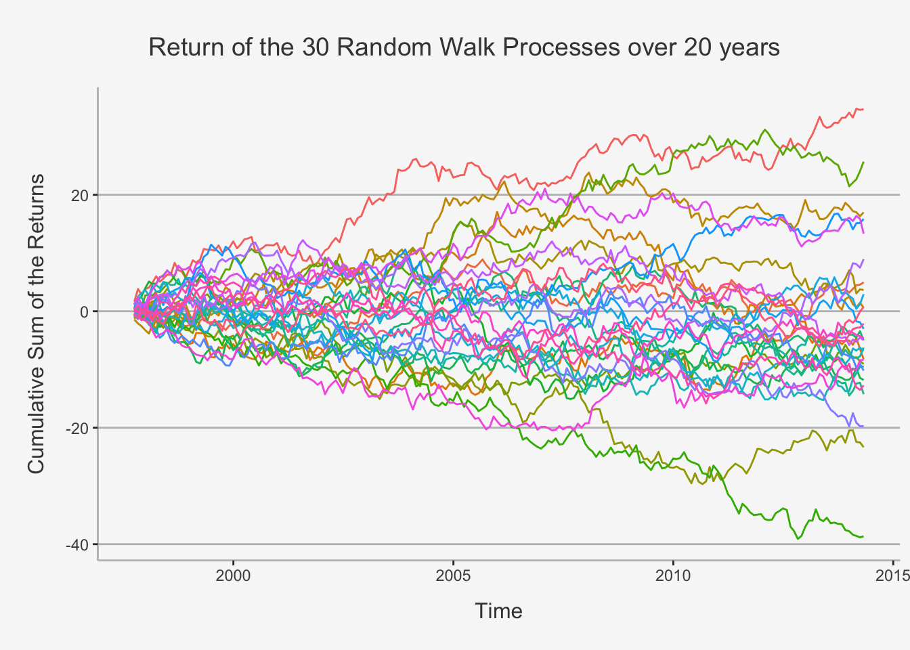
As you may note, this is very similar to price processes of financial instruments. As the variance of the process increases linearly with time, the uncertainty about where the process will be at a given point in time increases with time. This can be seen by the increasing gap of the lowest and highest return.
9.2.1.3 Ergodicity
Having covered covariance stationarity, it is also useful to dig a little into ergodicity. In covariance stationary processes we have not yet made any assumptions about the magnitude of the linear dependence term, \(\rho\). Although we can assume that \(\rho_1 = \rho_2 = \dots = \rho_{100}\), it is reasonable to assume that the strength of linear dependence diminishes with time. That is: \(\rho_1 > \rho_2 > \dots\), such that \(\rho_j = 0\). The assumption of diminishing linear dependence is captured by the term ergodicity.
Although ergodicity requires a little deeper knowledge about statistics, we can say that, in essence, ergodic processes are stochastic processes in which \(X_t\) and \(X_{t-j}\) are quasi independent for large enough j.
Consequently, GWN processes are assumed to be both ergodic and covariance stationary.
9.2.1.4 Stationary and ergodic multivariate time series
To be completed.
9.2.2 Properties of Time Series
Within time-series analysis, we need to model the behaviour of not GWN, but solely covariance stationary and ergodic stochastic processes. Consequently, the properties of time-series processes are largely identical to the ones of GWN processes, with the distinct difference of a time-based linear dependence, quantified by the autocorrelation coefficient discussed. Let’s quickly recapitulate the properties.
9.2.2.1 Mean
The mean of a time series is defined as:
\[ \mu_t = E[X_t] \]
for all time periods t of the random variable.
If we assume the mean to be constant over time, then the estimate will be:
\[ \hat\mu = \frac{1}{n}\sum_{t=1}^n x_t \]
If the mean of the data is not constant, for instance if we have seasonality or trends, then we can estimate it with time series modelling techniques described in later parts of this topic.
9.2.2.2 Variance
The variance of a time series is defined as:
\[ \sigma_t^2 = var[X_t] = E[X_t^2] - E[X_t]^2 \]
for all time periods t of the random variable.
Again, if we assume the variance to be constant over time, then the estimate will be:
\[ \hat\mu = \frac{1}{n}\sum_{t=1}^n (x_t - \hat\mu)^2 \] #### Autocovariance and Autocorrelation
The concept of autocovariance and autocorrelation is defined as terms of direction as well as strength of linear time-based dependence of a random variable. Within, we measure the time-series, and not the cross-sectional, co-dependence of the data, as opposed to the usual terms of covariance and correlation.
Autocovariance is defined as:
\[ \gamma_{s,t} = Cov(X_s, X_{t}) = E[X_sX_{t}] - E[X_s] - E[X_{t}] \]
Autocorrelation is thereby defined as:
\[ \rho_{s,t} = \frac{cov(X_s, X_{t})}{\sqrt{var(X_s)var(X_{t})}} = \frac{\gamma_{s,t}}{\sigma_s\sigma_t} \]
To determine both functions for data, we assume that the dependence structure remains constant over time. That is we assume:
\[ \gamma_{s,t} = Cov(X_s, X_{t}) = Cov(X_{s+k}, X_{t+k}) = \gamma_{s+k, t+k} \]
This is a vital property, because we state that the dependence of two observations is identical as long as their time-based difference is identical. This means that the covariance does not depend on the starting point of the observation, but only on the lag \(\tau\) = |s - t|.
This assumption allows us to greatly break down the autocovariance structure of the random variables, because we don’t assume that each observation in time uniquely depends on each different observation in time. Therefore the only autocovariances that need to be calculated are:
\[ \gamma_\tau = Cov(X_t, X_{t - j}) = Cov(X_t, X_{t + \tau}) \]
and, consequently, the autocorrelations:
\[ \rho_\tau = \frac{Cov(X_t, X_{t + \tau})}{\sqrt{var(X_t)var(X_{t+\tau})}} = \frac{\gamma_\tau}{\sigma^2} = \frac{\gamma_\tau}{\gamma_0} \]
This is vital because we can see here that both the variance as well as the autocorrelation do not depend on the original time point t. Consequently, we understand that, by assuming a constant dependence structure, we make sure that the process remains stationary.
Note that the ergodicity property still holds, as ergodicity only considers the time-based differene between two observations and assumes a diminishing effect with increased difference.
9.2.2.2.1 Estimation of the autocovariance and autocorrelation
In order to estimate the autocorrelation, recall that for any two sets of random variables (\(x_1 \dots x_n\)) (\(y_1 \dots y_n\)) the sample covariance and correlation functions are given by:
\[ \begin{align} \hat{Cov(x,y)} &= \frac{1}{n-1}\sum_{i=1}^n(x_i - \bar{x})(y_i - \bar{y})\\ \hat{\rho}_{x,y} &= \frac{Cov(x,y)}{\sigma_x\sigma_y} \end{align} \]
We can easily transfer the idea of estimating covariances into a time-series setting by just measuring the autocovariance, which is the covariance between a single time series and itself at different lags. Note that this is not yet a matrix because we assume that the starting point of each observation is redundant for the linear dependence.
In that case, we can estimate the different lags. For instance, the sample autocovariance function at lag 0, denoted by \(\hat\gamma_0\), is the covariance of \((x_1, \dots, x_n)\) with itself:
\[ \hat\gamma_0 = \frac{1}{n-1}\sum_{t=1}^n(x_t - \bar{x})(x_t - \bar{x}) = \hat\sigma^2 \] consequently, the autocorrelation function measures the correlation between the series and itself and is defined as:
\[ \hat\rho_0 = \frac{Cov(x,x)}{\sigma_x\sigma_x} = 1 \]
Based on this, we can create the estimates of all lagged autocovariances. For instance, the sample autocovariance function at lag k, denoted by \(\hat\gamma_\tau\), is the covariance of \((x_1, \dots, x_n)\) with \((x_{1+\tau}, \dots, x_{n+\tau})\):
\[ \hat\gamma_\tau = \frac{1}{n}\sum_{t=1}^{n-\tau}(x_t - \bar{x})(x_{t+\tau} - \bar{x}) \] and the autocorrelation at \(\tau\) is:
\[ \hat\rho_\tau = \frac{\hat\gamma_\tau}{\sigma_{x}\sigma_{x}} = \frac{\hat\gamma_\tau}{\hat\gamma_0} \]
We can calculate the autocorrelation function in R using the command acf(x, lag.max) where x is the time series and lag.max is the maximum lag you wish to calculate the autocorrelation function for.
9.2.2.3 The correlogram
The ACF states the autocorrelation factor between two time-ordered random variables, whereas it only depends on the lag between two observations. In addition, the correlogram is a plot of the autocorrelation function for different lags. It is used to visualise any autocorrelation of the data.
It will essentially provide information on the presence of trends, the seasonal variation as well as short term correlation patterns.
Let’s consider the following example of the company Nestle
# Let's create the ggplot
bacf <- stocks_SMI_ts_ret[,1] %>% acf(plot = FALSE)
bacfdf <- with(bacf, data.frame(lag, acf))
p <- tidy(stocks_SMI_ts_ret[,1]) %>% ggplot(aes(x=index,y= value, color=series)) + geom_line() +
ylab("Returns") + xlab("Time") + ggtitle("Return of the company Nestle from 1988 to 2020") +
labs(color='Return') +
theme(plot.title= element_text(size=14, color="grey26",
hjust=0.3,lineheight=2.4, margin=margin(15,0,15,45)),
panel.background = element_rect(fill="#f7f7f7"),
panel.grid.major.y = element_line(size = 0.5, linetype = "solid", color = "grey"),
panel.grid.minor = element_blank(),
panel.grid.major.x = element_blank(),
plot.background = element_rect(fill="#f7f7f7", color = "#f7f7f7"),
axis.title.y = element_text(color="grey26", size=12, margin=margin(0,10,0,10)),
axis.title.x = element_text(color="grey26", size=12, margin=margin(10,0,10,0)),
axis.line = element_line(color = "grey"))
q <- ggplot(data = bacfdf, mapping = aes(x = lag, y = acf)) +
geom_hline(aes(yintercept = 0)) +
geom_segment(mapping = aes(xend = lag, yend = 0)) +
geom_hline(aes(yintercept = 1.96/sqrt(length(stocks_SMI_ts_ret[,1]))), linetype = 2, color = 'deepskyblue3') +
geom_hline(aes(yintercept = -1.96/sqrt(length(stocks_SMI_ts_ret[,1]))), linetype = 2, color = 'deepskyblue3') +
scale_color_manual(values=c( "khaki3", "lightsteelblue3", "dodgerblue4", "tomato3", "violetred4", "darkorange2")) +
ylab("ACF") + xlab("Lags") + ggtitle("Correlogram to show the ACF of Nestle") +
labs(color='Factor Portfolios') +
scale_colour_manual(values = c("lightsteelblue3","dodgerblue4", "darkorange2", "springgreen4", "violetred4", "goldenrod", "khaki3")) +
theme(plot.title= element_text(size=14, color="grey26",
hjust=0.5,lineheight=2.4, margin=margin(15,0,15,0)),
panel.background = element_rect(fill="#f7f7f7"),
panel.grid.major.y = element_line(size = 0.5, linetype = "solid", color = "grey"),
panel.grid.minor = element_blank(),
panel.grid.major.x = element_blank(),
plot.background = element_rect(fill="#f7f7f7", color = "#f7f7f7"),
axis.title.y = element_text(color="grey26", size=12, margin=margin(0,10,0,10)),
axis.title.x = element_text(color="grey26", size=12, margin=margin(10,0,10,0)),
axis.line = element_line(color = "grey")) ## Scale for 'colour' is already present. Adding another scale for 'colour', which will replace the existing scale.p + q + plot_layout(ncol = 1, heights = c(5, 5))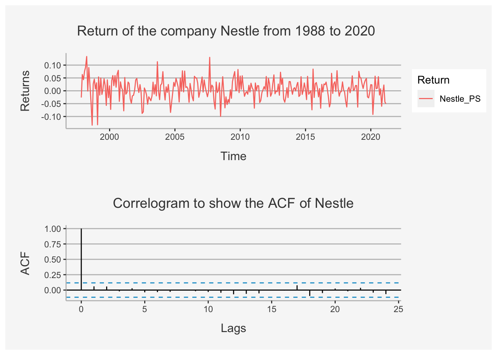
Let’s assess the main components of the ACF:
- The large value of 1 at t=0 is the correlation of the observation with itself (thereby equaling 1)
- The dashed light blue lines approximate the 95% CI for the autocorrelation function, with the hypothesis that the true correlation is zero. They equal \(\pm \frac{1.96}{\sqrt{n}}\)
As a consequence, the lags where the correlogram is inside the light blue lines do not have correlation significantly different from zero.
As we can see, in this case we can work with a purely independent series as the autocorrelation appears not to ever be materially different from zero.
Let’s look at some examples for which we cannot assume this.
Time Series data with trends has positive autocorrelations at a large number of lags. Note, the same correlogram would be observed if the trend was decreasing over time.
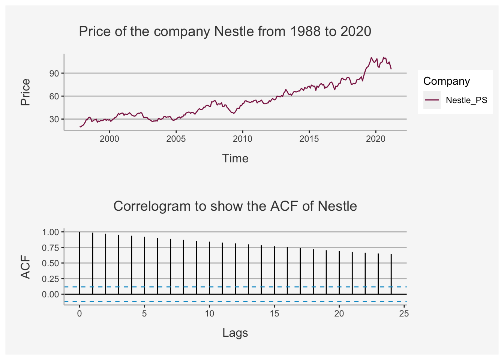
Time series data that has a seasonal effect is shown below. It has a regular seasonal pattern in the correlogram.
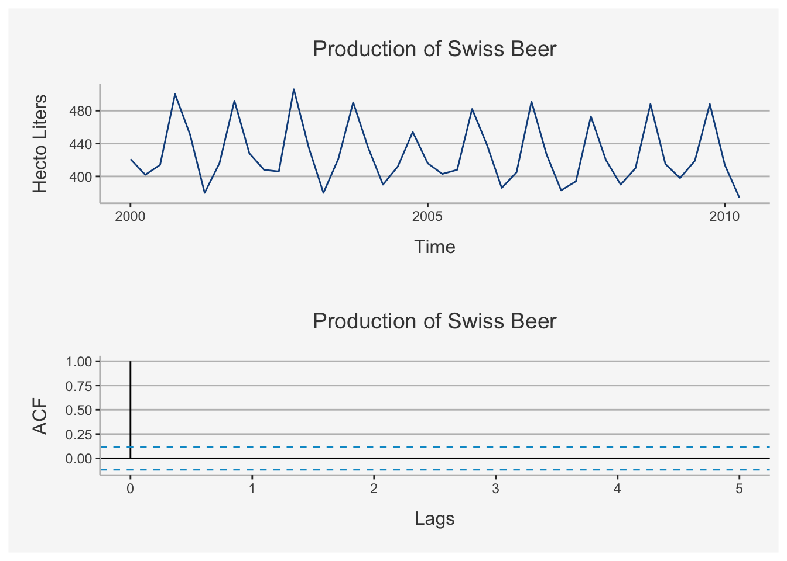
Time series data that has a trend and a seasonal effect is displayed below. It has a regular seasonal pattern in the correlogram, although due to the trend, the correlogram will generally have positive values.

9.2.2.4 How to test for independence in time series
We can also quantify the existence, or absence, of temporal linear dependence, instead of visualising the time series. There are three common tests that are usually conducted.
The first is called Box-Pierce (BP) and Ljung–Box (LB) tests. In them, we conduct a single significance test on the set of autocorrelations \(\hat\rho_1, \dots, \hat\rho_j\) where the researches determines the maximum level of lag j. Then, given a time series, we test the hypotheses:
- H0: The time series is independent
- H1: The time series is not independent
Thetests have the following formulae:
\[ \begin{align} Q_{BP} &= n\sum_{\tau = 1}^j \hat\rho_\tau^2\\ Q_{LB} &= n(n+2)\sum_{\tau = 1}^j \frac{\hat\rho_\tau^2}{n - \tau} \end{align} \]
As with many tests of multiple variables, we assume in H0 that the test statistics have a \(\chi^2_j\) distribution. That is, we reject the Null if the value of Q exceeds the critical value of\(\chi^2_{j, 0.95}\) at the 5% level.
# Conduct Ljung-Box tests
Box.test(stocks_SMI_ts_ret[,1], lag = 30, type = "Ljung-Box")##
## Box-Ljung test
##
## data: stocks_SMI_ts_ret[, 1]
## X-squared = 24.875, df = 30, p-value = 0.7311# Conduct Box-Pierce tests
Box.test(stocks_SMI_ts_ret[,1], lag = 30, type = "Box-Pierce")##
## Box-Pierce test
##
## data: stocks_SMI_ts_ret[, 1]
## X-squared = 23.046, df = 30, p-value = 0.8134As we can see, there is no reason to believe that we can reject the Null Hypothesis.
9.2.3 Components of Time Series
According to Hyndman, time series data are usually decomposed into three main constituents:
- Trend
A trend exists when there is a linear or non-linear, long-term repetitive movement in the data.
- Seasonality
A seasonal pattern occurs when a time series is affected by seasonal factors such as the time of the year or the day of the week. Seasonality is always of a fixed and known period.
- Unexplained variation
Unexplained variation is the remaining variation in a time series once any trend and seasonal variation have been removed. This unexplained variation may be independent or exhibit short-term correlation.
Based on this, we can define two simple models for time series:
- Additive: \(X_t = m_t + s_t + e_t\)
- Multiplicative: \(X_t = m_t\times s_t \times e_t\)
whereas we partition the series into the trend variation \(m_t\), the seasonality variation \(s_t\) and the unexplained variation \(e_t\). This is handy because we specify separate models for each component.
We generally use either model accordingly:
- Additive decomposition is used when the variation of the trend or the magnitude of the seasonality does not vary with the time series
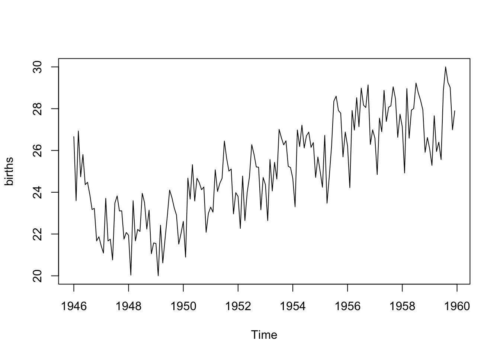
Here, we can see both trends and seasonality. But, importantly, both components appear to be constant throughout the time series. That is, they do not increase through time.
- Multiplicative decomposition is used when the variation of the trend or the magnitude of the seasonality does vary with the time series
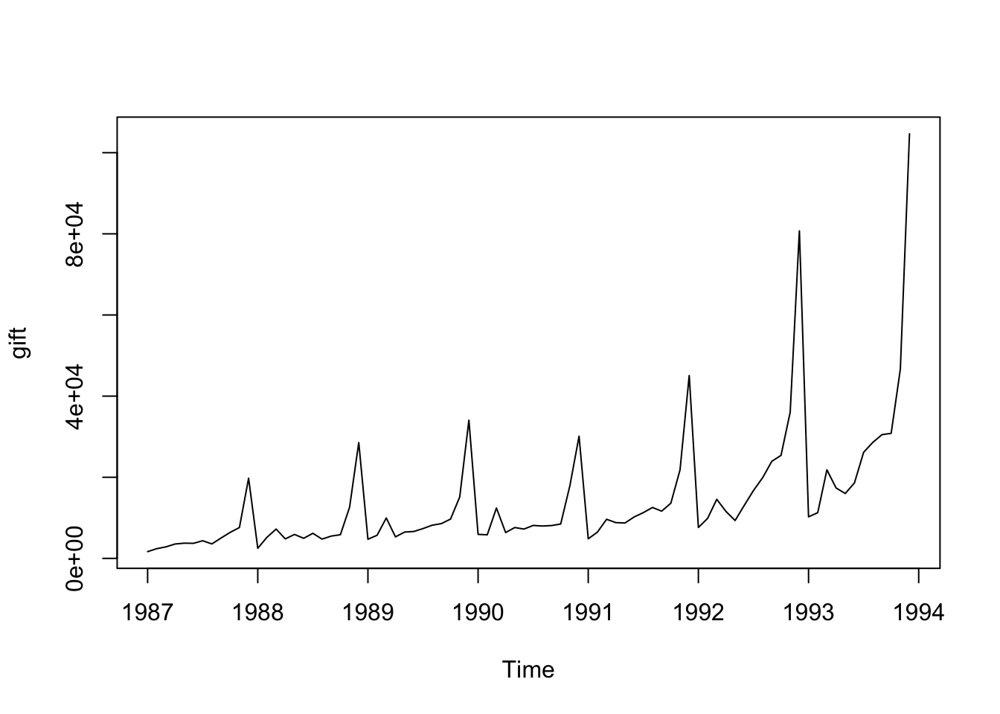
Here, we see that the seasonality and trend component increase throughout time. This is better captured by multiplicative models.
9.2.4 Adjustments of the time series
Based on the previous idea of multiplicative and additive models, we may be interested in understanding how we can transform, or adjust, the data such that it will result in a simpler time series. The most common forms of transformation are the following:
- Population Adjustments
Population adjustments are handy when considering data which depends on a population parameter. We can transform this data usually by dividing it by the population parameter, to obtain per-capita values.
- Inflation Adjustments
Inflation adjustments are good when considering data that depend on the time-value of money. We can transform this data usually by considering factors such as Consumer Price Indices and then taking dividing the nominal values by the return of the CPI. We already did so in the Risk and Return chapter.
- Mathematical Adjustments
Lastly, we can again focus on the additive vs. multiplicative modelling situation. As an alternative to using multiplicative modelling, we can also first transform seasonality-trend temporal dependent data until it is stable over time. Then, we can again use additive decomposition. The most famous is a log-linear transformation, based on:
\[ X_t = m_t\times s_t \times e_t \sim log(X_t) = log( m_t) + log( s_t ) + log(e_t) \]
Also, we can use power transformations of the data, in which we can take exponents or roots of the time series to stabilise.
The most common tool which combines both approaches is known as the Box-Cox Transformations, which depend on a tuning parameter \(\lambda\).
\[ Y_t = \begin{cases} (X_t^\lambda - 1)/\lambda && \text{if } \lambda \neq 0\\ \ln(X_t) && \text{if } \lambda = 0 \end{cases} \]
This implies that the natural logarithm is used if \(\lambda\) is zero, and scaled multiplicative transformations are used if \(\lambda\) is different from zero.
Importantly, a good value of \(\lambda\) should flatten the variation of the cycle-seasonality pattern throughout time. As such, we can transform the data from a multiplicative model to an additive model in the best possible way.
In order to define a best possible \(\lambda\) we can use the guerrero feature in R.
library(feasts)
# Here, we define how to calculate the Lambda value for the emissions dataset
lambda <- air_ZH_merged_ts %>%
filter(Standort == "Zch_Stampfenbachstrasse") %>%
pivot_wider(values_from=Wert, names_from=Parameter) %>%
select(O3) %>% features(O3, features = guerrero) %>%
pull(lambda_guerrero)
p <- air_ZH_merged_ts %>%
filter(Standort == "Zch_Stampfenbachstrasse") %>%
pivot_wider(values_from=Wert, names_from=Parameter) %>%
select(O3) %>%
autoplot(box_cox(O3, lambda), color = "violetred4") +
ylab("µg/m3") + xlab("Time") +
ggtitle("Concentration of O3 at Zürich Stampfenbachstrasse - Box Cox Transformed") +
scale_colour_manual(values = c("violetred4", "lightsteelblue3","dodgerblue4", "darkorange2", "springgreen4", "goldenrod", "khaki3")) +
theme(plot.title= element_text(size=14, color="grey26",
hjust=0.5,lineheight=2.4, margin=margin(15,0,15,45)),
panel.background = element_rect(fill="#f7f7f7"),
panel.grid.major.y = element_line(size = 0.5, linetype = "solid", color = "grey"),
panel.grid.minor = element_blank(),
panel.grid.major.x = element_blank(),
plot.background = element_rect(fill="#f7f7f7", color = "#f7f7f7"),
axis.title.y = element_text(color="grey26", size=12, margin=margin(0,10,0,10)),
axis.title.x = element_text(color="grey26", size=12, margin=margin(10,0,10,0)),
axis.line = element_line(color = "grey"))
p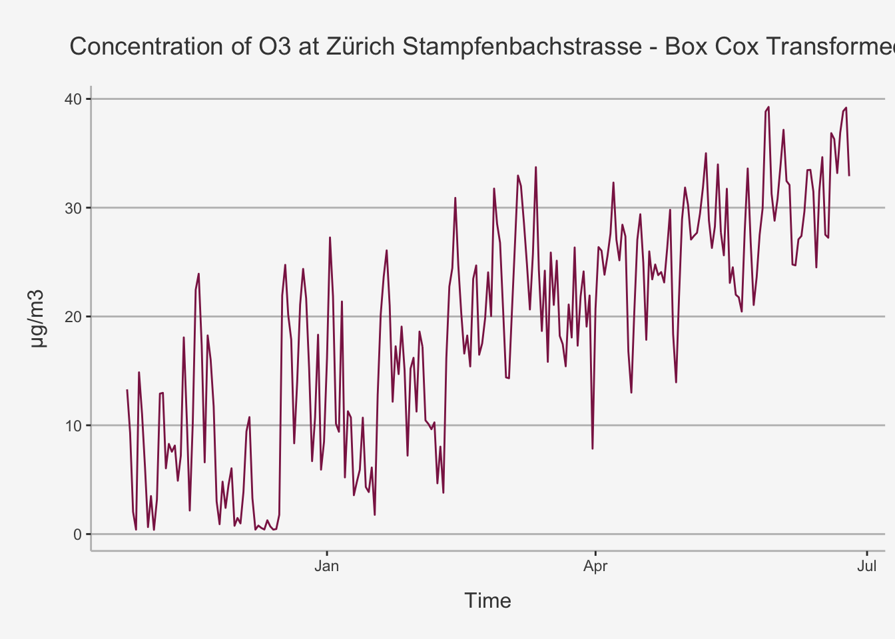
9.3 Regression Models for Time Series
The simplest form to measure time series is by using simple or multiple linear regression models. We already covered both the theoretical foundations, assumptions as well as the properties and applications of linear regression models in previous chapters, so we will not repeat this here. We, however, do highlight the similarities of its application domain to time series forecasting.
The principle of running linear regressions in time series is identical to cross-sectional applications. Especially, it still is our aim to minimise the sum of squared residuals, or the absolute difference between the observed and fitted values. However, now we are in a forecasting world. This implies that our main objective is to most accurately forecast the behavior of our time series data. As a consequence, we are not inherently interested in the statistical metrics to assess significance, which would then deem us a quantity for causality. Rather, we are interested in most accurately fitting the data, such that we can increase the certainty that the model can predict future variation accurately (this is intuitive because we assume that if the model can fit the data well until this point and if the data has repeating patterns, then we should assume that the model can also fit this future repetitive pattern well).
Thus, we are more interested in fitted values as well as in measures to evaluate the goodness of fit. We will cover these metrics as well as the time series linear regression approach in the following subchapter.
9.3.1 Using Least Squares in Time Series: the forecast package
In order to fit, evaluate and forecast models in time series, we can use the forecast package. It provides methods and tools for displaying and analysing
univariate time series forecasts including exponential smoothing, via state space models and automatic ARIMA modelling. Thereby, it also includes an option for using linear regression to estimate time series data.
To use the regression estimation procedure, we refer to the tslm function. It fits a linear regression model to time series data and is essentially identical to the lm function we encountered previously, but provides additional facilities for handling time series. In order to use the time series, we can either convert the data into a tsibble or an xts object and then create an additional time series object by defining the command ts() on the previously created object.
Let’s quickly look at the fitted values by considering the time series for the GDP growth of Switzerland from 1980 to 2020.
library(forecast)
# Load data
global_econ_CH <- subset(tsibbledata::global_economy, Country == "Switzerland" & Year >= 1981)
# Transform into an xts object
global_econ_CH_time <- global_econ_CH %>%
as.data.frame() %>%
mutate(month = 01,
day = 01,
Date = as.Date(paste0(Year, "-", month, "-", day )))
global_econ_CH_ts <- as.xts(global_econ_CH_time[,c(5:10)], order.by = global_econ_CH_time[,12])
# Run the tslm
fit_CH <- tslm(Growth ~ CPI + Imports + Exports + Population, data = ts(global_econ_CH_ts))
# Now, use the fitted values for another column in the original data frame
fitted_ts <- xts(fitted(fit_CH), order.by = global_econ_CH_time[,12])
global_econ_CH_ts$Fitted <- fitted_ts
# Plot the relaitonship
p <- tidy(global_econ_CH_ts[,c(1, 7)]) %>% ggplot(aes(x=index,y= value, color=series)) + geom_line() +
ylab("GDP Growth") + xlab("Time") + ggtitle("Growth of the Swiss GDP from 1980 to 2020") +
labs(color='Factor') +
theme(plot.title= element_text(size=14, color="grey26",
hjust=0.3,lineheight=2.4, margin=margin(15,0,15,45)),
panel.background = element_rect(fill="#f7f7f7"),
panel.grid.major.y = element_line(size = 0.5, linetype = "solid", color = "grey"),
panel.grid.minor = element_blank(),
panel.grid.major.x = element_blank(),
plot.background = element_rect(fill="#f7f7f7", color = "#f7f7f7"),
axis.title.y = element_text(color="grey26", size=12, margin=margin(0,10,0,10)),
axis.title.x = element_text(color="grey26", size=12, margin=margin(10,0,10,0)),
axis.line = element_line(color = "grey"))
p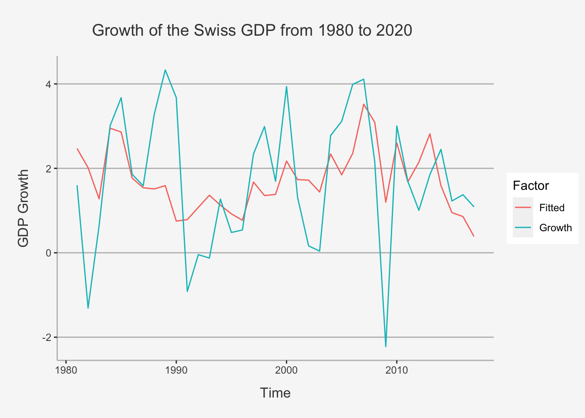
Let’s not focus on the apparently bad fit of the model here. Just note that we are able to perform the exact same procedure as with the lm function. We can confirm this by plotting a scatterplot of both variables.
global_econ_CH_ts %>% ggplot(aes(x=Fitted,y= Growth)) +
geom_point() +
geom_abline(intercept=0, slope=1) +
ylab("GDP Growth") + xlab("GDP Growth Fitted") + ggtitle("Growth of the Swiss GDP from 1980 to 2020 - Fitted vs. Actual") +
labs(color='Factor') +
theme(plot.title= element_text(size=14, color="grey26",
hjust=0.3,lineheight=2.4, margin=margin(15,0,15,45)),
panel.background = element_rect(fill="#f7f7f7"),
panel.grid.major.y = element_line(size = 0.5, linetype = "solid", color = "grey"),
panel.grid.minor = element_blank(),
panel.grid.major.x = element_blank(),
plot.background = element_rect(fill="#f7f7f7", color = "#f7f7f7"),
axis.title.y = element_text(color="grey26", size=12, margin=margin(0,10,0,10)),
axis.title.x = element_text(color="grey26", size=12, margin=margin(10,0,10,0)),
axis.line = element_line(color = "grey")) 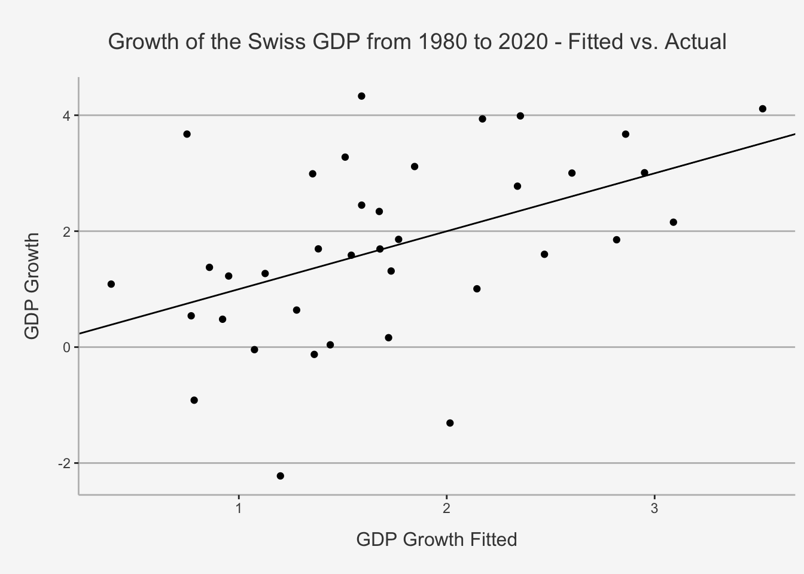
9.3.2 Evaluation of a time series regression model
The forecast package also provides a series of procedures to evaluate the regression based output. They mainly match the procedures used in non time series regression frameworks. That is, their primary focus is on the evaluation of the residuals. As we know from previous classes on statistical inference, we can verify the validity of the regression model by either quantifying metrics or visually assessing plots related to the residuals, for instance to show if there is heteroskedasticity, serial correlation or non normality of the errors. We can replicate this procedure to use it for time series regression models, as well.
9.3.2.1 Autocorrelation Function Plots
Let’s start with the most fundamental check, which is related to the temporal correlation of the regression model, or autocorrelation. Since it is likely that observations close to each other are correlated with one another, it is also likely that the residuals are autocorrelated. In this case, the estimated model violates the assumption of no autocorrelation in the errors, and our forecasts may be inefficient but unbiased, implying they have larger than necessary standard errors as there is some information left in the model which we should determine to induce an improved fit.
We can quantify this ACF plot by using a method similar to the box test approach. The test is called Breusch-Godfrey test is used to test the joint hypothesis that there is no autocorrelation in the residuals up to a certain specified order. A small p-value indicates there is significant autocorrelation remaining in the residuals.
9.3.2.2 Residual Histogram
Another important part is to check whether the residuals are normally distributed. Although it is not essential for forecasting, but it does make the calculation of prediction intervals much easier.
We can create both ACF and residual plots by using the checkresiduals function of the forecast package. Let’s explore this.
checkresiduals(fit_CH)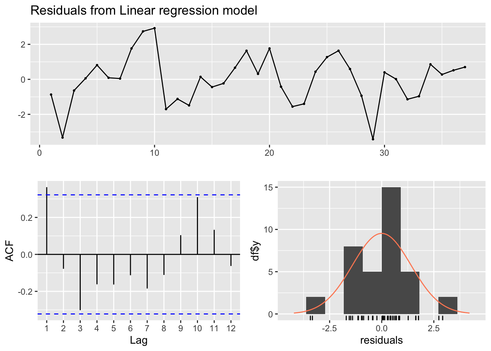
##
## Breusch-Godfrey test for serial correlation of order up to 8
##
## data: Residuals from Linear regression model
## LM test = 15.763, df = 8, p-value = 0.04589As we can see, the figure shows the ACF and the histogram of the residuals from the multiple regression model fitted, as well as the Breusch-Godfrey test for jointly testing up to 8th order autocorrelation.
We can interpret the following from these plots:
- The first plot shows the residuals over time and can thus provide us with an intuition on the heteroskedasticity of the model. There appears to be some heteroskedasticity, as the variance of the residual terms appears to be slightly different depending on the time intervals under consideration
- The second plot shows the ACF. There appears to be no clear significant spike for either lag, although lag 3 and 10 show near significance, thereby we cannot clearly disregard the chance of autocorrelation
- Further, the ACF plot shows that there is seasonality, as some lags are lower while others are higher than the average.
- Lastly, the residuals plot shows a rough normality trend.
Further, we see the BP test shows some significance at the 5% level. This is an issue as it appears as if we can reject the null hypothesis of independence between the observations. This implies that at certain lags the autocorrelation is likely to have a noticeable impact on the forecasts or the prediction intervals. We will discuss later how to deal with this.
9.3.2.3 Residual plots against predictors
We would expect the residuals to be randomly scattered without showing any systematic patterns. A simple and quick way to check this is to examine scatterplots of the residuals against each of the predictor variables. If these scatterplots show a pattern, then the relationship may be nonlinear and the model will need to be modified accordingly.
p1 <- global_econ_CH_ts %>% ggplot(aes(x=CPI,y= residuals(fit_CH))) +
geom_point() +
ylab("Residuals") + xlab("CPI") +
labs(color='Factor') +
theme(plot.title= element_text(size=14, color="grey26",
hjust=0.3,lineheight=2.4, margin=margin(15,0,15,45)),
panel.background = element_rect(fill="#f7f7f7"),
panel.grid.major.y = element_line(size = 0.5, linetype = "solid", color = "grey"),
panel.grid.minor = element_blank(),
panel.grid.major.x = element_blank(),
plot.background = element_rect(fill="#f7f7f7", color = "#f7f7f7"),
axis.title.y = element_text(color="grey26", size=12, margin=margin(0,10,0,10)),
axis.title.x = element_text(color="grey26", size=12, margin=margin(10,0,10,0)),
axis.line = element_line(color = "grey"))
p2 <- global_econ_CH_ts %>% ggplot(aes(x=Exports,y= residuals(fit_CH))) +
geom_point() +
ylab("Residuals") + xlab("Exports") +
labs(color='Factor') +
theme(plot.title= element_text(size=14, color="grey26",
hjust=0.3,lineheight=2.4, margin=margin(15,0,15,45)),
panel.background = element_rect(fill="#f7f7f7"),
panel.grid.major.y = element_line(size = 0.5, linetype = "solid", color = "grey"),
panel.grid.minor = element_blank(),
panel.grid.major.x = element_blank(),
plot.background = element_rect(fill="#f7f7f7", color = "#f7f7f7"),
axis.title.y = element_text(color="grey26", size=12, margin=margin(0,10,0,10)),
axis.title.x = element_text(color="grey26", size=12, margin=margin(10,0,10,0)),
axis.line = element_line(color = "grey"))
p3 <- global_econ_CH_ts %>% ggplot(aes(x=Imports,y= residuals(fit_CH))) +
geom_point() +
ylab("Residuals") + xlab("Imports") +
labs(color='Factor') +
theme(plot.title= element_text(size=14, color="grey26",
hjust=0.3,lineheight=2.4, margin=margin(15,0,15,45)),
panel.background = element_rect(fill="#f7f7f7"),
panel.grid.major.y = element_line(size = 0.5, linetype = "solid", color = "grey"),
panel.grid.minor = element_blank(),
panel.grid.major.x = element_blank(),
plot.background = element_rect(fill="#f7f7f7", color = "#f7f7f7"),
axis.title.y = element_text(color="grey26", size=12, margin=margin(0,10,0,10)),
axis.title.x = element_text(color="grey26", size=12, margin=margin(10,0,10,0)),
axis.line = element_line(color = "grey"))
p4 <- global_econ_CH_ts %>% ggplot(aes(x=Population ,y= residuals(fit_CH))) +
geom_point() +
ylab("Residuals") + xlab("Population") +
labs(color='Factor') +
theme(plot.title= element_text(size=14, color="grey26",
hjust=0.3,lineheight=2.4, margin=margin(15,0,15,45)),
panel.background = element_rect(fill="#f7f7f7"),
panel.grid.major.y = element_line(size = 0.5, linetype = "solid", color = "grey"),
panel.grid.minor = element_blank(),
panel.grid.major.x = element_blank(),
plot.background = element_rect(fill="#f7f7f7", color = "#f7f7f7"),
axis.title.y = element_text(color="grey26", size=12, margin=margin(0,10,0,10)),
axis.title.x = element_text(color="grey26", size=12, margin=margin(10,0,10,0)),
axis.line = element_line(color = "grey"))
gridExtra::grid.arrange(p1, p2, p3, p4, nrow=2)## Don't know how to automatically pick scale for object of type ts. Defaulting to continuous.
## Don't know how to automatically pick scale for object of type ts. Defaulting to continuous.
## Don't know how to automatically pick scale for object of type ts. Defaulting to continuous.
## Don't know how to automatically pick scale for object of type ts. Defaulting to continuous.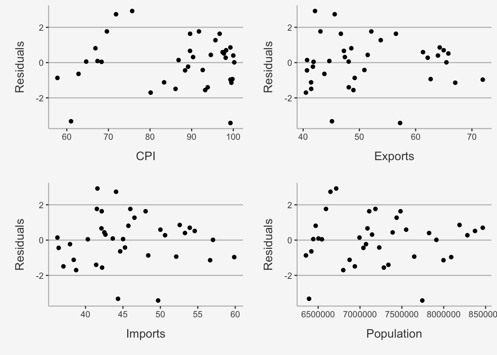
They all appear to be randomly scattered, making the case for linearity more likely.
9.3.2.4 Residuals vs. Fitted values
Lastly, we can confirm heteroskedasticity by plotting the residuals against the fitted values.
p <- global_econ_CH_ts %>% ggplot(aes(x=fitted(fit_CH) ,y= residuals(fit_CH))) +
geom_point() +
ylab("Residuals") + xlab("Fitted Values") +
labs(color='Factor') +
theme(plot.title= element_text(size=14, color="grey26",
hjust=0.3,lineheight=2.4, margin=margin(15,0,15,45)),
panel.background = element_rect(fill="#f7f7f7"),
panel.grid.major.y = element_line(size = 0.5, linetype = "solid", color = "grey"),
panel.grid.minor = element_blank(),
panel.grid.major.x = element_blank(),
plot.background = element_rect(fill="#f7f7f7", color = "#f7f7f7"),
axis.title.y = element_text(color="grey26", size=12, margin=margin(0,10,0,10)),
axis.title.x = element_text(color="grey26", size=12, margin=margin(10,0,10,0)),
axis.line = element_line(color = "grey"))
p## Don't know how to automatically pick scale for object of type ts. Defaulting to continuous.
## Don't know how to automatically pick scale for object of type ts. Defaulting to continuous.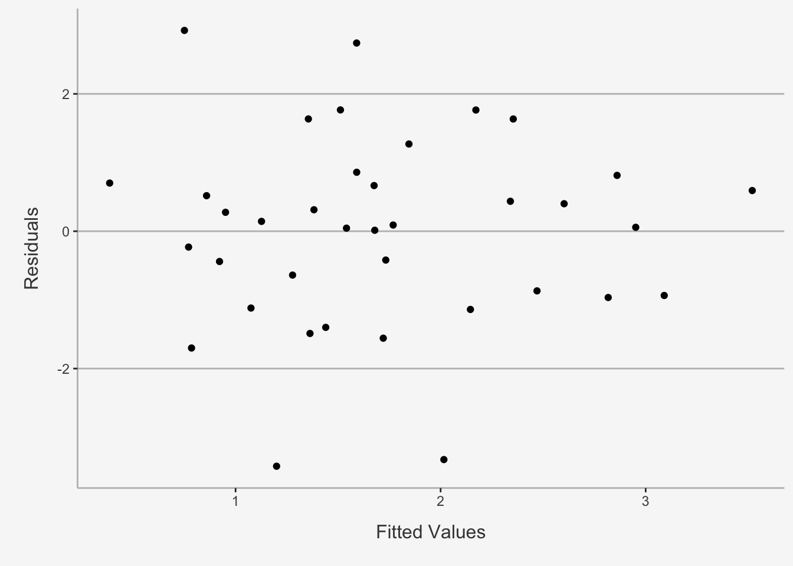
Likely, there appears to be no heteroskedasticity in the data.
9.3.2.5 Spurious Regressions
Within time series data, we often fear that the obserations are non-stationary. That is, the moments of the distribution of the data appear not to fluctutate around a constant. Regressing non-stationary time series can lead to spurious regressions. These are regresssions which output material effects although, in essence, these effects are not material, but rather happen due to a hazardeous correlation between two variables. That is, the variables just move in the same direction by chance.
An important sign of spurious regressions are high R2 values and high residual autocorrelation. We will discuss these features in more detail in later chapters, but understand that high R2 values imply that the model fits the data well, relative to the average fit. Further, large residual autocorrelation states that some residuals are co-dependent on each other, implying that some of the information which is not contained in the model is likely to follow a systematic structure. Thus, it might appear to give reasonable short-term forecasts, but will generally not continue to work into the future as (I) the regressors are likely to co-depend by chance and (II) the data does not seem to follow constant structures throughout time.
9.3.3 Evaluation of the forecasting accuracy
When working with time series data, our primary aim is to construct a model which can best possibly represent the underlying variation of the data. Consequently, it is imperative to evaluate the forecasting accuracy of our model. However, although the size or distribution of the residuals are a good measure to quantify the extent of the underlying accuracy of a model, they cannot determine the true underlying forecasting error, because we do not use the model on new data. The accuracy of forecasts can only be determined by considering how well a model performs on new data that were not used when fitting the model.
When choosing models, it is common practice to separate the available data into two portions, training and test data, where the training data is used to estimate any parameters of a forecasting method and the test data is used to evaluate its accuracy. Because the test data is not used in determining the forecasts, it should provide a reliable indication of how well the model is likely to forecast on new data. This is the usual method chosen in Machine Learning applications as it shows the accuracy of the model when generalising it to external data not previously used to determine the model parameters.
When evaluating foeecasting accuracy, we typically split the data into a training and testing set. Usually, the proportions are 80:20. In time series, this implies that the first 80% of the time we use the data to train a model and in the subsequent 20% of the time we apply the model on new data. For instance, if we have a period of 10 years, we use the first 8 to train the model and then apply the model on the data of the last two years.
9.3.3.1 Metrics to evaluate forecasting accuracy
We need some metrics to evaluate the forecasting accuracy. These metrics can be summarised as forecast errors. A forecast error is the difference between an observed value and its forecast in the test set. They are defined as \(e_t\). There are generally three forms of distinct errors:
The forecast errors are on the same scale as the data. Therefore, scale-dependent and cannot be used to make comparisons between series that involve different units. The two most common are:
- Mean-Absolute Error (MAE): \(mean(|e_t|)\)
- Root Mean-Squared Error (RMSE): \(\sqrt{mean(e_t^2)}\)
A forecast method that minimises the MAE will lead to forecasts of the median, while minimising the RMSE will lead to forecasts of the mean.
Percentage errors are given by:
\[ p_t = 100\cdot e_t/y_t \]
Percentage errors have the advantage of being unit-free, and so are frequently used to compare forecast performances between data sets. The most commonly used measure is:
- Mean Absolute Percentage Error (MAPE): \(mean(|p_t|)\)
Measures based on percentage errors have the disadvantage of being infinite or undefined if \(y_t = 0\) for any t in the observational period, and having extreme values if any \(y_t\) is close to zero. They also have the disadvantage that they put a heavier penalty on negative errors than on positive errors.
Scaled errors were proposed by Hyndman & Koehler (2006) as an alternative to using percentage errors when comparing forecast accuracy across series with different units. They proposed scaling the errors based on the training MAE from a simple forecast method. For a non-seasonal time series, a useful way to define a scaled error uses naïve forecasts:
\[ q_j = \frac{e_j}{\frac{1}{T-1}\sum_{t=2}^T|y_t - y_{t-1}|} \]
Whereas naive forecast means that we simply set all forecasts to be the value of the last observation. That is:
\[ \hat{y}_{T+h|t} = y_T \]
which defines the second term of the denominator in our case.
Because the numerator and denominator both involve values on the scale of the original data, \(q_j\) is independent of the scale of the data. The general rule is:
- A scaled error is less than one if it arises from a better forecast than the average naive forecast computed on the training data.
- A scaled error is greater than one if the forecast is worse than the average naisve forecast computed on the training data.
Further, for seasonal time series, a scaled error can be defined using seasonal naive forecasts:
\[ q_j = \frac{e_j}{\frac{1}{T-m}\sum_{t=m+1}^T|y_t - y_{t-2}|} \]
Whereas naive forecast means that we simply set all forecasts to be the value of the last observation. That is:
\[ \hat{y}_{T+h|t} = y_{T+h-m(k+1)} \]
Then, the mean absolute scaled error is:
\[ MASE = mean(|q_j|) \]
A more sophisticated version of training/test sets is time series cross-validation. In this procedure, there are a series of test sets, each consisting of a single observation. The corresponding training set consists only of observations that occurred prior to the observation that forms the test set. Thus, no future observations can be used in constructing the forecast. Since it is not possible to obtain a reliable forecast based on a small training set, the earliest observations are not considered as test sets.
Based on each time-step training-testing set combination, the forecasting accuracy is gathered by averaging the respective accuracy over all test sets.
With time series forecasting, one-step forecasts may not be as relevant as multi-step forecasts. In this case, the cross-validation procedure can be modified to allow multi-step errors. That is, we can increase the temporal step size from 1 to h.
Time series cross-validation is straight-forward to implement by using the tsCV command.
Let’s apply these methods to the Swiss GDP Growth dataset through the command accuracy:
# Create training and test set
CH_train <- window(global_econ_CH_ts, start="1981-01-01", end ="2005-01-01")
CH_test <- window(global_econ_CH_ts, start ="2006-01-01")
# Then, we run different models
mean_fc <- meanf(CH_train$Growth, h=12)
naive_fc <- rwf(CH_train$Growth, h=12)
seas_naive_fc <- rwf(CH_train$Growth, drift=TRUE, h=12)
reg_fc <- tslm(Growth ~ CPI + Imports + Exports + Population, data = ts(CH_train))
# We can then take them to predict the future values
mean_fc_p <- predict(mean_fc, CH_test)
naive_fc_p <- predict(naive_fc, CH_test)
seas_naive_fc_p <- predict(seas_naive_fc, CH_test)
reg_fc_p <- predict(reg_fc, CH_test)
mean_fc_p_ts <- xts(mean_fc_p$mean, order.by = subset(global_econ_CH_time, Date >= "2006-01-01")[,12])
naive_fc_p <- xts(naive_fc_p$mean, order.by = subset(global_econ_CH_time, Date >= "2006-01-01")[,12])
seas_naive_fc_p <- xts(seas_naive_fc_p$mean, order.by = subset(global_econ_CH_time, Date >= "2006-01-01")[,12])
reg_fc_p <- xts(reg_fc_p, order.by = subset(global_econ_CH_time, Date >= "2006-01-01")[,12])
# Merge the entire data
global_econ_plot_data <- merge.xts(global_econ_CH_ts$Growth, mean_fc_p_ts, naive_fc_p, seas_naive_fc_p, reg_fc_p)
colnames(global_econ_plot_data) <- c("Actual", "Mean", "Naive", "Seasonally Adjusted, Mean", "Regression")
# Plot the relationship
tidy(global_econ_plot_data) %>% ggplot(aes(x = index, y = value, color = series)) + geom_line() +
ylab("Growth") + xlab("Time") +
labs(color='Forecasting methods') +
theme(plot.title= element_text(size=14, color="grey26",
hjust=0.3,lineheight=2.4, margin=margin(15,0,15,45)),
panel.background = element_rect(fill="#f7f7f7"),
panel.grid.major.y = element_line(size = 0.5, linetype = "solid", color = "grey"),
panel.grid.minor = element_blank(),
panel.grid.major.x = element_blank(),
plot.background = element_rect(fill="#f7f7f7", color = "#f7f7f7"),
axis.title.y = element_text(color="grey26", size=12, margin=margin(0,10,0,10)),
axis.title.x = element_text(color="grey26", size=12, margin=margin(10,0,10,0)),
axis.line = element_line(color = "grey")) ## Warning: Removed 100 row(s) containing missing values (geom_path).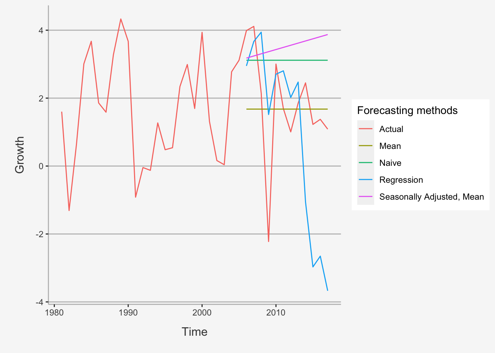
If we plot the data to see the forecasted values, we encounter quite an imprecise image. Let’s see the quantified values of the predictions.
# Now, let's create the accuracy scores for the different forecasting methods
mean_acc <- accuracy(mean_fc, CH_test$Growth)
naive_predictions_acc <- accuracy(naive_fc, CH_test$Growth)
seas_naive_fc_p_acc <- accuracy(seas_naive_fc, CH_test$Growth)
reg_fc_p_acc <- accuracy(fitted(reg_fc), CH_test$Growth)
RMSE <- as.data.frame(cbind(mean_acc[2,2], naive_predictions_acc[2,2], seas_naive_fc_p_acc[2,2], reg_fc_p_acc[1,2]))
colnames(RMSE) <- c("Mean", "Naive", "Seasonally adjusted, naive", "Regression")
RMSE## Mean Naive Seasonally adjusted, naive Regression
## 1 1.585928 2.049348 2.390761 1.6938189.3.4 Temporal predictor variables in time series
There are some temporal predictor variables which occur frequently in time series analysis. They are important to cover because they aid to distribute the time series into pieces which are distinct from each other. As such, they allow us to include a series of effects that are important to better fit data through time. We quickly cover the most common temporal predictors as well as their use in the tslm function. Note that you can also manually create all the predictors.
9.3.4.1 Trend variables
The simplest form is a trend variable. A linear trend can be modelled by simply using \(x_{1,t} = t\) as a predictor:
\[ y_t = \beta_0 + \beta_1t + \epsilon_t \]
where t = 1, …, T. You can use the trend predictor with the trend option in the tslm function.
9.3.4.2 Dummy Variables
Dummy variables can also be used for temporal data. In this case, the dummy variable takes value 1 for a specific observation and 0 everywhere else. The interpretation of each of the coefficients associated with the dummy variables is that it is a measure of the effect of that category relative to the omitted category.
A special case of dummy variables are seasonal dummy variables. These occur if we want to specify certain seasons, such as weekdays, months, quarters etc.
In the tslm function, we can automatically create dummy variables by specifying a factor variable as a predictor. Further, by specifying the predictor season in the regression model. This will automatically detect the seasonality related to the tsibble object.
9.3.4.3 Trading Days
The number of trading days in a month can vary considerably and can have a substantial effect on sales data. To allow for this, the number of trading days in each month can be included as a predictor. For monthly or quarterly data, the bizdays function will compute the number of trading days in each period.
9.3.4.4 Fourier Series
An alternative to using seasonal dummy variables, especially for long seasonal periods, is to use Fourier terms. It shows that a series of sine and cosine terms of the right frequencies can approximate any periodic function. We can use them for seasonal patterns.
If m is the seasonal period, then the fourier series follows:
\[ x_{i,t} = \begin{cases} sin(\frac{(i+1) \cdot \pi \cdot t}{m}) && \text{if i is an odd number} \\ cos(\frac{i \cdot \pi \cdot t}{m}) && \text{if i is an even number} \end{cases} \]
With Fourier terms, we often need fewer predictors than with dummy variables, especially when m is large, as they provide us with the same effect as dummies with considerably less computational power.
The fourier terms can be created by using the fourier function. The first argument to the function allows it to identify the seasonal period m and the length of the predictors to return. It can be derived by taking the dependent variable as an argument. The second argument K specifies how many pairs of sin and cos terms to include. For instance, this means: fourier(y, K = 2) to retrieve quarterly dummies.
9.4 Decomposition of a Time Series
As we have seen, we either have additive or multiplicative time series formats, depending on the temporal variation of the trend- and seasonality parameter. Based on this characteristic, the three individual constituents of a time series interact differently with one another (either in a multiplicative or additive relationship). Further, we can transform the time series to assume simpler interaction forms of the individual constituents.
Let’s focus on the components of the time series. As we defined, each time series consists of three primary constituents. As such, the time series variation can be decomposed into three distinct sources of variation. In order to understand how the variation behaves, it thus is important to be able to decompose the time series and quantify its individual components, in order to comprehend how the overall variation is affected by its parts. This then helps us to determine which models can best classify and quantify the time series at hand.
9.4.1 Moving Average Smoothing
The first step in time series decomposition is the creation of moving average methods to estimate the trend of the series. This is also known as Moving Average Smoothing. A Moving average smoother estimates the trend and seasonal variation at time t by averaging values of the time series within k periods of the time series t. That is:
\[ \hat m_t + \hat s_t = \frac{1}{2k + 1}\sum_{j = -k}^k X_{t+j} \]
Since time-ordered observations are likely to be closer in value, the average diminishes some of the randomness in the data, smoothing the trend component. This is known as a k-ordered moving average process.
# Let's create a Moving Average
ma <- function(x, n){stats::filter(x, rep(1 / n, n), sides = 2)}
# We want to create a facet plot of moving averages. To do so, we first need to define the variable of interest, O3
O3 <- air_ZH_merged_ts %>%
filter(Standort == "Zch_Stampfenbachstrasse") %>%
pivot_wider(values_from=Wert, names_from=Parameter) %>%
select(O3)
# We need to repeat the values 4 times in order to create a dataframe which can then be transferred to each facet individually
# From there on, the ggplot will automatically deliver the adjusted MA per plot
O3_rep <-rep(O3$O3, times = 4)
Datum_rep <- rep(as.Date(O3$Datum), times = 4)
O3_df <- as.data.frame(cbind(O3_rep, Datum_rep)) %>%
mutate(Datum_rep = as.Date(Datum_rep))
colnames(O3_df) = c("O3", "Datum")
# Now, we can create the facet plot
air_ZH_merged_ts %>%
filter(Standort == "Zch_Stampfenbachstrasse") %>%
pivot_wider(values_from=Wert, names_from=Parameter) %>%
# Create the MA
mutate(MA_05 = ma(O3, 5),
MA_10 = ma(O3, n=10),
MA_15 = ma(O3, n=15),
MA_20 = ma(O3, n=20)) %>%
select(c(MA_05, MA_10, MA_15, MA_20)) %>%
# Gather the values to transform them into one column
gather(key = factor, value = lambda, -Datum) %>%
# Plot them
ggplot(aes(x = Datum, y = lambda, color = factor)) +
geom_line() +
# Define the geom line plot of the actual data which should be aparent in each of the facets
geom_line(aes(y = O3_df$O3, x = O3_df$Datum), color = "lightgrey") +
# Create Facets
facet_grid(factor~.) +
scale_color_manual(values=c("tomato3", "khaki3", "lightsteelblue3",
"dodgerblue4", "violetred4")) +
ylab("µg/m3") + xlab("Time") +
ggtitle("Concentration of O3 at Zürich Stampfenbachstrasse - MA included" ) +
theme_light()## Don't know how to automatically pick scale for object of type ts. Defaulting to continuous.## Warning: Removed 46 row(s) containing missing values (geom_path).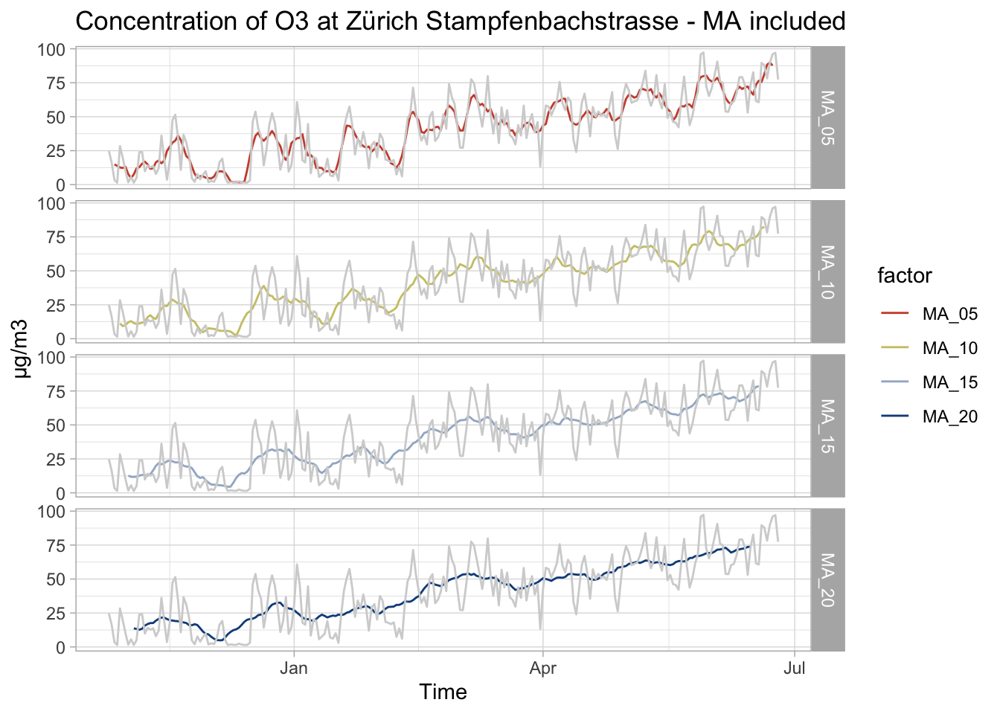
Notice that the trend-cycle is smoother than the original data and captures the main movement of the time series without all of the minor fluctuations. The order of the moving average determines the smoothness of the trend-cycle estimate.
It is also possible to create a multi-layered moving average. This is, for instance, a moving average of a moving average. One reason for doing this is to make an even-order moving average symmetric. When an even k-MA follows a moving average of an even order, it is called a “centred moving average of order k.” Usually, one uses k = 2 to create a \(2 \times x\) Moving Average. When we use a second order MA, then we create a weighted average of observations that is symmetric.
The most common use of centred moving averages is for estimating the trend-cycle from seasonal data. When applied to periodic data, each period of the year is given equal weight as the first and last terms apply to the same period in consecutive years. Consequently, the seasonal variation will be averaged out and the resulting values will have little or no seasonal variation remaining.
air_ZH_merged_ts %>%
filter(Standort == "Zch_Stampfenbachstrasse") %>%
pivot_wider(values_from=Wert, names_from=Parameter) %>%
# Create the MA
mutate(MA_04 = ma(O3, 12),
MA_02_04 = ma(MA_04, n=4)) %>%
select(c(O3, MA_04, MA_02_04)) %>%
ggplot(aes(x = Datum, y = O3)) + geom_line(color = "lightsteelblue3") +
geom_line(aes(x = Datum, y = MA_02_04), color = "violetred4") +
geom_line(aes(x = Datum, y = MA_04), color = "springgreen3") +
ylab("µg/m3") + xlab("Time") +
ggtitle("Concentration of O3 at Zürich Stampfenbachstrasse - Layered MA") +
scale_colour_manual(values = c("violetred4", "lightsteelblue3","dodgerblue4", "darkorange2", "springgreen4", "goldenrod", "khaki3")) +
theme(plot.title= element_text(size=14, color="grey26",
hjust=0.5,lineheight=2.4, margin=margin(15,0,15,45)),
panel.background = element_rect(fill="#f7f7f7"),
panel.grid.major.y = element_line(size = 0.5, linetype = "solid", color = "grey"),
panel.grid.minor = element_blank(),
panel.grid.major.x = element_blank(),
plot.background = element_rect(fill="#f7f7f7", color = "#f7f7f7"),
axis.title.y = element_text(color="grey26", size=12, margin=margin(0,10,0,10)),
axis.title.x = element_text(color="grey26", size=12, margin=margin(10,0,10,0)),
axis.line = element_line(color = "grey")) ## Warning: Removed 14 row(s) containing missing values (geom_path).## Warning: Removed 11 row(s) containing missing values (geom_path).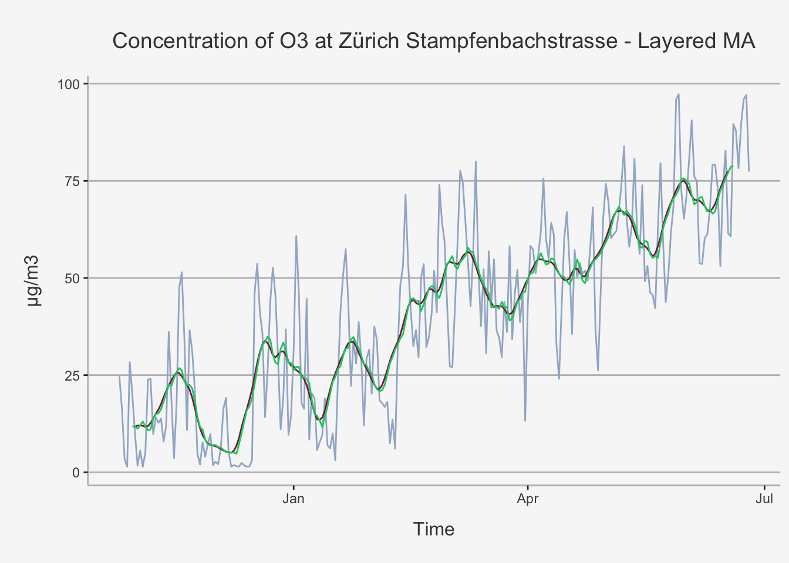
This is now a weighted average of observations that is symmetric.
9.4.2 Decomposition Methods using Classical Decomposition
We now have gathered information on how to decompose the first part of the time series, trends, with Moving Average functions. In order to fully decompose the time series, R provides a function called seas from the seasonal package. We will cover the most common decomposition methods now.
The Classical Decomposition is a relatively simple procedure, and forms the starting point for most other methods of time series decomposition. There are two forms of classical decomposition: an additive decomposition and a multiplicative decomposition.
Although this procedure is quite rudimentary and has the least effective prediction procedure, it nevertheless is handy to study it as it provides the necessary fundament for more advanced decomposition methods.
In classical decomposition, we assume that the seasonal component is constant from year to year.
We then perform the following steps, depending on the form of decomposition:
If we assume that the time series has an additive composition, we can simply subtract the individual parts of the time series from the overall variation. We do this in three steps:
- Trend Component
If m is an even number, compute the trend component \(\hat{T}_t\) using a 2 \(\times\) m - Moving Average, whereas m is the seasonal parameter (months, quarters, years etc.).
If m is an odd number, compute the trend component \(\hat{T}_t\) using an m - Moving Average, whereas m is the seasonal parameter (months, quarters, years etc.).
- Seasonal Component
Then, calculate the de-trended time series as: \(\hat{D}_t = y_t - \hat{T}_t\). Based on this, average the detrended values for that season to get the seasonal component per season. For example, with quarterly data, the seasonal component for Quarter 1 is the average of all the detrended Q1 values in the data. These seasonal component values are then adjusted to ensure that they add to zero. Then, we obtain the overall seasonal component, called \(\hat{S}_t\), by creating a vector of all sub-period seasonal components.
- Remainder Component
We then obtain the remainder, or remaining, variation of the time series by subtracting the overall variation from both seasonal and trend parameters. That is, we get: \(\hat{R}_t = y_t - \hat{T}_t- \hat{D}_t\).
The only difference here is that we are working with multiplicative data. As a consequence, we need to ensure that the subtractions are replaced by divisions.
- Trend Component
If m is an even number, compute the trend component \(\hat{T}_t\) using a 2 \(\times\) m - Moving Average, whereas m is the seasonal parameter (months, quarters, years etc.).
If m is an odd number, compute the trend component \(\hat{T}_t\) using an m - Moving Average, whereas m is the seasonal parameter (months, quarters, years etc.).
- Seasonal Component
Then, calculate the de-trended time series as: \(\hat{D}_t = y_t / \hat{T}_t\). Based on this, average the detrended values for that season to get the seasonal component per season. Then, we obtain the overall seasonal component, called \(\hat{S}_t\), by creating a vector of all sub-period seasonal components.
- Remainder Component
We then obtain the remainder, or remaining, variation of the time series by subtracting the overall variation from both seasonal and trend parameters. That is, we get: \(\hat{R}_t = y_t / (\hat{T}_t \cdot \hat{D}_t)\).
This is a fairly easy procedure to account for decomposed time series. Let’s consider a small example.
library(seasonal)
# First, it's important to understand that, in order to use these decomposition methods, we need to create either yearly or monthly time series. This can be achieved by the following code. We first need to define a parameter from a given dataset. Then, we need to understand at which frequency the parameter is measured. Based on this we can then enter the start dates as well as the frequency, and the software will calculate the time series object for us.
air_ZH_merged %>%
subset(Parameter == "O3" & Standort == "Zch_Stampfenbachstrasse") %>%
filter(Datum <= "2000-08-10T00:00+0100") %>%
select(Wert) %>%
ts(start = c(1988,1), frequency = 12) %>%
# We assume the data to be multiplicatively composed
decompose(type="multiplicative")## $x
## Jan Feb Mar Apr May Jun Jul Aug Sep Oct Nov Dec
## 1988 16.08 14.85 24.91 10.77 6.56 8.34 5.67 10.12 6.11 6.08 4.98 6.06
## 1989 14.10 3.52 4.01 19.73 5.04 15.05 18.74 9.66 27.42 29.23 29.82 37.64
## 1990 19.20 3.44 5.26 7.97 60.50 65.69 41.11 5.48 1.38 10.31 5.81 6.58
## 1991 6.93 34.59 53.90 57.51 23.83 24.54 28.57 48.30 19.32 41.95 60.69 45.84
## 1992 41.23 62.28 41.37 19.97 28.76 23.11 18.30 32.77 13.43 15.60 39.01 51.95
## 1993 55.84 50.75 72.80 67.28 45.91 18.78 36.41 31.28 57.04 39.50 45.04 59.18
## 1994 33.65 26.50 47.27 26.67 22.54 18.13 37.01 57.67 32.65 29.85 16.75 24.13
## 1995 44.01 61.88 44.75 43.08 18.60 58.66 49.91 62.89 33.41 33.18 46.45 45.73
## 1996 33.37 52.71 49.72 58.81 58.49 38.54 71.94 58.63 36.05 51.91 53.38 49.09
## 1997 48.49 37.60 34.02 58.29 58.60 69.82 64.60 32.69 42.06 26.65 39.31 54.24
## 1998 50.86 60.90 55.54 63.51 64.49 63.00 46.49 58.84 50.09 36.45 40.85 72.97
## 1999 62.92 51.54 64.84 62.71 72.82 81.10 38.97 70.09 81.98 69.12 72.34 57.13
## 2000 58.69 49.32 64.79 72.32 50.67 55.70 30.17 48.53 50.39 51.62 75.29 82.69
## 2001 72.41 43.66 70.07 67.50 58.79 81.56 81.60 67.89 94.17 69.91 59.86 77.23
## 2002 96.75 88.40 71.42 78.08 113.44 90.71 57.78 58.52 68.82 67.88 63.61 44.70
## 2003 68.78 70.94 79.71 77.15 43.73 50.01 65.73 73.24 52.41 58.22 64.01 46.42
## 2004 46.76 40.76 60.30 45.46 50.49 49.18 39.59 59.34 66.15 52.65 64.74 80.90
## 2005 68.30 49.87 66.02 66.04 56.97 52.34 47.18 48.55 41.99 66.83 58.42 38.22
## 2006 47.57 38.64 52.77 40.05 46.67 43.73 55.27
##
## $seasonal
## Jan Feb Mar Apr May Jun Jul Aug Sep Oct Nov Dec
## 1988 1.0112970 0.9620035 1.0761474 1.1118798 1.0154270 1.0828736 0.9698952 0.9790903 0.8816968 0.8990461 0.9831580 1.0274854
## 1989 1.0112970 0.9620035 1.0761474 1.1118798 1.0154270 1.0828736 0.9698952 0.9790903 0.8816968 0.8990461 0.9831580 1.0274854
## 1990 1.0112970 0.9620035 1.0761474 1.1118798 1.0154270 1.0828736 0.9698952 0.9790903 0.8816968 0.8990461 0.9831580 1.0274854
## 1991 1.0112970 0.9620035 1.0761474 1.1118798 1.0154270 1.0828736 0.9698952 0.9790903 0.8816968 0.8990461 0.9831580 1.0274854
## 1992 1.0112970 0.9620035 1.0761474 1.1118798 1.0154270 1.0828736 0.9698952 0.9790903 0.8816968 0.8990461 0.9831580 1.0274854
## 1993 1.0112970 0.9620035 1.0761474 1.1118798 1.0154270 1.0828736 0.9698952 0.9790903 0.8816968 0.8990461 0.9831580 1.0274854
## 1994 1.0112970 0.9620035 1.0761474 1.1118798 1.0154270 1.0828736 0.9698952 0.9790903 0.8816968 0.8990461 0.9831580 1.0274854
## 1995 1.0112970 0.9620035 1.0761474 1.1118798 1.0154270 1.0828736 0.9698952 0.9790903 0.8816968 0.8990461 0.9831580 1.0274854
## 1996 1.0112970 0.9620035 1.0761474 1.1118798 1.0154270 1.0828736 0.9698952 0.9790903 0.8816968 0.8990461 0.9831580 1.0274854
## 1997 1.0112970 0.9620035 1.0761474 1.1118798 1.0154270 1.0828736 0.9698952 0.9790903 0.8816968 0.8990461 0.9831580 1.0274854
## 1998 1.0112970 0.9620035 1.0761474 1.1118798 1.0154270 1.0828736 0.9698952 0.9790903 0.8816968 0.8990461 0.9831580 1.0274854
## 1999 1.0112970 0.9620035 1.0761474 1.1118798 1.0154270 1.0828736 0.9698952 0.9790903 0.8816968 0.8990461 0.9831580 1.0274854
## 2000 1.0112970 0.9620035 1.0761474 1.1118798 1.0154270 1.0828736 0.9698952 0.9790903 0.8816968 0.8990461 0.9831580 1.0274854
## 2001 1.0112970 0.9620035 1.0761474 1.1118798 1.0154270 1.0828736 0.9698952 0.9790903 0.8816968 0.8990461 0.9831580 1.0274854
## 2002 1.0112970 0.9620035 1.0761474 1.1118798 1.0154270 1.0828736 0.9698952 0.9790903 0.8816968 0.8990461 0.9831580 1.0274854
## 2003 1.0112970 0.9620035 1.0761474 1.1118798 1.0154270 1.0828736 0.9698952 0.9790903 0.8816968 0.8990461 0.9831580 1.0274854
## 2004 1.0112970 0.9620035 1.0761474 1.1118798 1.0154270 1.0828736 0.9698952 0.9790903 0.8816968 0.8990461 0.9831580 1.0274854
## 2005 1.0112970 0.9620035 1.0761474 1.1118798 1.0154270 1.0828736 0.9698952 0.9790903 0.8816968 0.8990461 0.9831580 1.0274854
## 2006 1.0112970 0.9620035 1.0761474 1.1118798 1.0154270 1.0828736 0.9698952
##
## $trend
## Jan Feb Mar Apr May Jun Jul Aug Sep Oct Nov Dec
## 1988 NA NA NA NA NA NA 9.961667 9.407083 8.064167 7.566667 7.876667 8.092917
## 1989 8.917083 9.442500 10.311250 12.163750 14.163333 16.514167 18.042500 18.251667 18.300417 17.862500 19.683333 24.104167
## 1990 27.146250 27.904167 26.645000 24.771667 22.982917 20.688333 18.882917 19.669583 22.994167 27.085000 27.621250 24.378750
## 1991 22.141667 23.403333 25.935000 28.000833 31.605833 35.528333 38.593333 41.176250 41.807917 39.721667 38.362917 38.508750
## 1992 38.021250 36.946250 36.053750 34.710417 32.709167 32.060417 32.923750 33.052083 33.881250 37.162083 39.847917 40.382083
## 1993 40.956250 41.648750 43.403750 46.216667 47.463750 48.016250 47.392917 45.457917 43.383750 40.627917 37.962083 36.961250
## 1994 36.959167 38.083750 38.167083 36.748750 35.167917 32.528750 31.500000 33.405833 34.775000 35.353750 35.873333 37.397917
## 1995 39.624167 40.379167 40.628333 40.798750 42.175000 44.312500 44.769167 43.943750 43.768750 44.631250 46.948750 47.772500
## 1996 47.852083 48.592500 48.525000 49.415417 50.484583 50.913333 51.683333 51.683750 50.400000 49.724167 49.707083 51.015000
## 1997 52.012500 50.625833 49.795417 48.993333 47.354583 46.982917 47.296250 48.365833 50.233333 51.347500 51.810417 51.771667
## 1998 50.732917 51.067917 52.492083 53.235000 53.707500 54.552083 55.835000 55.947500 55.945000 56.299167 56.612917 57.714167
## 1999 58.155000 58.310417 60.107917 62.797917 65.471250 66.123333 65.287083 65.018333 64.923750 65.322083 64.799583 62.818333
## 2000 61.393333 60.128333 57.913750 55.868333 55.262083 56.450000 58.086667 58.422500 58.406667 58.425833 58.563333 59.979167
## 2001 63.199583 66.149167 68.780000 71.366250 71.485417 70.615000 71.401667 74.280000 76.200417 76.697500 79.415417 82.073750
## 2002 81.462500 80.079583 78.632917 77.492083 77.563750 76.364583 73.843750 71.950833 71.568750 71.875417 68.932083 64.331667
## 2003 62.967083 63.911667 63.841250 62.755000 62.369167 62.457500 61.611667 59.436667 57.370417 55.241250 54.202500 54.449583
## 2004 53.325833 51.657500 51.650833 51.991250 51.789583 53.256667 55.590833 56.867917 57.485833 58.581667 59.709167 60.110833
## 2005 60.558750 60.425417 58.969167 58.553333 58.880833 56.839167 54.197083 52.865417 51.845417 50.210417 48.698333 47.910417
## 2006 47.888750 NA NA NA NA NA NA
##
## $random
## Jan Feb Mar Apr May Jun Jul Aug Sep Oct Nov Dec
## 1988 NA NA NA NA NA NA 0.58684885 1.09875978 0.85933491 0.89375194 0.64307788 0.72877234
## 1989 1.56357088 0.38750653 0.36137767 1.45882022 0.35044216 0.84159294 1.07089792 0.54056986 1.69936713 1.82013917 1.54093985 1.51978383
## 1990 0.69937913 0.12814827 0.18344179 0.28936451 2.59239706 2.93221630 2.24467569 0.28455265 0.06806787 0.42339707 0.21394862 0.26268712
## 1991 0.30948828 1.53637135 1.93121564 1.84720284 0.74251988 0.63785501 0.76326114 1.19805725 0.52411832 1.17468798 1.60909696 1.15853595
## 1992 1.07228006 1.75227230 1.06626054 0.51744049 0.86590588 0.66566087 0.57308230 1.01263943 0.44957001 0.46692010 0.99574246 1.25204851
## 1993 1.34817575 1.26665235 1.55859179 1.30927097 0.95256919 0.36118491 0.79210444 0.70280436 1.49119064 1.08141046 1.20677148 1.55830562
## 1994 0.90029365 0.72331842 1.15086634 0.65271354 0.63118774 0.51469823 1.21138930 1.76321339 1.06487048 0.93913250 0.47491925 0.62796326
## 1995 1.09827858 1.59300196 1.02351047 0.94966627 0.43431931 1.22246956 1.14943327 1.46171166 0.86575114 0.82690449 1.00632527 0.93163878
## 1996 0.68956728 1.12757939 0.95212470 1.07036252 1.14096976 0.69904064 1.43514281 1.15862557 0.81125143 1.16118532 1.09228755 0.93652520
## 1997 0.92186164 0.77203860 0.63485303 1.07003810 1.21867214 1.37234125 1.40825406 0.69032480 0.94963784 0.57729252 0.77172515 1.01965173
## 1998 0.99130618 1.23963123 0.98319650 1.07296864 1.18252063 1.06647691 0.85847614 1.07416058 1.01547795 0.72013445 0.73392761 1.23051310
## 1999 1.06985012 0.91880135 1.00239661 0.89811870 1.09534601 1.13263079 0.61542955 1.10102571 1.43213863 1.17696005 1.13548914 0.88511997
## 2000 0.94528808 0.85264306 1.03957194 1.16421952 0.90297336 0.91119955 0.53551798 0.84841314 0.97850417 0.98272297 1.30764002 1.34176633
## 2001 1.13293663 0.68609256 0.94666910 0.85065424 0.80991099 1.06660226 1.17830308 0.93349317 1.40163833 1.01385563 0.76667021 0.91581148
## 2002 1.17439590 1.14750297 0.84400247 0.90620122 1.44031906 1.09694645 0.80675004 0.83070289 1.09061629 1.05045990 0.93860030 0.67624964
## 2003 1.08011471 1.15381027 1.16021823 1.10568081 0.69049545 0.73942564 1.09995743 1.25855188 1.03611246 1.17226750 1.20117201 0.82972639
## 2004 0.86707794 0.82020828 1.08484636 0.78639609 0.96009507 0.85277958 0.73427293 1.06575519 1.30511794 0.99966543 1.10282951 1.30984558
## 2005 1.11523166 0.85791265 1.04034836 1.01437285 0.95284785 0.85037065 0.89754705 0.93798266 0.91857844 1.48045652 1.22018070 0.77639917
## 2006 0.98224751 NA NA NA NA NA NA
##
## $figure
## [1] 1.0112970 0.9620035 1.0761474 1.1118798 1.0154270 1.0828736 0.9698952 0.9790903 0.8816968 0.8990461 0.9831580 1.0274854
##
## $type
## [1] "multiplicative"
##
## attr(,"class")
## [1] "decomposed.ts"The output above indicates the different parts the function calculated. As we can see, we obtain the estimated time series for all three components, as well as the actual time series. We can now use an inbuilt function to plot these characteristics.
air_ZH_merged %>%
subset(Parameter == "O3" & Standort == "Zch_Stampfenbachstrasse") %>%
filter(Datum <= "2000-08-10T00:00+0100") %>%
select(Wert) %>%
ts(start = c(1988,1), frequency = 12) %>%
# We assume the data to be multiplicatively composed
decompose(type="multiplicative") %>% autoplot() + xlab("Year") +
ggtitle("Classical multiplicative decomposition
of Air Quality data in Zurich")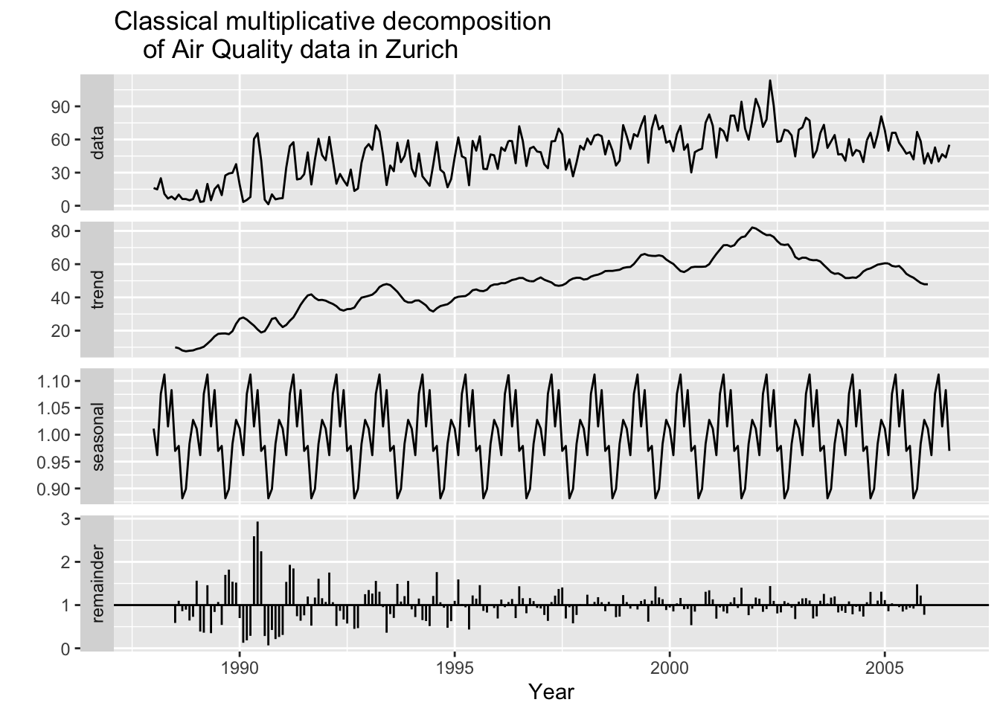
We won’t cover the exact details of each of the facetted visualisations, but leave this until we cover more advanced models. However, note that it is not recommended to use classical decomposition due to three consdierations:
- The trend-cycle estimate tends to over-smooth rapid rises and falls in the data
- Classical decomposition methods assume that the seasonal component repeats from year to year. For example, electricity demand patterns have changed over time as air conditioning has become more widespread (going from Winter usage to heat over to summer usage for cooling with temperatures increasing all over the world)
- The estimate of the trend-cycle is unavailable for the first few and last few observations. For example, if m = 12, there is no trend-cycle estimate for the first six or the last six observations.
9.4.3 Decomposition Methods using X11
As we have covered the basics, we can can now include extra steps and features in order to overcome the drawbacks of classical decomposition that were discussed in the previous section. In particular, trend-cycle estimates are available for all observations including the end points, and the seasonal component is allowed to vary slowly over time. X11 also has some sophisticated methods for handling trading day variation, holiday effects and the effects of known predictors. It handles both additive and multiplicative decomposition. The process is entirely automatic and tends to be highly robust to outliers and level shifts in the time series.
In essence, the X11 works in the following way:
- Initial Estimates
We first also apply a similar Moving average filter to filter out long term trends. Based on this, we then either subtract or divise the original time series by the trend estimate to obtain the seasonal parameter, also as an average. The remainder is calculated in an identical way.
- Identify extreme events and calendar effects
Based on the first set of the time series estimates, we can get the first components. From these estimated values we can identify extremes and outliers. The irregular values are plotted along with some outliers idetified. There are other effects that can be found from estimated irregular series. This includes trading day (TD) and holiday effects. The first are measures the impact of the day-of-the-week composition of a month. For example, January 2016 will have 5 Fridays, 5 Saturdays, and 5 Sundays. While January 2013 had 4 Fridays, 4 Saturdays and 4 Sundays. This can have a dramatic effect on a seasonal adjustment.
Consequently, it is fairly similar to the classical method but incorporates options to include specific, irregular events while obtaining better MA values.
Let’s look directly at the output.
air_ZH_merged %>%
subset(Parameter == "O3" & Standort == "Zch_Stampfenbachstrasse") %>%
filter(Datum <= "2000-08-10T00:00+0100") %>%
select(Wert) %>%
ts(start = c(1988,1), frequency = 12) %>%
seas(x11="") %>% autoplot() +
ylab("µg/m3") + xlab("Time") +
ggtitle("Concentration of O3 at Zürich Stampfenbachstrasse - Layered MA") +
scale_colour_manual(values = c("violetred4", "lightsteelblue3","dodgerblue4", "darkorange2", "springgreen4", "goldenrod", "khaki3")) +
theme(plot.title= element_text(size=14, color="grey26",
hjust=0.5,lineheight=2.4, margin=margin(15,0,15,45)),
panel.background = element_rect(fill="#f7f7f7"),
panel.grid.major.y = element_line(size = 0.5, linetype = "solid", color = "grey"),
panel.grid.minor = element_blank(),
panel.grid.major.x = element_blank(),
plot.background = element_rect(fill="#f7f7f7", color = "#f7f7f7"),
axis.title.y = element_text(color="grey26", size=12, margin=margin(0,10,0,10)),
axis.title.x = element_text(color="grey26", size=12, margin=margin(10,0,10,0)),
axis.line = element_line(color = "grey")) 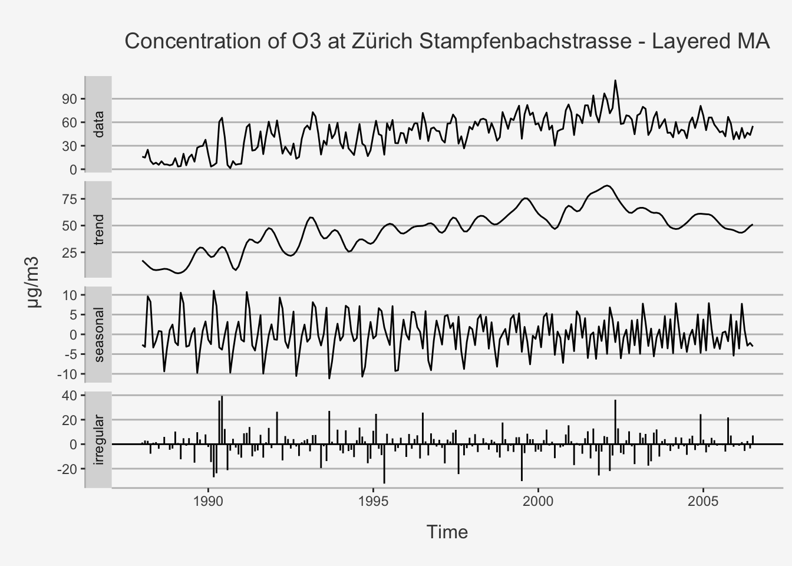
If we compare this, we can analyse the following:
- X11 enabled us to account for the sudden falls in 1990 and 2002. Also, the larger shifted trend around 2000 is also better captured, thereby mitigating the over-smoothing issue
- Further, the seasonal parameter is able to better catch the changes in width between two periods
Given the output, we can plot the individual time series components as follows:
seasonal()will extract the seasonal component -trendcycle()will extract the trend-cycle componentremainder()will extract the remainder componentseasadj()will compute the seasonally adjusted time series
# Create the time series object
Air_ZH_ts <- air_ZH_merged %>%
subset(Parameter == "O3" & Standort == "Zch_Stampfenbachstrasse") %>%
filter(Datum <= "2000-08-10T00:00+0100") %>%
select(Wert) %>%
ts(start = c(1988,1), frequency = 12)
# Create the fitted variable
fit <- Air_ZH_ts%>%
seas(x11="")
# Create the plot
autoplot(Air_ZH_ts, series="Data") +
autolayer(trendcycle(fit), series="Trend") +
autolayer(seasadj(fit), series="Seasonally Adjusted") +
xlab("Year") + ylab("O3 concentration in mg") +
ggtitle("X11 decomposition of Air Quality data in Zurich") +
ylab("µg/m3") + xlab("Time") +
ggtitle("Concentration of O3 at Zürich Stampfenbachstrasse - Layered X11") +
scale_colour_manual(values = c("violetred4", "lightsteelblue3","darkorange2", "springgreen4", "goldenrod", "khaki3")) +
theme(plot.title= element_text(size=14, color="grey26",
hjust=0.5,lineheight=2.4, margin=margin(15,0,15,45)),
panel.background = element_rect(fill="#f7f7f7"),
panel.grid.major.y = element_line(size = 0.5, linetype = "solid", color = "grey"),
panel.grid.minor = element_blank(),
panel.grid.major.x = element_blank(),
plot.background = element_rect(fill="#f7f7f7", color = "#f7f7f7"),
axis.title.y = element_text(color="grey26", size=12, margin=margin(0,10,0,10)),
axis.title.x = element_text(color="grey26", size=12, margin=margin(10,0,10,0)),
axis.line = element_line(color = "grey")) 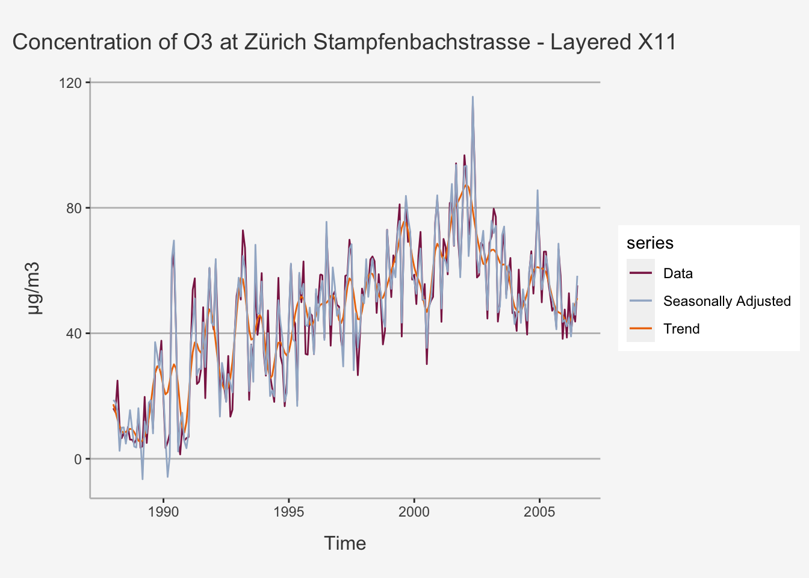
9.4.4 Decomposition Methods using STL
STL stands for “Seasonal and Trend Decomposition using Loess”. Loess itself is a method for measuring non-linear relationships. The STL model is a deterministic model that allows the components to be calculated separately using different methods. In generally, it:
- estimates the behavior of the trend using a LOESS regression
- calculates the seasonal component by selecting one of two models: the seasonal ARIMA model, or the ETS model.
The main difference that the STL model has with the others is that, when considering the trend as a LOESS estimation, it is extremely flexible to the changes in the trend of the series, unlike the linear regression, which assumes that the series maintains the same constant.
Let’s see how we can calculate each component individually. We will do so by using the wine dataset of the forecast package.
# Get a wine dataset
wine <- as.data.frame(forecast::wineind)
# Define a period
wine <- wine %>% mutate(Period=1:nrow(as.matrix(forecast::wineind)))
colnames(wine) <- c("Sales", "Period")
# Define train and test sets
Train <- wine %>% filter(Period <= 165)
Test<- wine %>% filter(Period<=176 & Period>=165)Let’s look at the dataset quickly
wine %>% ggplot(aes(x = Period, y = Sales)) + geom_line(color = "violetred4") +
xlab("Period") + ylab("Sales of Wine") +
ggtitle("Wine Sales Data") +
scale_colour_manual(values = c("violetred4", "lightsteelblue3","darkorange2", "springgreen4", "goldenrod", "khaki3")) +
theme(plot.title= element_text(size=14, color="grey26",
hjust=0.5,lineheight=2.4, margin=margin(15,0,15,45)),
panel.background = element_rect(fill="#f7f7f7"),
panel.grid.major.y = element_line(size = 0.5, linetype = "solid", color = "grey"),
panel.grid.minor = element_blank(),
panel.grid.major.x = element_blank(),
plot.background = element_rect(fill="#f7f7f7", color = "#f7f7f7"),
axis.title.y = element_text(color="grey26", size=12, margin=margin(0,10,0,10)),
axis.title.x = element_text(color="grey26", size=12, margin=margin(10,0,10,0)),
axis.line = element_line(color = "grey")) ## Don't know how to automatically pick scale for object of type ts. Defaulting to continuous.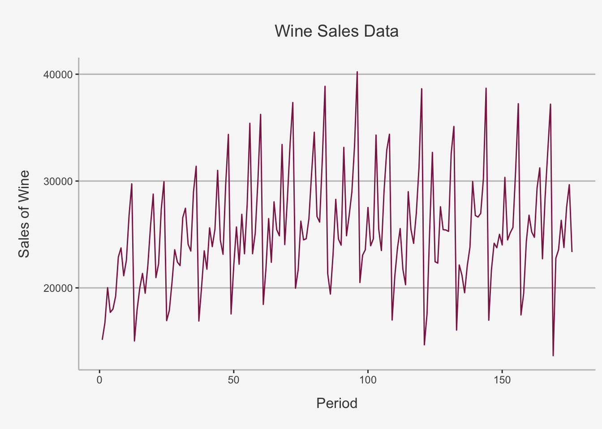
At first glance we can observe several characteristics of the series: first, that it maintains a slightly similar behavior, without radical changes in the behavior of the trend; Secondly, it presents a strong seasonal behavior, which explains these ups and downs, far from the average of the series.
In order to effectively model these time series concepts of trends and seasonality, let’s discover the STM model components.
The way to calculate the trend using the STL model is to calculate it from a LOESS regression. LOESS combines the simplicity of linear least squares regression with the flexibility of non-linear regression by fitting simple models on local subsets of data to create a function that describes the deterministic part of the variation in point-to-point data. In fact, one of the main attractions of this method is that it is not necessary to specify a global function to fit a model to the data. In return, a greater calculation power is necessary.
The key parameter for the estimation of the regression LOESS is the span. The span is the degree of smoothing of the series. Higher smoothing values (h) produce softer functions that move less in response to fluctuations in the data. IN general, the smaller the h, the closer the adjustment of the regression function to the data will be. Using too small a value of the smoothing parameter is not desirable because the regression function will begin to capture the random error in the data. The useful values of the smoothing parameter are generally in the range of 0.25 to 0.5 for most LOESS applications.
As an example to this smoothing difference we will occupy different values of span for the same regression, in order to compare the results, using the following code:
#Estimation:
loessMod10 <- loess(Sales ~ Period, data=Train, span=0.10) # 10% smoothing span
loessMod25 <- loess(Sales ~ Period, data=Train, span=0.25) # 25% smoothing span
loessMod50 <- loess(Sales ~ Period, data=Train, span=0.50) # 50% smoothing span
loessMod75 <- loess(Sales ~ Period, data=Train, span=0.75) # 75% smoothing span
loessMod100 <- loess(Sales ~ Period, data=Train, span=1) # 100% smoothing span
# Prediction
loessMod10_pred <- as.data.frame(predict(loessMod10))
loessMod25_pred <- as.data.frame(predict(loessMod25))
loessMod50_pred <- as.data.frame(predict(loessMod50))
loessMod75_pred <- as.data.frame(predict(loessMod75))
loessMod100_pred <- as.data.frame(predict(loessMod100))
# Set together with Period variable
wine_est <- wine[12:176,]
wine_predict <- wine_est %>%
mutate(loessMod10_pred = loessMod10_pred$`predict(loessMod10)`,
loessMod25_pred = loessMod25_pred$`predict(loessMod25)`,
loessMod50_pred = loessMod50_pred$`predict(loessMod50)`,
loessMod75_pred = loessMod75_pred$`predict(loessMod75)`,
loessMod100_pred = loessMod100_pred$`predict(loessMod100)`)
# Create a time-series object
wine_est_loess <- as.data.frame(cbind(wine_est, loessMod10_pred, loessMod25_pred, loessMod50_pred, loessMod75_pred, loessMod100_pred))
wine_est_loess_ts <- xts(wine_est_loess[,-2], order.by = as.Date(wine_est_loess[,2]))Note that we now created a degree of smoothing for the time series, where the span indicates the smoothing strength. Let’s plot this:
wine_est_loess_ts %>% tidy() %>% ggplot(aes(x=index, y=value, color = series)) + geom_line() +
xlab("Period") + ylab("Sales of Wine") +
ggtitle("Wine Sales Data") +
scale_colour_manual(values = c("black", "darkorange2", "springgreen4", "goldenrod", "violetred4", "lightsteelblue3")) +
theme(plot.title= element_text(size=14, color="grey26",
hjust=0.5,lineheight=2.4, margin=margin(15,0,15,45)),
panel.background = element_rect(fill="#f7f7f7"),
panel.grid.major.y = element_line(size = 0.5, linetype = "solid", color = "grey"),
panel.grid.minor = element_blank(),
panel.grid.major.x = element_blank(),
plot.background = element_rect(fill="#f7f7f7", color = "#f7f7f7"),
axis.title.y = element_text(color="grey26", size=12, margin=margin(0,10,0,10)),
axis.title.x = element_text(color="grey26", size=12, margin=margin(10,0,10,0)),
axis.line = element_line(color = "grey")) 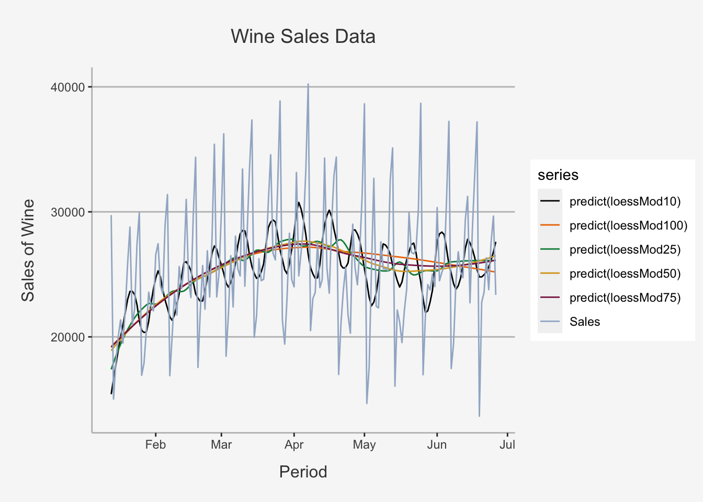
We can observe the comparison between different span values separately.
Note again that it is the aim of a forecasting model to best possibly predict future values. We manifested that this can be achieved by incorporating a model which can best possibly fit the data at hand while simultaneously providing a good generalisation to external data. By doing so, we need to balance the fit, in order to circumvent both over- as well as underfitting scenarios. To quantify the extent to which we are able to accurately fit the model while allowing a sufficient generalisation, we defined certain metrics, such as the RMSE or MAE.
Now, in the case of the STL model, we can depict model fit based on trends, seasonality and an external factor. In order to quantify the trend fit, we can tweak the span to understand which value delivers the best possible (lowest) estimation error in the training set. To achieve this result, we will use the loess.as function, from the fANCOVA package.
The metrics the loess.as function chooses to determine model fit and optimal smoothing value are the bias-corrected Akaike information criterion (aicc) and the generalized crossvalidation (gcv). Let’s quickly calculate both:
Loess_Opt <- fANCOVA::loess.as(Train$Period, Train$Sales, user.span = NULL, plot = T)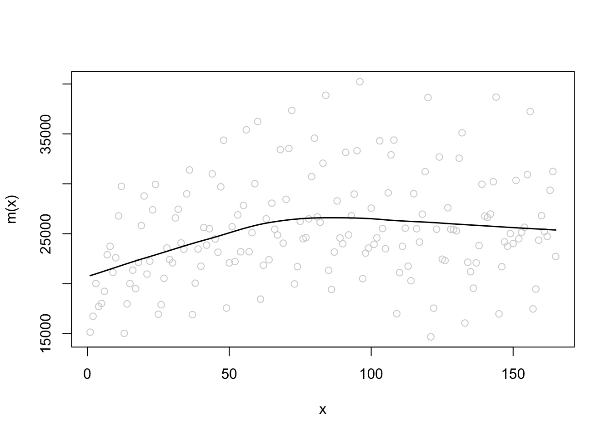
As we can see, the above plot shows at what values the AICC is maximised. The x defines the overall parameter space and the cut defines the maximum value. We can quantify the repsective span value as follows:
# Get the max span value
span_opt <- Loess_Opt[["pars"]][["span"]]
span_opt## [1] 0.7840682On the other hand, using the checkresiduals function we can carry out a brief analysis of the residuals of the estimate, in order to contrast that the remaining variation is distributed in a normal way, with a constant variance and an average equal to 0 when we have the optimal LOESS.
checkresiduals(Loess_Opt$residuals)## Warning in modeldf.default(object): Could not find appropriate degrees of freedom for this model.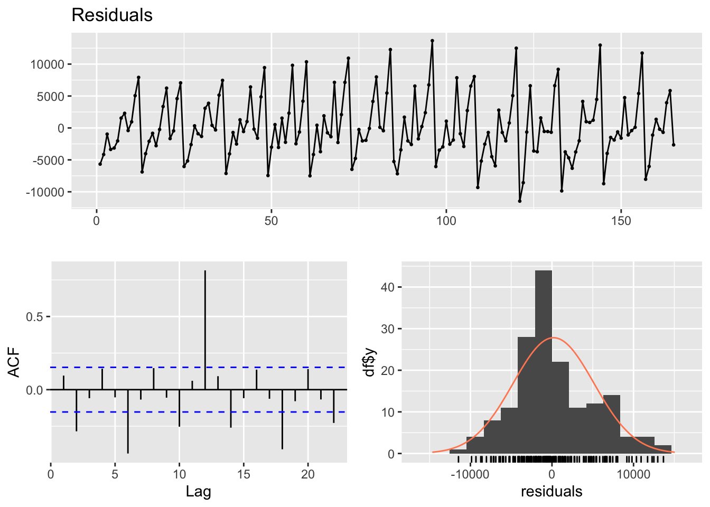
As we have defined earlier, we can see that:
- The residuals do not appear to show heteroskedasticity
- There appears to be no normality
- The model appears to show serious autocorrelation due to the fact that we only accounted for trend but not seasons yet
Since we have elaborated how we can retrieve the best possible trend component, let’s look into the seasonality.
The most common options to assess seasonality are usually through ARIMA or ETS. Both models have an important effect that facilitates the calculation of seasonality once the trend is already conceived (which was already calculated from LOESS).
To be sure that the appropriate model was selected to model the behavior of the seasonal component, both the Akaike criterion and the RMSE of both models will be compared, and we will select the one that best suits us according to our purposes.
As a first step, it is necessary to define the training series as a time series, with a periodicity of 12 (since we are considering a monthly seasonality that is repeated year after year - if it were different, we need to adjust this, in e.g. weekly or quarterly, hourly or minutes etc.s). In general, this implies:
For the forecast (12 months) of the series, we will need to select the
s.window = 12, because we will look for the behavior of the seasonal component with a periodicity of 12 months.In turn, as the calculation of the optimal value of the span for the estimation of the trend was made, it will be added to the model from the criterion
t.window.
We will start by making the forecast with the ETS and ARIMA model.
# Define a time series model - same as s.window
wine_ts <- ts(Train$Sales, freq=12)
# Now, we define the model for ETS
ts_wine_forecast_ets <- stlf(wine_ts,
# Define the number of periods for forecastings
h = 12,
# seasonal component behaviour with periodicity of 12 months (yearly seasonality - if months = 4, weeks = 7)
s.window = 12,
# Define here the value of the optimal span
t.window = span_opt,
# Method to use for forecasting the seasonally adjusted series
method = c("ets"))
# Now, we define the model for arima
ts_wine_forecast_arima <- stlf(wine_ts,
# Define the number of periods for forecastings
h = 12,
# seasonal component behaviour with periodicity of 12 months (yearly seasonality - if months = 4, weeks = 7)
s.window = 12,
# Define here the value of the optimal span
t.window = span_opt,
# Method to use for forecasting the seasonally adjusted series
method = c("arima"))
# Let0s get the AIC
aic_ets <- ts_wine_forecast_ets[["model"]][["aic"]]
aic_arima <- ts_wine_forecast_arima[["model"]][["aic"]]
cbind(aic_ets, aic_arima)## aic_ets aic_arima
## [1,] 3355.928 2963.756According to the data, we should go for the arima model as it minimises the AIC.
Now, let’s repeat this for the RMSE.
# Get the test set
TestSales<-as.numeric(Test$Sales)
# First for the ARIMA model
arima_fc <- as.numeric(ts_wine_forecast_arima$mean)
# We now apply the weights generated by the arima model to the test dataset in order to fit the data on the test set
Arima <-data.frame(accuracy(arima_fc,TestSales))
# Same for ETS
ets_fc <-as.numeric(ts_wine_forecast_ets$mean)
ets<-data.frame(accuracy(ets_fc,TestSales))
# Bind them
Accuracy<- rbind(ARIMA=Arima,ETS=ets)
Accuracy## ME RMSE MAE MPE MAPE
## ARIMA -500.7483 6212.893 4066.676 -5.913015 15.96556
## ETS -685.8625 6361.358 4219.720 -6.712627 16.60415Given the RMSE and the fact that the Arima model also outperformed in terms of the AIC, we will proceed with the Arima model for the final estimation. That is, we use:
ts_wine_forecast_arima <- stlf(wine_ts,
# Define the number of periods for forecastings
h = 12,
# seasonal component behaviour with periodicity of 12 months (yearly seasonality - if months = 4, weeks = 7)
s.window = 12,
# Define here the value of the optimal span
t.window = span_opt,
# Method to use for forecasting the seasonally adjusted series
method = c("arima"))and we can plot the result of our fit and the actual data as:
# Fitted df
fitted <- as.data.frame(ts_wine_forecast_arima$fitted)
# Create a time-series object
wine_est_arima <- as.data.frame(cbind(wine_est, fitted))
colnames(wine_est_arima) <- c("Sales", "Period", "Estimated (Fitted) Sales")
wine_est_arima_ts <- xts(wine_est_arima[,-2], order.by = as.Date(wine_est_arima[,2]))
# Plot
wine_est_arima_ts %>% tidy() %>% ggplot(aes(x=index, y=value, color = series)) + geom_line() +
xlab("Period") + ylab("Sales of Wine") +
ggtitle("Wine Sales Data") +
scale_colour_manual(values = c("black", "darkorange2", "springgreen4", "goldenrod", "violetred4", "lightsteelblue3")) +
theme(plot.title= element_text(size=14, color="grey26",
hjust=0.5,lineheight=2.4, margin=margin(15,0,15,45)),
panel.background = element_rect(fill="#f7f7f7"),
panel.grid.major.y = element_line(size = 0.5, linetype = "solid", color = "grey"),
panel.grid.minor = element_blank(),
panel.grid.major.x = element_blank(),
plot.background = element_rect(fill="#f7f7f7", color = "#f7f7f7"),
axis.title.y = element_text(color="grey26", size=12, margin=margin(0,10,0,10)),
axis.title.x = element_text(color="grey26", size=12, margin=margin(10,0,10,0)),
axis.line = element_line(color = "grey")) 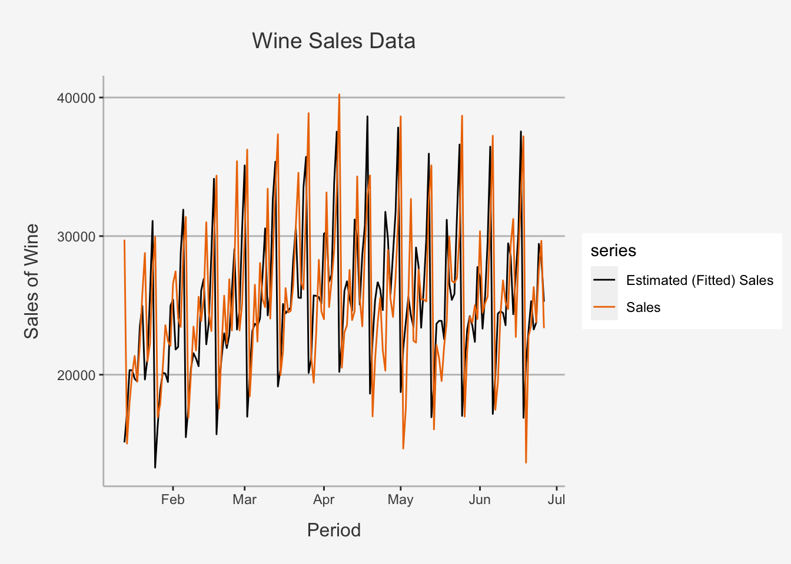
As already covered, we need to conduct an analysis of the error terms in order to account for the kind of behaviour the series needs to model. For instance, we discovered that a seasonal pattern prevails which cannot be captured by LOESS. Now, including a seasonal parameter in form of an arima model, we may find different results. Let’s see.
checkresiduals(ts_wine_forecast_arima$residuals)## Warning in modeldf.default(object): Could not find appropriate degrees of freedom for this model.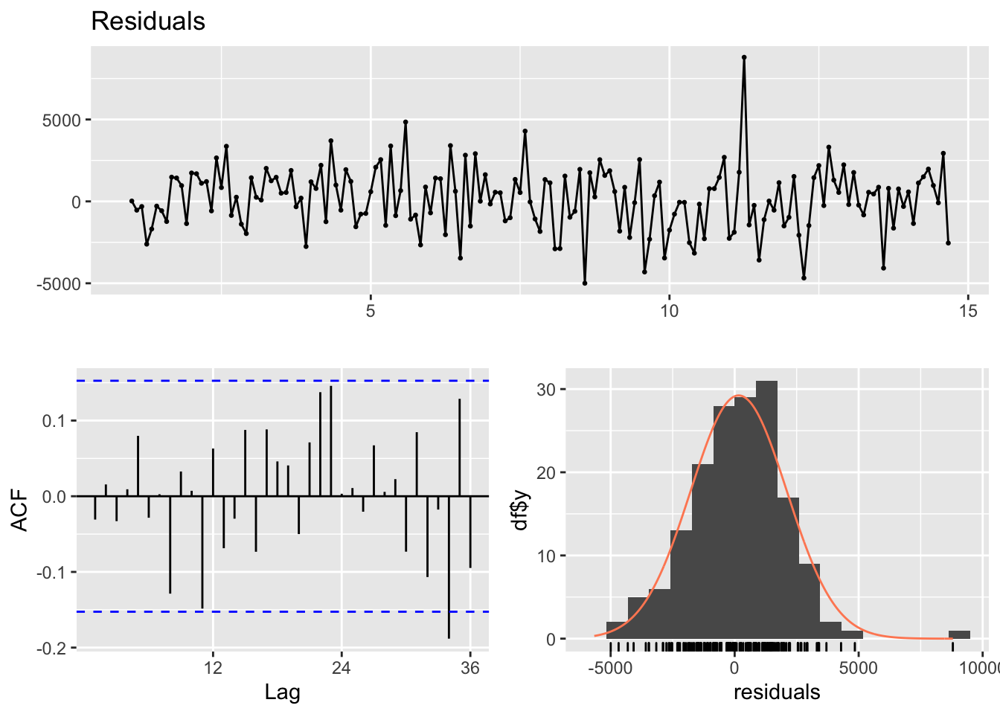
That’s great. We were now able to account for autocorrelation and non-normality due to seasonality. Moreover, there appears to be no heteroskedasticity present.
We can dig a little deeper into the normality concept by observing so-called QQ-Plots. These are plots comparing the quantiles of the residuals with the quantiles of a Gaussian distribution to show how close both distributions match.
qqnorm(ts_wine_forecast_arima$residuals, pch = 1, frame = FALSE);
qqline(ts_wine_forecast_arima$residuals, col = "steelblue", lwd = 2)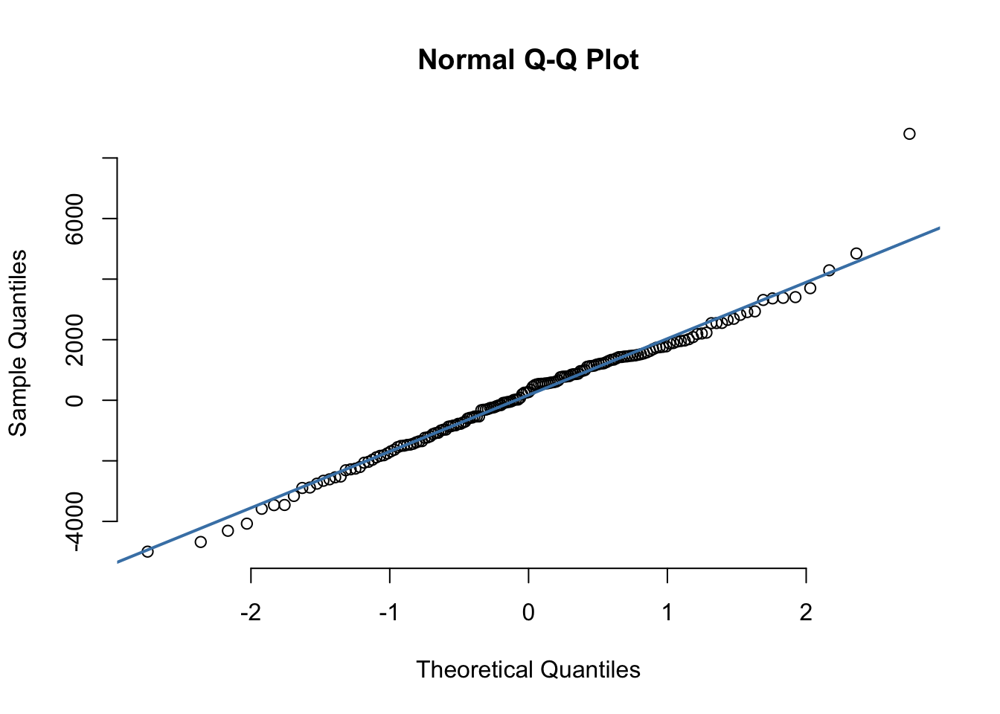
As we can see in the Q-Q plot, there is a normal behavior of the waste series.
Why do we care then so much about normality of the residuals? Well, it can be traced back to th same idea as in non time-series settings. We need to make sure that the errors are IID and thus are randomly sampled, without which we could not make any inferential statements and perform deductive statistics. Now, through a time-series decomposition we effectively decompose the series into an observable part (characterised by the trend and seasonality) and an unobservable part (characterised by the residuals). A correct model allows to capture efficiently the behaviour of the time series such that the only thing that remains is, effectively, white noise. As we covered, this is random variation that simply cannot be predicted. Note the term white noise again. We stated that time series models obtain a covariance stationarity form. This form defines that only the mean, variance and (auto-)covariance terms are stationary. We stated that white noise models are models which are this form of stationary and IID. Now, we also stated that it is possible to attain covariance stationarity by assuming that the data we work with is normally distributed (as it is defined by only its first two moments). However, since time series data is not covariance stationary, we first need to model it accordingly to account for the seasonal and trend characteristics. If we do this successfully, we arrive at a remaining variation which, if we assume is normally distributed, upholds to the principles of white noise models, enabling us to conduct procedures common in deductive statistics.
As such, if the residuals are approximately normally distributed, then we can assume that we successfully accounted for all the variation which disabled white noise characteristics in the data. Having accounted for this, we can proceed to conduct the same statistical inference as before.
Once the almost normal behavior of the residuals is contrasted, and obtaining a model with a fairly acceptable RMSE, we can proceed to carry out the forecast of the series and make the comparison with the original test series. First, we can make the model forecast chart using the autoplot function, which is inside the ggplot2 package.
Note: it must be remembered that the autoplot function only works with time series, so that when we want to occupy the function the series must be established as a series of time using the ts function.
# Plot the train and test series
autoplot(ts_wine_forecast_arima) +
xlab("Period") + ylab("Sales of Wine") +
ggtitle("Wine Sales Data - Forecasting with ARIMA + TSL ") +
scale_colour_manual(values = c("black", "darkorange2", "springgreen4", "goldenrod", "violetred4", "lightsteelblue3")) +
theme(plot.title= element_text(size=14, color="grey26",
hjust=0.5,lineheight=2.4, margin=margin(15,0,15,45)),
panel.background = element_rect(fill="#f7f7f7"),
panel.grid.major.y = element_line(size = 0.5, linetype = "solid", color = "grey"),
panel.grid.minor = element_blank(),
panel.grid.major.x = element_blank(),
plot.background = element_rect(fill="#f7f7f7", color = "#f7f7f7"),
axis.title.y = element_text(color="grey26", size=12, margin=margin(0,10,0,10)),
axis.title.x = element_text(color="grey26", size=12, margin=margin(10,0,10,0)),
axis.line = element_line(color = "grey")) 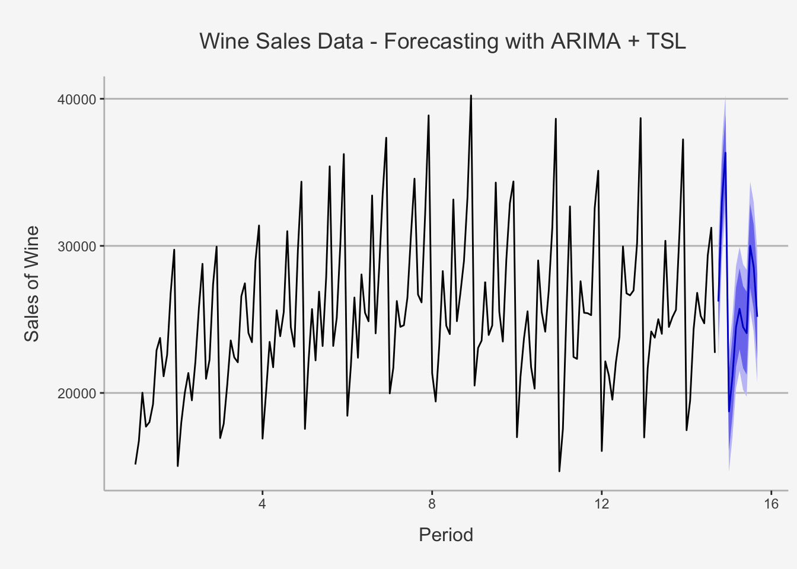
Let’s observe this a little more closely.
# Get the fitted values and the CI
fitted_arima <- ts_wine_forecast_arima$mean
upper_arima <- ts_wine_forecast_arima$upper[,1]
lower_arima <- ts_wine_forecast_arima$lower[,1]
actual_wine <- wine_est[154:165,]
df_wine <- as.data.frame(cbind(actual_wine, fitted_arima, upper_arima, lower_arima))
df_wine %>%
ggplot(aes(x = Period)) +
geom_point(aes(y = fitted_arima), col = "violetred3", size=3, shape=21, fill="white") +
geom_errorbar(aes(ymin=lower_arima, ymax=upper_arima), color = "lightsteelblue3") +
geom_point(aes(y = Sales), col = "goldenrod", size=3, shape=21, fill="white") +
geom_line(aes(y = Sales), col = "goldenrod4", linetype = "dotted") +
xlab("Period") + ylab("Sales of Wine") +
ggtitle("Wine Sales Data - Forecasting with ARIMA + TSL ") +
scale_colour_manual(values = c("black", "darkorange2", "springgreen4", "goldenrod", "violetred4", "lightsteelblue3")) +
theme(plot.title= element_text(size=14, color="grey26",
hjust=0.5,lineheight=2.4, margin=margin(15,0,15,45)),
panel.background = element_rect(fill="#f7f7f7"),
panel.grid.major.y = element_line(size = 0.5, linetype = "solid", color = "grey"),
panel.grid.minor = element_blank(),
panel.grid.major.x = element_blank(),
plot.background = element_rect(fill="#f7f7f7", color = "#f7f7f7"),
axis.title.y = element_text(color="grey26", size=12, margin=margin(0,10,0,10)),
axis.title.x = element_text(color="grey26", size=12, margin=margin(10,0,10,0)),
axis.line = element_line(color = "grey")) ## Don't know how to automatically pick scale for object of type ts. Defaulting to continuous.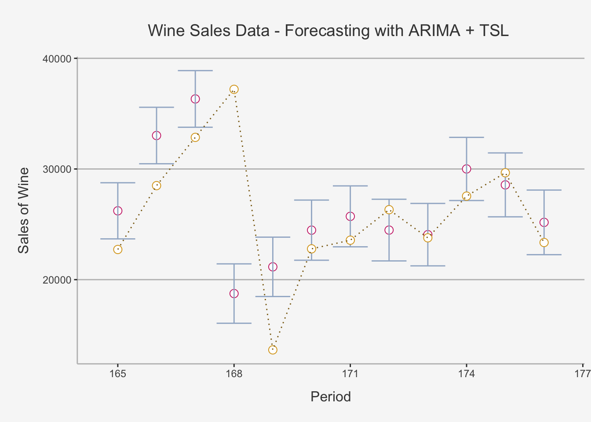
Here, we can see that the model performed quite well. Although it slightly failed to cover the 95% CI of the estimated observations in the first part, it is very precise in the second part of the estimation procedure.
Et voilà! We have officially created our first proper time series model. We showed how to train the data to best possibly account for trends and seasonality, how to combine both in order to retrieve the best model, how to capture both AIC and RMSE values to best possibly depict the model and how to check whether the model allows us to assume that we can conduct statistically valid tests.
9.4.5 Time-Series Models and Predictor Variables
There are two main differences for forecasting time-series: Explanatory Models and Time-Series Models.
Explanatory Models use predominantly different, explanatory variables to predict a dependent variable or relationship. For instance, if we want to forecast the daily flight schedule of the airline SWISS during the fall holidays in Switzerland, we may want to forecast a model with the following predictors:
\[ SwissPass_{t} = f(\text{Weather in Switzerland}_t, \text{Economic Growth}_t, \text{Income Growth}_t, \text{Day}_t, \text{Weekend-Dummy}_t, \text{COVID strength}_t, \text{error}_t) \]
We understand that the relationship can never be exactly replicated, which is why we need to include an error term at each observation. But we call this an explanatory model because we define causes that may explain the variation in passenger transports of SWISS.
Time-Series Models use predominantly the same explanatory variable in a lagged format to predict the variable or the relationship.
\[ SwissPass_{t+1} = f(SwissPass_{t}, SwissPass_{t-1}, SwissPass_{t-2}, \text{error}_t) \]
Here, prediction of the future is based on past values of a variable, but not on external variables that may affect the system.
Lastly, we can also combine prediction and time-series models to obtain so-called mixed models.
\[ SwissPass_{t+1} = f(SwissPass_{t}, (SwissPass_{t-1})^2, \text{Economic Growth}_t, \text{Income Growth}_t, \text{Day}_t, \text{Weekend-Dummy}_t, \text{COVID strength}_t, \text{error}_t) \]
These models are also known as Dynamic Regression Models or Panel-Data Models.
Although the use of the distinct models is not deterministic, it greatly depends on data availability, computational power as well as theoretical understanding of the problem at hand. Thereby, the model selection process is situation-specific, as we will see later on.
9.5 Autoregressive and Moving Average Processes
In the previous two chapters, we came to understand how we can remove trends and seasonality in the variation of time series data. In essence, we obtained a stationary residual with short-term autocorrelation. In both the Regression and Moving Average Smoothing section, we described ways to decompose the time series such that we can discriminate the variation into seaonal and trend as well as residual variation. Especially, in the Decomposition methodology section, we elaborated on why this stationarity principle is important for the furhter usage of the time series. Having accounted for trends and seasonal patterns, we essentially obtain (covariance) stationary time series data. In this case, it is assumed that the stochastic process to be modeled is covariance stationary and ergodic. Then, the main feature of the process to be modeled is the time dependence between the random variables. In this section, we illustrate some simple processes and models for covariance stationary and ergodic time series that exhibit particular types of linear time dependence captured by autocorrelations. Especially, we describe the two main classes of time series processes for this type of data, which are called Autoregressive (AR) as well as Moving Average (MA) Processes.
9.5.1 MA Processes
The definition of MA processes is the following. Let \(Z_t\) be a purely random process with mean 0 and variance \(\sigma^2\). Then, a moving average process of order q, denoted as MA(q), is given by:
\[ X_t = \lambda_0Z_t + \lambda_1Z_{t-1} + \dots + \lambda_qZ_{t-q} \]
Usually, the \(\lambda_0\) is set to 1.
We can re-write this model using Backshift Operation, \(BZ_t = Z_{t-1}\), and attain:
\[ \begin{align} X_t &= Z_t + \lambda_1Z_{t-1} + \dots + \lambda_qZ_{t-q} \\ &= (1 + \lambda_1B + \dots + \lambda_qB^q)Z_t \\ &= \theta(B)Z_t \end{align} \]
Whereas \(\theta(B) = 1 + \lambda_1B + \dots + \lambda_qB^q\) is called the characteristic polynomial.
We then obtain correlation between \(X_t\) and \(X_{t-1}\) due to the fact that both values depend on the elements of the purely random process \(Z_{t-1}, \dots, Z_{t-q}\).
9.5.1.1 Mean and Variance Moments
We can write the MA process as:
\[ X_t = \sum_{j=0}^q\lambda_jZ_{t-j} \]
Based on this, we obtain as the first two moments of the MA process.
\[ \begin{align} E[X_t] &= E[\sum_{j=0}^q\lambda_jZ_{t-j}] \\ &= \sum_{j=0}^q\lambda_jE[Z_{t-j}] \\ &= 0 \end{align} \]
Consequently, each MA(q) process has mean 0.
\[ \begin{align} Var[X_t] &= Var[\sum_{j=0}^q\lambda_jZ_{t-j}] \\ &= \sum_{j=1}^q\lambda_j^2Var[Z_{t-j}] \\ &= \sigma_z^2\sum_{j=0}^q\lambda_j^2\\ &= \sigma_z^2(1+\sum_{j=1}^q\lambda_j^2) \end{align} \]
Further, there are no covariance terms because we assume the time series to be a purely random process. Consequently, we get that:
\[ Cov(Z_t, Z_{t-k}) = 0 \]
for all k.
9.5.1.2 Autocorrelation functions
The autocovariance function is calculated as:
\[ \begin{align} Cov(X_t, X_{t+\tau}) &= E[X_tX_{t+\tau}] - E[X_t]E[X_{t+\tau}]\\ &= E[X_tX_{t+\tau}] && \text{remember the expected value is 0 so the latter term is 0}\\ &= E[\sum_{j=0}^q\lambda_jZ_{t-j} \times \sum_{k=0}^q\lambda_kZ_{t-k+\tau}] \\ &= \sum_{j=0}^q\sum_{k=0}^q\lambda_j\lambda_kE[Z_{t-j}Z_{t-k+\tau}] \end{align} \]
Let’s consider the temporal correlation a little more in depth. We can see that only the \(Z_t\) included in both \(X_t\) and \(X_{t+\tau}\) contribute to the temporal covariance function. Consequently, only these terms will influence the correlation and, as such, only the correlation will diminish throughout time.
Let’s see this:
- When \(\tau = 0\), then \(Z_t, \dots, Z_{t-q}\) are both in \(X_t\) and \(X_t\)
- When \(\tau = 1\), then \(Z_t, \dots, Z_{t-q+1}\) are both in \(X_t\) and \(X_{t+1}\)
- When \(\tau = q-1\), then \(Z_t, Z_{t-1}\) are both in \(X_t\) and \(X_{t+q-1}\)
- When \(\tau = q\), then \(Z_{t}\) is both in \(X_t\) and \(X_{t+q}\)
- When \(\tau = q+1\), then there are no elements in common
As such, the temporal diminishing factor induces the following autocovariance function
\[ \gamma_\tau = Cov(X_t, X_{t+\tau}) = \begin{cases} \sigma_z^2\sum_{j=0}^q\lambda_j\lambda_{j+\tau} && \text{if }\tau = 0,1,\dots,q \\ 0 && \tau > q \end{cases} \]
Therein, the autocorrelation function is given as:
\[ \rho_\tau = \begin{cases} 1 && \text{if } \tau = 0 \\ \frac{\sum_{j=0}^q\lambda_j\lambda_{j+\tau}}{\sum_{j=0}^q\lambda_j^2} && \text{if }\tau = 0,1,\dots,q \\ 0 && \tau > q \end{cases} \]
As we can see, the autocorrelation function does not depend on t. Therefore, we have that the first two moments are finite and we have a time invariant autocorrelation, implying that MA(q) is weakly stationary.
Further, the autocorrelation function of an MA(q) process is positive at lags 1, …, q. This gives us a method for detecting whether an MA(q) process is an appropriate model for a given data set, namely if we have only trend variation.
9.5.1.3 Examples
Let’s consider two specific MA processes. The first is an MA(1) and the second an MA(2) process. Let’s first define both processes.
The MA(1) process is given as:
\[ X_t = Z_t + \lambda_1Z_{t-1} \]
Then, its variance is given by:
\[ Var(X_t) = Var(Z_t + Z_{t-1}) = \sigma_z^2(1+\lambda_1^2) \]
And the 1-lag autocovariance function is defined as:
\[ \begin{align} Cov(X_t, X_{t+1}) &= Cov(Z_t + \lambda_1Z_{t-1}, Z_{t+1} + \lambda_2Z_t) \\ &= Cov(Z_t, Z_{t+1}) +\underbrace{ Cov(Z_t, \lambda_2Z_t)}_{\text{the only term which is overlapping in an MA(1) model}} + Cov(Z_{t+1}\lambda_1Z_{t-1}) + Cov(\lambda_1Z_{t-1}, \lambda_2Z_t) \\ &= Cov(Z_t, Z_{t+1}) + \lambda_2Cov(Z_t, Z_t) + \lambda_1(Z_{t+1},Z_{t-1}) + \lambda_1\lambda_2Cov(Z_{t-1}, Z_{t}) \\ &= \lambda_2\sigma_z^2 && \text{b/c the covariance is zero!} \end{align} \]
While the 2-lag autocovariance function is defined as:
\[ \begin{align} Cov(X_t, X_{t+2}) &= Cov(Z_t + \lambda_2Z_{t-1}, Z_{t+2} + \lambda_3Z_{t+1}) \\ &= Cov(Z_t, Z_{t+2}) + Cov(Z_t, \lambda_2Z_{t+1}) + Cov(Z_{t+2}\lambda_1Z_{t-1}) + Cov(\lambda_1Z_{t-1}, \lambda_3Z_{t+1}) \\ &= Cov(Z_t, Z_{t+2}) + \lambda_2Cov(Z_t, Z_{t+1}) + \lambda_1(Z_{t+2},Z_{t-1}) + \lambda_1\lambda_3Cov(Z_{t-1}, Z_{t+1}) \\ &= 0 \end{align} \]
Which can be generalised to \(\tau > 2\). This is intuitive as we said that only the \(Z_t\) included in both \(X_t\) and \(X_{t+\tau}\) contribute to the temporal covariance function. This is made clear by the fact that the temporal covariance function is defined as the correlation between the terms. If the terms only affect one period, then the movements of two periods apart will, by logic, not be affected by this type of variation.
Let’s just consider the MA(2) process for completeness as:
\[ X_t = Z_t + 0.5Z_{t-1} + 0.3Z_{t-2} \]
In this case, the variance is:
\[ Var(X_t) = Var(Z_t + 0.5Z_{t-1} + 0.3Z_{t-2}) = \sigma_z^2(1+\lambda_1^2 + \lambda_2^2) = 1.34\sigma_z^2 \]
And the 1-lag autocovariance function is given by:
\[ \begin{align} Cov(X_t, X_{t+1}) &= Cov(Z_t + 0.5Z_{t-1} + 0.3Z_{t-2}, Z_{t+1} + 0.5Z_{t} + 0.3Z_{t-1}) \\ &= Cov(Z_t, Z_{t+1}) + Cov(Z_t, 0.5Z_{t}) + Cov(Z_t, 0.3Z_{t-1}) + Cov(0.5Z_{t-1}, Z_{t+1}) + Cov(0.5Z_{t-1}, 0.5Z_{t}) + Cov(0.5Z_{t-1}, 0.3Z_{t-1}) + Cov(0.3Z_{t-2}, Z_{t+1}) + Cov( 0.3Z_{t-2}, 0.5Z_{t}) + Cov(0.3Z_{t-2}, 0.3Z_{t-1}) \\ &= 0.5Cov(Z_t, Z_t) + 0.5*0.3Cov(Z_{t-1}, Z_{t-1}) \\ &= 0.5\sigma_z^2 + 0.15\sigma_{z}^2 \\ &= 0.65\sigma_z^2 \end{align} \]
With the same logic, we obtain the 2-lag autocovariance function, by:
\[ \begin{align} Cov(X_t, X_{t+1}) &= Cov(Z_t + 0.5Z_{t-1} + 0.3Z_{t-2}, Z_{t+2} + 0.5Z_{t+1} + 0.3Z_{t}) \\ &= 0.3Cov(Z_{t}, Z_{t})\\ &= 0.3\sigma_z^2 \end{align} \]
In this case, the autocovariance funciton is defined as:
\[ \gamma_\tau = \begin{cases} 1.34\sigma_z^2 && \text{if } \tau = 0 \\ 0.65\sigma_z^2 && \text{if } \tau = 1 \\ 0.3\sigma_z^2 && \text{if } \tau = 2 \\ 0 && \text{if } \tau > 0 \\ \end{cases} \]
and its respective autocorrelation function is given by:
\[ \rho_\tau = \begin{cases} 1 && \text{if } \tau = 0 \\ 0.655 && \text{if } \tau = 1 \\ 0.243 && \text{if } \tau = 2 \\ 0 && \text{if } \tau > 0 \\ \end{cases} \]
As such, we see that moving average processes have a diminishing autocovariance factor, implying that the serial codependence of the observations declines with increasing time steps. This is due to the fact that fewer of the covariance terms overlap for increasing time horizons, unless we specifically imply that the model span increases. Let’s now simulate the data at hand.
# Simulated MA(1) and MA(6) data
n <- 100
sd <- 10
data1 <- arima.sim(model = list(ma = 0.5), n = n, sd = sd)
data2 <- arima.sim(model = list(ma = c(0.5, 0.3, 0.2, 0.1, 0.07, 0.03)), n = n, sd = sd)
df_1 <- as.data.frame(cbind(date, as.numeric(data1)))## Warning in base::cbind(...): number of rows of result is not a multiple of vector length (arg 2)df_1 <- df_1 %>% mutate(V2 = as.numeric(V2))
colnames(df_1) <- c("Date", "Value")
df_2 <- as.data.frame(cbind(date, as.numeric(data2)))## Warning in base::cbind(...): number of rows of result is not a multiple of vector length (arg 2)df_2 <- df_2 %>% mutate(V2 = as.numeric(V2))
colnames(df_2) <- c("Date", "Value")
# Create time series objects
df_1_ts <- xts(df_1[,-1], order.by = as.Date(df_1[,1]))
colnames(df_1_ts)<- "Value"
df_2_ts <- xts(df_2[,-1], order.by = as.Date(df_2[,1]))
colnames(df_2_ts)<- "Value"
# create the acf plots
df_1_acf <- df_1_ts %>% acf(plot = F)
df_2_acf <- df_2_ts %>% acf(plot = F)
df_1_pacf <- with(df_1_acf, data.frame(lag, acf))
df_2_pacf <- with(df_2_acf, data.frame(lag, acf))
p <- tidy(df_1_ts[,1]) %>% ggplot(aes(x=index,y= value, color=series)) + geom_line() +
ylab("Price") + xlab("Time") +
labs(color='MA(1)') +
scale_colour_manual(values = c( "violetred4", "lightsteelblue3","dodgerblue4", "darkorange2", "springgreen4", "goldenrod", "khaki3")) +
theme(plot.title= element_text(size=14, color="grey26",
hjust=0.3,lineheight=2.4, margin=margin(15,0,15,45)),
panel.background = element_rect(fill="#f7f7f7"),
panel.grid.major.y = element_line(size = 0.5, linetype = "solid", color = "grey"),
panel.grid.minor = element_blank(),
panel.grid.major.x = element_blank(),
plot.background = element_rect(fill="#f7f7f7", color = "#f7f7f7"),
axis.title.y = element_text(color="grey26", size=12, margin=margin(0,10,0,10)),
axis.title.x = element_text(color="grey26", size=12, margin=margin(10,0,10,0)),
axis.line = element_line(color = "grey"))
q <- ggplot(data = df_1_pacf, mapping = aes(x = lag, y = acf)) +
geom_hline(aes(yintercept = 0)) +
geom_segment(mapping = aes(xend = lag, yend = 0)) +
geom_hline(aes(yintercept = 1.96/sqrt(length(stocks_SMI_ts_ret[,1]))), linetype = 2, color = 'deepskyblue3') +
geom_hline(aes(yintercept = -1.96/sqrt(length(stocks_SMI_ts_ret[,1]))), linetype = 2, color = 'deepskyblue3') +
scale_color_manual(values=c( "khaki3", "lightsteelblue3", "dodgerblue4", "tomato3", "violetred4", "darkorange2")) +
ylab("ACF") + xlab("Lags") +
labs(color='Factor Portfolios') +
scale_colour_manual(values = c("lightsteelblue3","dodgerblue4", "darkorange2", "springgreen4", "violetred4", "goldenrod", "khaki3")) +
theme(plot.title= element_text(size=14, color="grey26",
hjust=0.5,lineheight=2.4, margin=margin(15,0,15,0)),
panel.background = element_rect(fill="#f7f7f7"),
panel.grid.major.y = element_line(size = 0.5, linetype = "solid", color = "grey"),
panel.grid.minor = element_blank(),
panel.grid.major.x = element_blank(),
plot.background = element_rect(fill="#f7f7f7", color = "#f7f7f7"),
axis.title.y = element_text(color="grey26", size=12, margin=margin(0,10,0,10)),
axis.title.x = element_text(color="grey26", size=12, margin=margin(10,0,10,0)),
axis.line = element_line(color = "grey")) ## Scale for 'colour' is already present. Adding another scale for 'colour', which will replace the existing scale.r <- tidy(df_2_ts[,1]) %>% ggplot(aes(x=index,y= value, color=series)) + geom_line() +
ylab("Price") + xlab("Time") +
labs(color='MA(6)') +
scale_colour_manual(values = c( "violetred4", "lightsteelblue3","dodgerblue4", "darkorange2", "springgreen4", "goldenrod", "khaki3")) +
theme(plot.title= element_text(size=14, color="grey26",
hjust=0.3,lineheight=2.4, margin=margin(15,0,15,45)),
panel.background = element_rect(fill="#f7f7f7"),
panel.grid.major.y = element_line(size = 0.5, linetype = "solid", color = "grey"),
panel.grid.minor = element_blank(),
panel.grid.major.x = element_blank(),
plot.background = element_rect(fill="#f7f7f7", color = "#f7f7f7"),
axis.title.y = element_text(color="grey26", size=12, margin=margin(0,10,0,10)),
axis.title.x = element_text(color="grey26", size=12, margin=margin(10,0,10,0)),
axis.line = element_line(color = "grey"))
s <- ggplot(data = df_2_pacf, mapping = aes(x = lag, y = acf)) +
geom_hline(aes(yintercept = 0)) +
geom_segment(mapping = aes(xend = lag, yend = 0)) +
geom_hline(aes(yintercept = 1.96/sqrt(length(stocks_SMI_ts_ret[,1]))), linetype = 2, color = 'deepskyblue3') +
geom_hline(aes(yintercept = -1.96/sqrt(length(stocks_SMI_ts_ret[,1]))), linetype = 2, color = 'deepskyblue3') +
scale_color_manual(values=c( "khaki3", "lightsteelblue3", "dodgerblue4", "tomato3", "violetred4", "darkorange2")) +
ylab("ACF") + xlab("Lags") +
labs(color='Factor Portfolios') +
scale_colour_manual(values = c("lightsteelblue3","dodgerblue4", "darkorange2", "springgreen4", "violetred4", "goldenrod", "khaki3")) +
theme(plot.title= element_text(size=14, color="grey26",
hjust=0.5,lineheight=2.4, margin=margin(15,0,15,0)),
panel.background = element_rect(fill="#f7f7f7"),
panel.grid.major.y = element_line(size = 0.5, linetype = "solid", color = "grey"),
panel.grid.minor = element_blank(),
panel.grid.major.x = element_blank(),
plot.background = element_rect(fill="#f7f7f7", color = "#f7f7f7"),
axis.title.y = element_text(color="grey26", size=12, margin=margin(0,10,0,10)),
axis.title.x = element_text(color="grey26", size=12, margin=margin(10,0,10,0)),
axis.line = element_line(color = "grey")) ## Scale for 'colour' is already present. Adding another scale for 'colour', which will replace the existing scale.p + r + q + s + plot_layout(ncol = 2, heights = c(5, 5))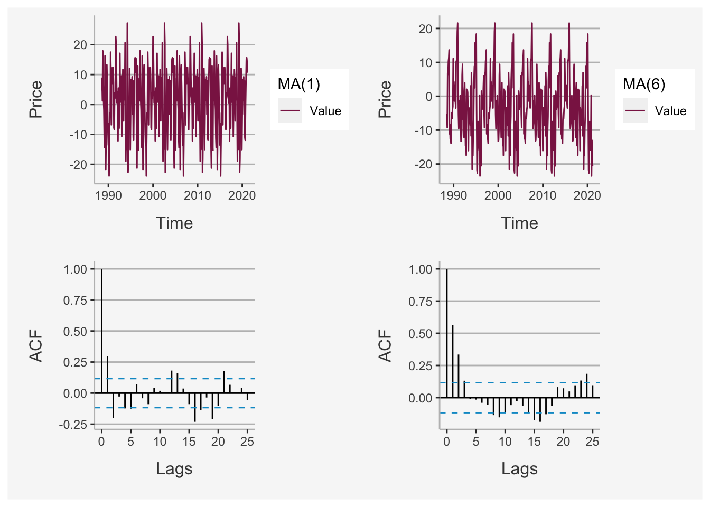
As we can see, we can easily simulate the MA(q) process. We did so for an MA(1) as well as an MA(6) process. We cans see that the autocorrelation function is far more extensive for the MA(6) process because of the increased temporal overlap of its factors. Consequently, with an increasing q we can model increasingly complex time series structures.
9.5.1.4 Model identification of MA processes
Given a stationary, trend and seasonality removed, time series, we may now be inclined to understand how we can define whether an MA process is valid to model the underlying structure. In essence, we need to understand:
- Whether an MA process is appropriate
- Which order the MA process (q) should have
We can answer both these questions using the autocorrelation function (correlogram). Recall that for an MA(q) process the ACF is given by
\[ \rho_\tau = \begin{cases} 1 && \text{if } \tau = 0 \\ \frac{\sum_{j=0}^q\lambda_j\lambda_{j+\tau}}{\sum_{j=0}^q\lambda_j^2} && \text{if }\tau = 0,1,\dots,q \\ 0 && \tau > q \end{cases} \]
It can be shown that:
\[ \rho_\tau \sim N(0, \frac{1}{n}) \]
resulting in approximately 95% CI for \(\rho_\tau \pm 1.96/\sqrt{n}\).
Consequently, it is straightforward to identify whether an MA(q) process is appropriate by plotting the sample autocorrelation function (correlogram). If an MA(q) process is appropriate the correlogram will be significantly different from zero at lags \(\tau = 1, \dots, q\) and within the 95% CI for \(\tau > q\).
9.5.1.5 MA Parameter estimation
Now, we identified in which cases we should use MA(q) processes. Let’s now comprehend how we can estimate the parameters of the MA(q) process models.
Let’s consider again the MA(q) process:
\[ X_t = \mu + \lambda_0Z_t + \lambda_1Z_{t-1} + \dots + \lambda_qZ_{t-q} \]
where \(\mu\) is the mean of the process. Let’s consider minimising this with OLS procedures. For an MA(q) process an ordinary least squares procedure would require minimisation of would require:
\[ S(\mu, \lambda_1, \dots, \lambda_q) = \sum_{i=1}^n[x_t - \mu - \lambda_1Z_{t-1} - \dots - \lambda_qZ_{t-q}]^2 \]
which is not possible because the \(Z_t\) are random variables. Instead a modification of ordinary least squares is used, known as conditional least squares.
To comprehend how this procedure works, we will focus on an MA(1) process: \(X_t = \mu + \Z_t + \lambda_1Z_{t-1}\). The algorithm does the following:
- Select starting values for both \(\mu\) and \(\lambda_1\):
\[ \begin{align} \hat\mu = 1/n\sum_{i=1}^2x_t \\ \hat\rho_1 = \frac{\hat\lambda_1}{1+\hat\lambda_1} \end{align} \]
- Calculate the conditional residual sum of squares as:
\[ S(\hat\mu, \hat\lambda) = \sum_{i=1}^n[x_t - \hat\mu - \hat\lambda_1Z_{t-1}]^2 \]
Where \(Z_0 = 0\) and \(Z_t\) is calculated recursively.
Repeat step 2 for a range of values of \(\mu, \lambda_1\) that are close to the initial estimates in step 1. Then determine the estimates as the values that minimise S.
Using the fact that the variance of an MA(1) process is \(\sigma_z^2(1+\lambda_1^2)\), we obtain that:
\[ \hat\sigma_z^2 = \frac{\hat\sigma^2}{(1+\hat\lambda^2)} \]
Then, we again calculate the standard errors as well as the corresponding test statistics in the same manner as we did for Gaussian White Noise processes. Parameter estimation for more general MA(q) processes can be implemented in a similar way, and the conditional least squares method is used by R.
9.5.1.6 Using an MA(q) process
Since we now covered the MA(q) theroy fundamentals, let’s see how we can apply the model to actual data. Doing so, we will consider the entire approach. That is, we first attempt to remove trends and seasonality and, in a subsequent step, then use an MA(q) process to fit the residuals.
# Based on this, we now need to create the same tsibble datasets as before
air_ZH_merged_ts <- air_ZH_merged %>%
select(-c(Intervall, Status, Einheit)) %>%
mutate(Datum = as.Date(Datum)) %>%
group_by(Datum, Standort, Parameter) %>%
as_tsibble(key = c(Standort, Parameter), index = Datum) %>%
ungroup() %>%
subset((Datum >= "2004-10-26") & (Datum < "2005-06-26"))
p <- air_ZH_merged_ts %>%
filter(Standort == "Zch_Stampfenbachstrasse") %>%
pivot_wider(values_from=Wert, names_from=Parameter) %>%
select(O3) %>%
ggplot(aes(x = Datum, y = O3)) + geom_line(color = "dodgerblue4") +
ylab("µg/m3") + xlab("Time") +
ggtitle("Concentration of O3 at Zürich Stampfenbachstrasse") +
scale_colour_manual(values = c("violetred4", "lightsteelblue3","dodgerblue4", "darkorange2", "springgreen4", "goldenrod", "khaki3")) +
theme(plot.title= element_text(size=14, color="grey26",
hjust=0.5,lineheight=2.4, margin=margin(15,0,15,45)),
panel.background = element_rect(fill="#f7f7f7"),
panel.grid.major.y = element_line(size = 0.5, linetype = "solid", color = "grey"),
panel.grid.minor = element_blank(),
panel.grid.major.x = element_blank(),
plot.background = element_rect(fill="#f7f7f7", color = "#f7f7f7"),
axis.title.y = element_text(color="grey26", size=12, margin=margin(0,10,0,10)),
axis.title.x = element_text(color="grey26", size=12, margin=margin(10,0,10,0)),
axis.line = element_line(color = "grey"))
air_ZH_merged_ts_acf <- air_ZH_merged_ts %>%
filter(Standort == "Zch_Stampfenbachstrasse") %>%
select(-Standort) %>%
pivot_wider(values_from=Wert, names_from=Parameter) %>%
select(NO) %>% acf(na.action = na.pass, plot = FALSE)
air_ZH_merged_ts_acf_df <- with(air_ZH_merged_ts_acf, data.frame(lag, acf))
q <- air_ZH_merged_ts_acf_df %>%
ggplot(aes(x = lag, y = acf)) +
geom_hline(aes(yintercept = 0)) +
geom_segment(mapping = aes(xend = lag, yend = 0)) +
geom_hline(aes(yintercept = 1.96/sqrt(length(stocks_SMI_ts_ret[,1]))), linetype = 2, color = 'deepskyblue3') +
geom_hline(aes(yintercept = -1.96/sqrt(length(stocks_SMI_ts_ret[,1]))), linetype = 2, color = 'deepskyblue3') +
scale_color_manual(values=c( "khaki3", "lightsteelblue3", "dodgerblue4", "tomato3", "violetred4", "darkorange2")) +
ylab("ACF") + xlab("Lags") + ggtitle("Correlogram to show the ACF of O3 concentration") +
labs(color='Factor Portfolios') +
scale_colour_manual(values = c("lightsteelblue3","dodgerblue4", "darkorange2", "springgreen4", "violetred4", "goldenrod", "khaki3")) +
theme(plot.title= element_text(size=14, color="grey26",
hjust=0.5,lineheight=2.4, margin=margin(15,0,15,0)),
panel.background = element_rect(fill="#f7f7f7"),
panel.grid.major.y = element_line(size = 0.5, linetype = "solid", color = "grey"),
panel.grid.minor = element_blank(),
panel.grid.major.x = element_blank(),
plot.background = element_rect(fill="#f7f7f7", color = "#f7f7f7"),
axis.title.y = element_text(color="grey26", size=12, margin=margin(0,10,0,10)),
axis.title.x = element_text(color="grey26", size=12, margin=margin(10,0,10,0)),
axis.line = element_line(color = "grey")) ## Scale for 'colour' is already present. Adding another scale for 'colour', which will replace the existing scale.p + q + plot_layout(ncol = 1, heights = c(5, 5))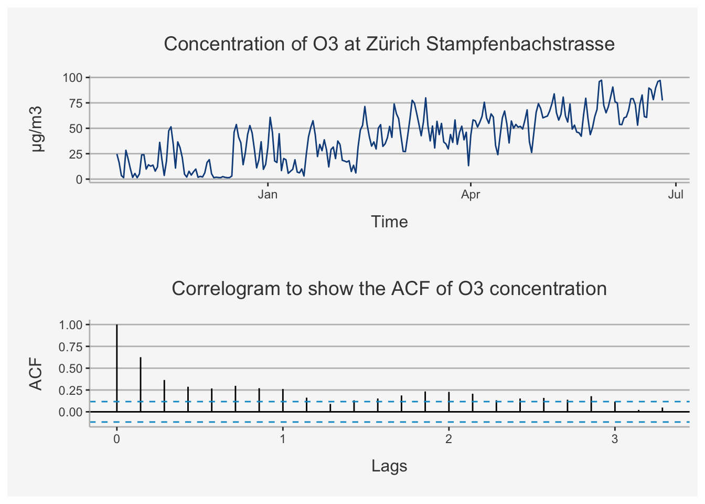
As we can see, the O3 concentration has probably a quadratic trend, which we need to remove first.
# First, we only want the O3 concentration here
O3_conc <- air_ZH_merged_ts %>%
filter(Standort == "Zch_Stampfenbachstrasse") %>%
pivot_wider(values_from=Wert, names_from=Parameter) %>%
select(O3) %>%
mutate(Datum_new = 1:243)
# Then, we regress a quadratic model and obtain the residuals
lin_mod <- lm(O3 ~ Datum_new + Datum_new^2, data = O3_conc)
res_lm <- O3_conc$O3 - lin_mod$fitted.values
# Now, we effectively eliminated the quadratic trend.
# Now, let's create the plots again
res_acf <- res_lm %>% acf(na.action = na.pass, plot = FALSE)
res_bacf <- with(res_acf, data.frame(lag, acf))
# Create the dataframe for later merging
res_lm_df <- as.data.frame(cbind(res_lm, as.Date(O3_conc$Datum)))
res_lm_df <- res_lm_df %>% mutate(Datum = as.Date(V2))
# Plot both
p <- res_lm_df %>%
ggplot(aes(x = Datum, y = res_lm)) + geom_line(color = "dodgerblue4") +
ylab("Residuals") + xlab("Time") +
ggtitle("Residuals of O3 at Zürich Stampfenbachstrasse") +
scale_colour_manual(values = c("violetred4", "lightsteelblue3","dodgerblue4", "darkorange2", "springgreen4", "goldenrod", "khaki3")) +
theme(plot.title= element_text(size=14, color="grey26",
hjust=0.5,lineheight=2.4, margin=margin(15,0,15,45)),
panel.background = element_rect(fill="#f7f7f7"),
panel.grid.major.y = element_line(size = 0.5, linetype = "solid", color = "grey"),
panel.grid.minor = element_blank(),
panel.grid.major.x = element_blank(),
plot.background = element_rect(fill="#f7f7f7", color = "#f7f7f7"),
axis.title.y = element_text(color="grey26", size=12, margin=margin(0,10,0,10)),
axis.title.x = element_text(color="grey26", size=12, margin=margin(10,0,10,0)),
axis.line = element_line(color = "grey"))
q <- res_bacf %>%
ggplot(aes(x = lag, y = acf)) +
geom_hline(aes(yintercept = 0)) +
geom_segment(mapping = aes(xend = lag, yend = 0)) +
geom_hline(aes(yintercept = 1.96/sqrt(length(stocks_SMI_ts_ret[,1]))), linetype = 2, color = 'deepskyblue3') +
geom_hline(aes(yintercept = -1.96/sqrt(length(stocks_SMI_ts_ret[,1]))), linetype = 2, color = 'deepskyblue3') +
scale_color_manual(values=c( "khaki3", "lightsteelblue3", "dodgerblue4", "tomato3", "violetred4", "darkorange2")) +
ylab("ACF") + xlab("Lags") + ggtitle("Correlogram to show the ACF of O3 concentration") +
labs(color='Factor Portfolios') +
scale_colour_manual(values = c("lightsteelblue3","dodgerblue4", "darkorange2", "springgreen4", "violetred4", "goldenrod", "khaki3")) +
theme(plot.title= element_text(size=14, color="grey26",
hjust=0.5,lineheight=2.4, margin=margin(15,0,15,0)),
panel.background = element_rect(fill="#f7f7f7"),
panel.grid.major.y = element_line(size = 0.5, linetype = "solid", color = "grey"),
panel.grid.minor = element_blank(),
panel.grid.major.x = element_blank(),
plot.background = element_rect(fill="#f7f7f7", color = "#f7f7f7"),
axis.title.y = element_text(color="grey26", size=12, margin=margin(0,10,0,10)),
axis.title.x = element_text(color="grey26", size=12, margin=margin(10,0,10,0)),
axis.line = element_line(color = "grey")) ## Scale for 'colour' is already present. Adding another scale for 'colour', which will replace the existing scale.p + q + plot_layout(ncol = 1, heights = c(5, 5))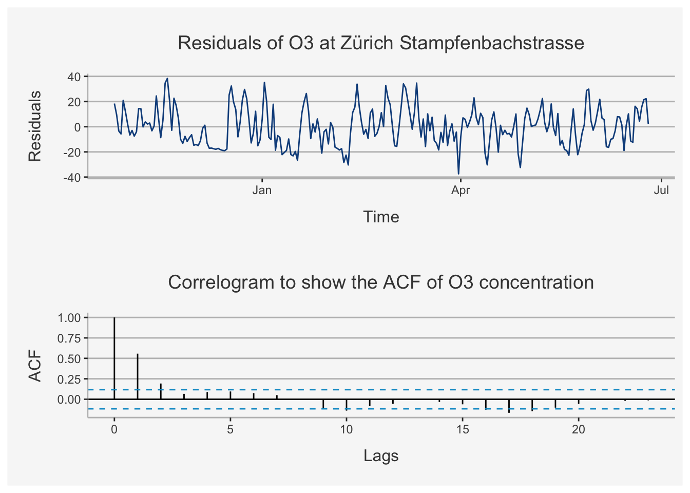
The time plot suggests the residual series is stationary, while the autocorrelation function (correlogram) suggests an MA(3) process is appropriate. Consequently, let’s use this process now on the residuals.
# Run the Arima model with MA(3)
ma_3 <- arima(res_lm, order = c(0, 0, 3))
ma_3##
## Call:
## arima(x = res_lm, order = c(0, 0, 3))
##
## Coefficients:
## ma1 ma2 ma3 intercept
## 0.6632 0.2467 0.0261 0.0352
## s.e. 0.0643 0.0748 0.0598 1.5138
##
## sigma^2 estimated as 149.3: log likelihood = -953.28, aic = 1916.56Finally, we should plot the residuals again to ensure they are normal
res_lm <-ma_3$residuals
# Now, we effectively eliminated the quadratic trend.
# Now, let's create the plots again
res_acf <- res_lm %>% acf(na.action = na.pass, plot = FALSE)
res_bacf <- with(res_acf, data.frame(lag, acf))
# Create the dataframe for later merging
res_lm_df <- as.data.frame(cbind(res_lm, as.Date(O3_conc$Datum)))
res_lm_df <- res_lm_df %>% mutate(Datum = as.Date(as.Date(O3_conc$Datum)))
# Plot both
p <- res_lm_df %>%
ggplot(aes(x = Datum, y = res_lm)) + geom_line(color = "dodgerblue4") +
ylab("Residuals") + xlab("Time") +
ggtitle("Residuals of the MA(3) process") +
scale_colour_manual(values = c("violetred4", "lightsteelblue3","dodgerblue4", "darkorange2", "springgreen4", "goldenrod", "khaki3")) +
theme(plot.title= element_text(size=14, color="grey26",
hjust=0.5,lineheight=2.4, margin=margin(15,0,15,45)),
panel.background = element_rect(fill="#f7f7f7"),
panel.grid.major.y = element_line(size = 0.5, linetype = "solid", color = "grey"),
panel.grid.minor = element_blank(),
panel.grid.major.x = element_blank(),
plot.background = element_rect(fill="#f7f7f7", color = "#f7f7f7"),
axis.title.y = element_text(color="grey26", size=12, margin=margin(0,10,0,10)),
axis.title.x = element_text(color="grey26", size=12, margin=margin(10,0,10,0)),
axis.line = element_line(color = "grey"))
q <- res_bacf %>%
ggplot(aes(x = lag, y = acf)) +
geom_hline(aes(yintercept = 0)) +
geom_segment(mapping = aes(xend = lag, yend = 0)) +
geom_hline(aes(yintercept = 1.96/sqrt(length(stocks_SMI_ts_ret[,1]))), linetype = 2, color = 'deepskyblue3') +
geom_hline(aes(yintercept = -1.96/sqrt(length(stocks_SMI_ts_ret[,1]))), linetype = 2, color = 'deepskyblue3') +
scale_color_manual(values=c( "khaki3", "lightsteelblue3", "dodgerblue4", "tomato3", "violetred4", "darkorange2")) +
ylab("ACF") + xlab("Lags") + ggtitle("Correlogram to show the ACF of O3 concentration") +
labs(color='Factor Portfolios') +
scale_colour_manual(values = c("lightsteelblue3","dodgerblue4", "darkorange2", "springgreen4", "violetred4", "goldenrod", "khaki3")) +
theme(plot.title= element_text(size=14, color="grey26",
hjust=0.5,lineheight=2.4, margin=margin(15,0,15,0)),
panel.background = element_rect(fill="#f7f7f7"),
panel.grid.major.y = element_line(size = 0.5, linetype = "solid", color = "grey"),
panel.grid.minor = element_blank(),
panel.grid.major.x = element_blank(),
plot.background = element_rect(fill="#f7f7f7", color = "#f7f7f7"),
axis.title.y = element_text(color="grey26", size=12, margin=margin(0,10,0,10)),
axis.title.x = element_text(color="grey26", size=12, margin=margin(10,0,10,0)),
axis.line = element_line(color = "grey")) ## Scale for 'colour' is already present. Adding another scale for 'colour', which will replace the existing scale.p + q + plot_layout(ncol = 1, heights = c(5, 5))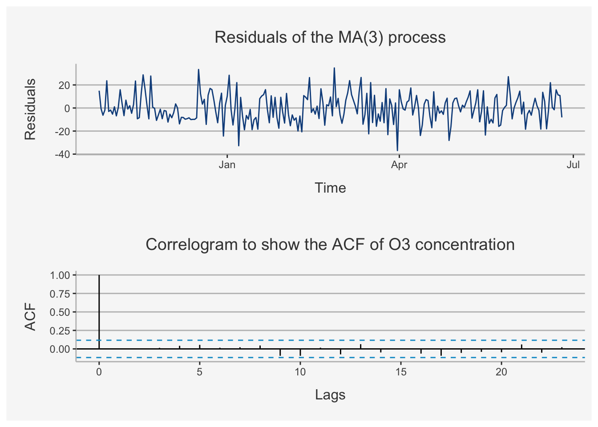
The residuals appear to be independent, so the following model should work:
\[ X_t = \beta_0 + \beta_1t +\beta_2t^2 + Z_t + \lambda_1Z_{t-1} + \lambda_2Z_{t-2}+ \lambda_3Z_{t-3} \]
9.5.2 RA Processes
Now, let’s consider the second basic time series process, called autoregressive processes.
Let \(Z_t\) be a purely random process (again in the form of residuals) with again mean 0 and variance of \(\sigma_z^2\). An autoregressive process of order p, denoted as AR(p), is given by:
\[ X_t = \alpha_1X_{t-1} + \dots + \alpha_pX_{t-p} + Z_t \]
where we assume that \(X_0 = X_{-1} = \dots = X_{1-p} = 0\).
It can be written in the following alternative form:
\[ \begin{align} X_t &= \alpha_1X_{t-1} + \dots + \alpha_pX_{t-p} + Z_t\\ X_t - \alpha_1X_{t-1} + \dots + \alpha_pX_{t-p} &= Z_t\\ (1 - \alpha_1B - \alpha_2B^2 - \dots - \alpha_pB^p)X_t &= Z_t \\ \phi(B)X_t &= Z_t \end{align} \]
where B is again the backshift operator. The form of \(\phi(B)\) is again called the characteristic polynomial.
In this model correlation is introduced between the random variables by regressing \(X_t\) on past values \(X_{t-1}, \dots, X_{t-p}\). The \(\alpha\) values are coefficients of the autoregressive process, where \(\alpha_i\) is the lag i coefficient.
Since we essentially regress X on its past values, we label the model as autoregressive. The rest of this chapter describes the properties of autoregressive processes, discusses how to choose the order p when modelling real data, and describes estimation of the coefficients.
9.5.2.1 Mean and Variance Moments
The AR(p) process can be written as an infinite sum of a purely random process. That is:
\[ X_t = \alpha_1X_{t-1} + \dots + \alpha_pX_{t-p} + Z_t = \sum_{j=0}^\infty \beta_jZ_{t - j} \]
This condition is known as invertibility. Although we won’t cover the theroetical fundaments for this idea in detail, it implies that you can change an AR(p) process into the sum of a purely random process. The mean can be calculated by using the theorem as follows.
\[ \begin{align} E[X_t] &= E[\sum_{j=0}^\infty \beta_jZ_{t-j}] \\ &= \sum_{j=0}^\infty \beta_jE[Z_{t-j}] \\ &= 0 \end{align} \]
Thus, any AR(p) process has mean 0.
As opposed to the moving average processes, the variance and autocorrelation function are calculated conditional on the process being stationary due to the computational complexity of calculating the moments by determining the \(\beta_j\). The following theorem tells us when an AR(p) process is stationary.
We again write the AR(p) process as \(\phi(B)X_t = Z_t\).
Then the process is stationary if the roots of the characteristic equation:
\[ \phi(B) = 1 - \alpha_1B - \alpha_2B^2 - \dots - \alpha_pB^p = 0 \]
have modulus greater than 1, i.e. they lie outside the unit circle. Here we consider B as the variable of the polynomial equation. Without going into proving the theorem, let’s look at the root base condition for both an AR(1) as well as an AR(2) process.
Let’s look at the AR(1) process: \(X_t = \alpha X_{t-1} + Z_t\). The characteristic polynomial is given by \(\phi(B) = 1 - \alpha B\). It has a single root, namely \(\frac{1}{\alpha}\). Consequently, the process is stationary if \(1/\alpha\) is greater than 1, or if \(|\alpha|\) is less than 1.
Consider the AR(2) process: \(X_t = 0.75X_{t-1} - 0.125X_{t-2} + Z_t\). The characteristics polynomial is \((1- 0.75B - 0.125B^2)X_t = 0\). We can find the roots of the quadratic equation using the Mittenachtformula, given by:
\[ MNF = \frac{-b \pm \sqrt{b^2 - 4ax}}{2a} \]
In our case, this would be: \(\frac{0.75 \pm \sqrt{0.75^2 + 4*0.25*1}}{2*1} = {2, 4}\). Therefore as both roots have modulus greater than one the process is stationary.
Based on this property, let’s define the variance for AR(p) processes. Assuming the process is stationary, we calculate its variance as follows.
\[ \begin{align} X_t &= \alpha_1X_{t-1} + \dots + \alpha_pX_{t-p} + Z_t \\ X_t^2 &= \alpha_1X_tX_{t-1} + \dots + \alpha_pX_tX_{t-p} + X_tZ_t \\ \\ E[X_t^2] &= E[\alpha_1X_tX_{t-1} + \dots + \alpha_pX_tX_{t-p} + X_tZ_t] \\ &= E[\alpha_1X_tX_{t-1}] + \dots + E[\alpha_pX_tX_{t-p}] + E[X_tZ_t] \\ &= E[\alpha_1X_tX_{t-1}] + \dots + E[\alpha_pX_tX_{t-p}] + E[{\alpha_1X_{t-1} + \dots + \alpha_pX_{t-p} + Z_t}Z_t] \\ &= E[\alpha_1X_tX_{t-1}] + \dots + E[\alpha_pX_tX_{t-p}] + E[{\alpha_1X_{t-1} + \dots + \alpha_pX_{t-p}}Z_t] + E[Z_t^2] \\ &= E[\alpha_1X_tX_{t-1}] + \dots + E[\alpha_pX_tX_{t-p}] + E[\alpha_1X_{t-1} + \dots + \alpha_pX_{t-p}]E[Z_t] + Var[Z_t] + E[Z_t]^2 && E[Z_t] = 0\\ &= E[\alpha_1X_tX_{t-1}] + \dots + E[\alpha_pX_tX_{t-p}] + \sigma_z^2 \end{align} \]
As \(E[X_t] = 0\), we get that:
\[ \begin{align} Var[X_t] &= E[X_t^2] - E[X_t]^2 = E[X_t^2]\\ \gamma_\tau &= Cov(X_t,X_{t-\tau}) = E[X_tX_{t-\tau}] - E[X_t]E[X_{t-\tau}] = E[X_tX_{t-\tau}] \end{align} \]
Note that the variance was reduced to the term we just saw above and the covariance term can be defined as only \(E[X_t,X_{t+\tau}\), which is one of the parts of the second part of the remaining variance function. Thus, we get:
\[ \begin{align} Var[X_t] &= \sigma_z^2 + \sum_{\tau = 1}^p \alpha_\tau E[X_t,X_{t-\tau}] \\ &= \sigma_z^2 + \sum_{\tau = 1}^p \alpha_\tau \gamma_\tau \end{align} \]
and depends on the autocovariance functions at lags 1 to p.
9.5.2.2 Autocorrelation function
The autocovariance and autocorrelation functions can be calculated in the same way as the variance. That is:
\[ \begin{align} X_t &= \alpha_1X_{t-1} + \dots + \alpha_pX_{t-p} + Z_t \\ X_tX_{t-\tau} &= \alpha_1X_{t-\tau}X_{t-1} + \dots + \alpha_pX_{t-\tau}X_{t-p} + X_{t-\tau}Z_t \\ E[X_tX_{t-\tau}] &= E[\alpha_1X_{t-\tau}X_{t-1} + \dots + \alpha_pX_{t-\tau}X_{t-p} + X_{t-\tau}Z_t] \\ &= \alpha_1E[X_{t-\tau}X_{t-1}] + \dots + \alpha_pE[X_{t-\tau}X_{t-p}] \end{align} \]
Since \(E[X_tX_{t-\tau}] = \gamma_\tau\), the autocovariance function is given by the recursive equation:
\[ \gamma_\tau = \alpha_1\gamma_{\tau - 1} + \dots + \alpha_p\gamma_{\tau - p} \]
Dividing by the variance gives the autocorrelation function as:
\[ \rho_\tau = \alpha_1\rho_{\tau - 1} + \dots + \alpha_p\rho_{\tau - p} \]
This equation is called Yule-Walker equation.
Importantly, we can re-write these equations in matrix form:
$$ \[\begin{bmatrix} 1 & \rho_1 & \dots & \rho_{p - 1} \\ \rho_1 & 1 & \dots & \rho_{p - 2} \\ \vdots & \vdots & \ddots & \vdots \\ \rho_{p - 1} & \rho_{p - 2} & \dots & 1 \end{bmatrix}\] \[\begin{bmatrix} \alpha_1 \\ \alpha_2 \\ \vdots \\ \alpha_p \end{bmatrix}\]=
\[\begin{bmatrix} \rho_1 \\ \rho_2 \\ \vdots \\ \rho_p \end{bmatrix}\]$$ The Yule-Walker equations can be used repeatedly to calculate the autocorrelation function for any AR(p) process.
For instance, consider the AR(2) process: \(X_t = \alpha_1X_{t-1} + \alpha_2X_{t-2} + Z_t\). The Y-W with \(\tau = 1\) would then give us \(\rho_1 =\alpha_+\rho_0 + \alpha_2\rho_{-1}\). As \(\rho_0 = 1\) and \(\rho_{-1} = \rho_1\), this would then provide us with:
\[ \rho_1 = \frac{\alpha_1}{1 - \alpha_2} \]
Further, using \(\tau = 2\), we get that \(\rho_2 =\alpha_1\rho_{-1} + \alpha_2\rho_0\), which would give us:
\[ \rho_2 = \alpha_2 + \alpha\rho_1 = \alpha_2 + \alpha_1\frac{\alpha_1}{1 - \alpha_2} \]
9.5.2.3 RA Model identification
Given a stationary, trend and seasonality removed, time series, we may now be inclined to understand how we can define whether an RA process is valid to model the underlying structure. In essence, we need to understand:
- Whether an RA process is appropriate
- Which order the RA process (p) should have
As opposed to the case with moving averages, we cannot use the correlaogram to depict the use of an RA(p) process model. In order to define the validity of an RA(p) process, we need to use something called partial autocorrelation function (PACF) The PACF at lag \(\tau\) is equal to the estimated lag \(\tau\) coefficient \(\hat\alpha_\tau\) obtained when fitting an AR(\(\tau\)) model to a data set. It is denoted by \(\pi\tau\) and represents the excess correlation in the time series that has not been accounted for by the \(\tau - 1\) smaller lags. To give an example:
- Fit the AR(1) model: \(X_t = \alpha_1X_{t-1} + Z_t\) to the time series, we get that \(\hat\alpha_1 = \pi_1\)
- Fit the AR(3) model: \(X_t = \alpha_1X_{t-1} + \alpha_2X_{t-2} + \alpha_3X_{t-3} + Z_t\), we get that \(\hat\alpha_3 = \pi_3\)
which is the excess correlation that has not been accounted for by \(\pi_1\) and \(\pi_2\).
In essence, we can obtain the same statistical properties of the distribution of PACF as for the ACF. That is, an AR(p) process for any lag \(\tau > p\) is given as:
\[ \pi_\tau \sim N(o, \frac{1}{n}) \]
which gives an approximate 95% CI for \(\pi_\tau\) within \(\pm 1.96/\sqrt{n}\) when the true value is \(\pi_\tau = 0\). Therefore to choose the order of an AR(p) process, plot the partial autocorrelation function and choose p as the smallest value that is significantly different from zero.
In essence, the - autocorrelation function (ACF) tells us whether an MA(q) process is appropriate - partial autocorrelation function (PACF) suggests whether an AR(p) process is appropriate.
Therefore for a given time series, both should be plotted to show which process would be a good model.
9.5.2.4 AR parameter estimation
Let’s quickly show to approaches how computers estimate the parameters in AR processes. For that, we consider the AR(p) process as:
\[ X_t - \mu = \alpha_1(X_{t-1} - \mu) + \dots + \alpha_p(X_{t-p} - \mu) + Z_t \]
The parameter estimation requires us to estimate \(\alpha_i\) and \(\sigma_z^2\)
Recall the Y-W estimation
\[ \rho_\tau = \alpha_1\rho_{\tau - 1} + \dots + \alpha_p\rho_{\tau - p} \] or:
$$ \[\begin{bmatrix} 1 & \rho_1 & \dots & \rho_{p - 1} \\ \rho_1 & 1 & \dots & \rho_{p - 2} \\ \vdots & \vdots & \ddots & \vdots \\ \rho_{p - 1} & \rho_{p - 2} & \dots & 1 \end{bmatrix}\] \[\begin{bmatrix} \alpha_1 \\ \alpha_2 \\ \vdots \\ \alpha_p \end{bmatrix}\]=
\[\begin{bmatrix} \rho_1 \\ \rho_2 \\ \vdots \\ \rho_p \end{bmatrix}\]$$
To estimate the parameters we replace the theoretical autocorrelation function by its sample estimates, \(\hat\rho_\tau\). Then, we can use the above matrix equation to estimate the \(\alpha\) as:
\[ \hat\alpha =\hat R_p^{-1} \hat\rho_p \] To retrieve the estimated variance, we simply replace the theoretical quantities by their sample estimates. This gives:
\[ \hat\sigma_z^2 = \hat\sigma^2 - \sum_{\tau = 1}^p \hat\alpha_\tau\hat\gamma_\tau \]
which is nothing else than the theoretical variance of the time series subtracted from the autocovariance estimates.
The second effect is OLS in which we minimise again the SSR.
9.5.3 Using an RA(p) process
Since we now covered the RA(p) theory fundamentals, let’s see how we can apply the model to actual data. Doing so, we will consider the entire approach. That is, we first attempt to remove trends and seasonality and, in a subsequent step, then use an RA(p) process to fit the residuals.
# Based on this, we now need to create the same tsibble datasets as before
time <- 1:200
n <- 243
sd <- 1
data.ar <- arima.sim(model = list(ar = c(0.6, 0.3)), n = n, sd = sd)
data <- data.ar + 30 + 0.05 * time## Warning in `+.default`(data.ar + 30, 0.05 * time): longer object length is not a multiple of shorter object lengthDates <- air_ZH_merged_ts %>%
filter(Standort == "Zch_Stampfenbachstrasse") %>%
pivot_wider(values_from=Wert, names_from=Parameter) %>%
select(Datum)
data_ts <- as.data.frame(cbind(Dates$Datum, data))
p <- data_ts %>%
ggplot(aes(x = as.Date(Dates$Datum), y = data)) + geom_line(color = "dodgerblue4") +
ylab("µg/m3") + xlab("Time") +
ggtitle("Concentration of CO at Zürich Stampfenbachstrasse") +
scale_colour_manual(values = c("violetred4", "lightsteelblue3","dodgerblue4", "darkorange2", "springgreen4", "goldenrod", "khaki3")) +
theme(plot.title= element_text(size=14, color="grey26",
hjust=0.5,lineheight=2.4, margin=margin(15,0,15,45)),
panel.background = element_rect(fill="#f7f7f7"),
panel.grid.major.y = element_line(size = 0.5, linetype = "solid", color = "grey"),
panel.grid.minor = element_blank(),
panel.grid.major.x = element_blank(),
plot.background = element_rect(fill="#f7f7f7", color = "#f7f7f7"),
axis.title.y = element_text(color="grey26", size=12, margin=margin(0,10,0,10)),
axis.title.x = element_text(color="grey26", size=12, margin=margin(10,0,10,0)),
axis.line = element_line(color = "grey"))
data_ts_acf <- data_ts %>% select(data) %>% acf(na.action = na.pass, plot = FALSE)
data_ts_acf_df <- with(data_ts_acf, data.frame(lag, acf))
q <- data_ts_acf_df %>%
ggplot(aes(x = lag, y = acf)) +
geom_hline(aes(yintercept = 0)) +
geom_segment(mapping = aes(xend = lag, yend = 0)) +
geom_hline(aes(yintercept = 1.96/sqrt(length(stocks_SMI_ts_ret[,1]))), linetype = 2, color = 'deepskyblue3') +
geom_hline(aes(yintercept = -1.96/sqrt(length(stocks_SMI_ts_ret[,1]))), linetype = 2, color = 'deepskyblue3') +
scale_color_manual(values=c( "khaki3", "lightsteelblue3", "dodgerblue4", "tomato3", "violetred4", "darkorange2")) +
ylab("ACF") + xlab("Lags") + ggtitle("Correlogram to show the ACF of CO concentration") +
labs(color='Factor Portfolios') +
scale_colour_manual(values = c("lightsteelblue3","dodgerblue4", "darkorange2", "springgreen4", "violetred4", "goldenrod", "khaki3")) +
theme(plot.title= element_text(size=14, color="grey26",
hjust=0.5,lineheight=2.4, margin=margin(15,0,15,0)),
panel.background = element_rect(fill="#f7f7f7"),
panel.grid.major.y = element_line(size = 0.5, linetype = "solid", color = "grey"),
panel.grid.minor = element_blank(),
panel.grid.major.x = element_blank(),
plot.background = element_rect(fill="#f7f7f7", color = "#f7f7f7"),
axis.title.y = element_text(color="grey26", size=12, margin=margin(0,10,0,10)),
axis.title.x = element_text(color="grey26", size=12, margin=margin(10,0,10,0)),
axis.line = element_line(color = "grey")) ## Scale for 'colour' is already present. Adding another scale for 'colour', which will replace the existing scale.p + q + plot_layout(ncol = 1, heights = c(5, 5))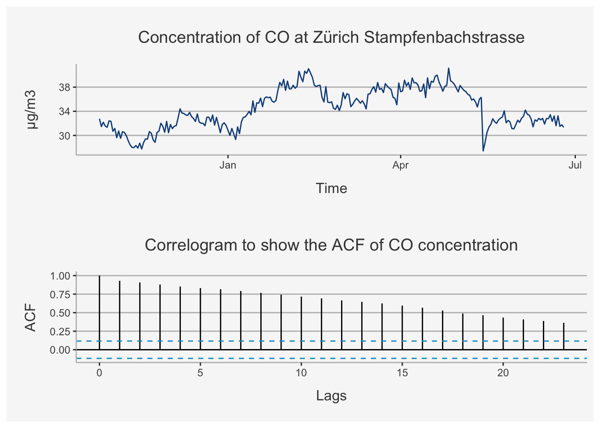
As we can see, the CO concentration has probably a time trend, which we need to remove first.
# First, we only want the O3 concentration here
O3_conc <- data_ts %>%
mutate(Datum_new = 1:243)
# Then, we regress a quadratic model and obtain the residuals
lin_mod <- lm(data ~ Datum_new, data = O3_conc)
res_lm <- O3_conc$data - lin_mod$fitted.values
# Now, we effectively eliminated the quadratic trend.
# Now, let's create the plots again
res_acf <- res_lm %>% acf(na.action = na.pass, plot = FALSE)
res_bacf <- with(res_acf, data.frame(lag, acf))
# Create the dataframe for later merging
res_lm_df <- as.data.frame(cbind(res_lm, as.Date(O3_conc$Datum)))
res_lm_df <- res_lm_df %>% mutate(Datum = as.Date(V2))
# Plot the time series
p <- res_lm_df %>%
ggplot(aes(x = Datum, y = res_lm)) + geom_line(color = "dodgerblue4") +
ylab("Residuals") + xlab("Time") +
ggtitle("Residuals of CO at Zürich Stampfenbachstrasse") +
scale_colour_manual(values = c("violetred4", "lightsteelblue3","dodgerblue4", "darkorange2", "springgreen4", "goldenrod", "khaki3")) +
theme(plot.title= element_text(size=14, color="grey26",
hjust=0.5,lineheight=2.4, margin=margin(15,0,15,45)),
panel.background = element_rect(fill="#f7f7f7"),
panel.grid.major.y = element_line(size = 0.5, linetype = "solid", color = "grey"),
panel.grid.minor = element_blank(),
panel.grid.major.x = element_blank(),
plot.background = element_rect(fill="#f7f7f7", color = "#f7f7f7"),
axis.title.y = element_text(color="grey26", size=12, margin=margin(0,10,0,10)),
axis.title.x = element_text(color="grey26", size=12, margin=margin(10,0,10,0)),
axis.line = element_line(color = "grey"))
# Plot the ACF
q <- res_bacf %>%
ggplot(aes(x = lag, y = acf)) +
geom_hline(aes(yintercept = 0)) +
geom_segment(mapping = aes(xend = lag, yend = 0)) +
geom_hline(aes(yintercept = 1.96/sqrt(dim(res_lm_df)[1])), linetype = 2, color = 'deepskyblue3') +
geom_hline(aes(yintercept = -1.96/sqrt(dim(res_lm_df)[1])), linetype = 2, color = 'deepskyblue3') +
scale_color_manual(values=c( "khaki3", "lightsteelblue3", "dodgerblue4", "tomato3", "violetred4", "darkorange2")) +
ylab("ACF") + xlab("Lags") + ggtitle("Correlogram to show the ACF of CO concentration") +
labs(color='Factor Portfolios') +
scale_colour_manual(values = c("lightsteelblue3","dodgerblue4", "darkorange2", "springgreen4", "violetred4", "goldenrod", "khaki3")) +
theme(plot.title= element_text(size=14, color="grey26",
hjust=0.5,lineheight=2.4, margin=margin(15,0,15,0)),
panel.background = element_rect(fill="#f7f7f7"),
panel.grid.major.y = element_line(size = 0.5, linetype = "solid", color = "grey"),
panel.grid.minor = element_blank(),
panel.grid.major.x = element_blank(),
plot.background = element_rect(fill="#f7f7f7", color = "#f7f7f7"),
axis.title.y = element_text(color="grey26", size=12, margin=margin(0,10,0,10)),
axis.title.x = element_text(color="grey26", size=12, margin=margin(10,0,10,0)),
axis.line = element_line(color = "grey")) ## Scale for 'colour' is already present. Adding another scale for 'colour', which will replace the existing scale.# Get the PACF and plot it as well
pacf <- pacf(res_lm)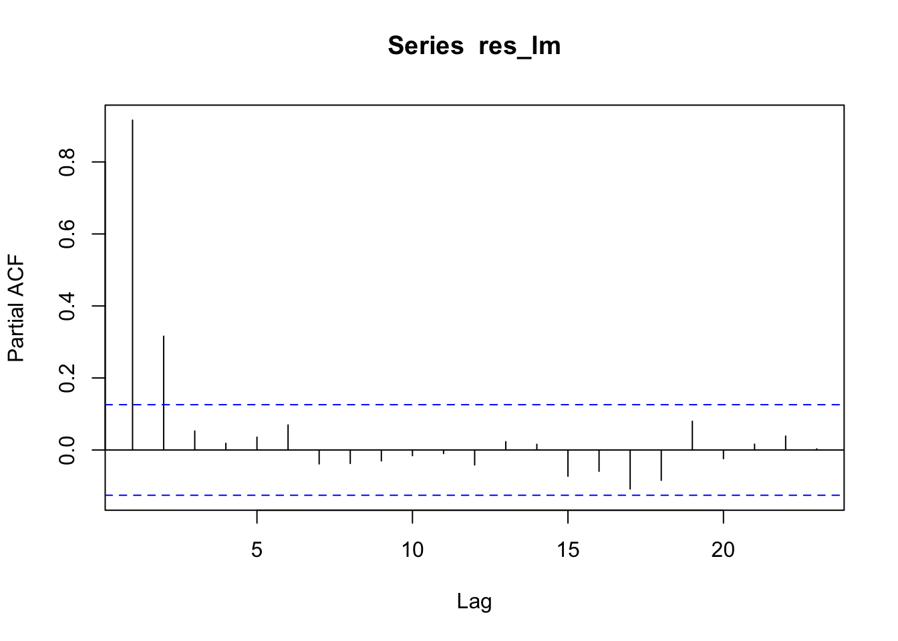
pacf_values <- c(pacf$acf)
res_bpacf <- as.data.frame(cbind(seq(0,23,1), pacf_values))## Warning in base::cbind(...): number of rows of result is not a multiple of vector length (arg 2)colnames(res_bpacf) <- c("lag", "PACF")
r <- res_bpacf %>%
ggplot(aes(x = lag, y = PACF)) +
geom_hline(aes(yintercept = 0)) +
geom_segment(mapping = aes(xend = lag, yend = 0)) +
geom_hline(aes(yintercept = 1.96/sqrt((dim(res_lm_df)[1]))), linetype = 2, color = 'deepskyblue3') +
geom_hline(aes(yintercept = -1.96/sqrt((dim(res_lm_df)[1]))), linetype = 2, color = 'deepskyblue3') +
scale_color_manual(values=c( "khaki3", "lightsteelblue3", "dodgerblue4", "tomato3", "violetred4", "darkorange2")) +
ylab("PACF") + xlab("Lags") + ggtitle("Correlogram to show the PACF of CO concentration") +
labs(color='Factor Portfolios') +
scale_colour_manual(values = c("lightsteelblue3","dodgerblue4", "darkorange2", "springgreen4", "violetred4", "goldenrod", "khaki3")) +
theme(plot.title= element_text(size=14, color="grey26",
hjust=0.5,lineheight=2.4, margin=margin(15,0,15,0)),
panel.background = element_rect(fill="#f7f7f7"),
panel.grid.major.y = element_line(size = 0.5, linetype = "solid", color = "grey"),
panel.grid.minor = element_blank(),
panel.grid.major.x = element_blank(),
plot.background = element_rect(fill="#f7f7f7", color = "#f7f7f7"),
axis.title.y = element_text(color="grey26", size=12, margin=margin(0,10,0,10)),
axis.title.x = element_text(color="grey26", size=12, margin=margin(10,0,10,0)),
axis.line = element_line(color = "grey")) ## Scale for 'colour' is already present. Adding another scale for 'colour', which will replace the existing scale.p 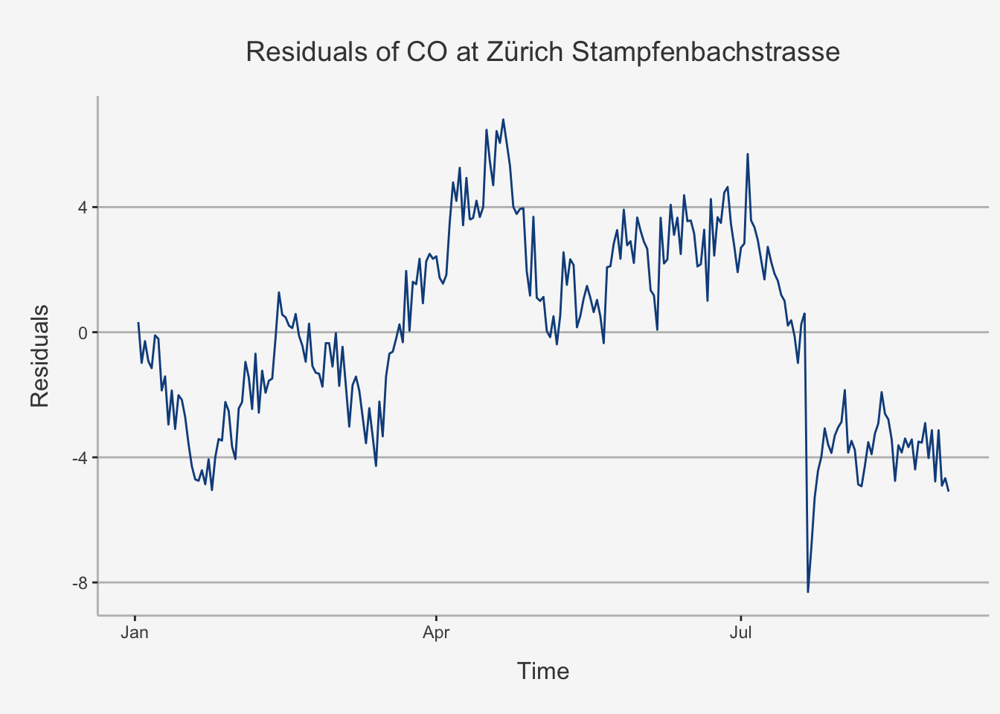
q + r + plot_layout(ncol = 1, heights = c(5, 5))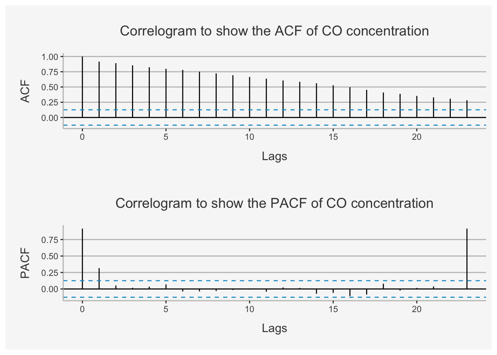
The time plot suggests the residual series is stationary, while the partial autocorrelation function (correlogram) suggests an AR(2) process is appropriate. Note that the ACF is not really helping us here because it shows no sign when the last lag is still significantly different from zero.
# Run the Arima model with RA(3)
ar_2 <- arima(res_lm, order = c(2, 0, 0))
ar_2##
## Call:
## arima(x = res_lm, order = c(2, 0, 0))
##
## Coefficients:
## ar1 ar2 intercept
## 0.6116 0.3382 -0.4395
## s.e. 0.0602 0.0605 1.3043
##
## sigma^2 estimated as 1.237: log likelihood = -371.78, aic = 751.55Finally, we should plot the residuals again to ensure they are normal
res_lm <-ar_2$residuals
# Now, we effectively eliminated the quadratic trend.
# Now, let's create the plots again
res_acf <- res_lm %>% acf(na.action = na.pass, plot = FALSE)
res_bacf <- with(res_acf, data.frame(lag, acf))
# Create the dataframe for later merging
res_lm_df <- as.data.frame(cbind(res_lm, as.Date(O3_conc$Datum)))
res_lm_df <- res_lm_df %>% mutate(Datum = as.Date(as.Date(O3_conc$Datum)))
# Plot both
p <- res_lm_df %>%
ggplot(aes(x = Datum, y = res_lm)) + geom_line(color = "dodgerblue4") +
ylab("Residuals") + xlab("Time") +
ggtitle("Residuals of the AR(3) process") +
scale_colour_manual(values = c("violetred4", "lightsteelblue3","dodgerblue4", "darkorange2", "springgreen4", "goldenrod", "khaki3")) +
theme(plot.title= element_text(size=14, color="grey26",
hjust=0.5,lineheight=2.4, margin=margin(15,0,15,45)),
panel.background = element_rect(fill="#f7f7f7"),
panel.grid.major.y = element_line(size = 0.5, linetype = "solid", color = "grey"),
panel.grid.minor = element_blank(),
panel.grid.major.x = element_blank(),
plot.background = element_rect(fill="#f7f7f7", color = "#f7f7f7"),
axis.title.y = element_text(color="grey26", size=12, margin=margin(0,10,0,10)),
axis.title.x = element_text(color="grey26", size=12, margin=margin(10,0,10,0)),
axis.line = element_line(color = "grey"))
p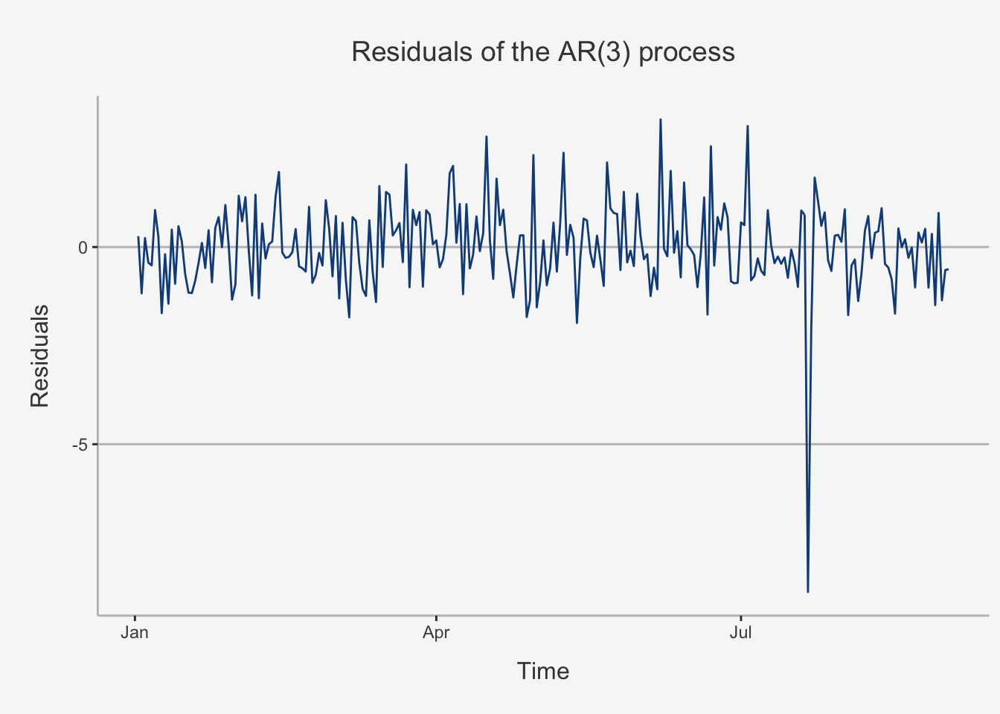
As we can see the residuals appear to be normally distributed, but not as much as if we used an MA(q) process. This is to be expected given the examplic nature of the data time series.
9.6 Combining Autoregressive and moving average processes
In the previous two chapters we have discussed the two most important models for stationary time series data, autoregressive and moving average processes. We elaborated the theoretical idea, showed their properties and discussed in which cases use of either model is appropriate. Especially, we stated that MA(q) models are appropriate if the autocorrelation function is constantly decreasing while the AR(p) method is appropriate in cases in which the partial autocorrelation function is declining. However, given the the autocorrelation, there may be cases in which neither model is able to fully capture the correlation structure.
In such cases, we need to modify the existing models. The most straight-forward option to modify them is by adding them together. Luckily for us, this method works quite well and, as such, is widely implemented in time series analysis. As such, in the following chapter, we will focus on processes that encompass both AR(p) and MA(q) processes as special cases. The first type of processes we describe are for modelling stationary data, while the second class can additionally model long-term trends.
9.6.1 ARMA Processes
Recall the AR(p) process, which is given as:
\[ X_t = \alpha_1X_{t-1} + \dots + \alpha_pX_{t-p} + Z_t = \sum_{j=0}^\infty \beta_jZ_{t - j} \] as well as as well as the MA(q) process, given by:
\[ X_t = \lambda_0Z_t + \lambda_1Z_{t-1} + \dots + \lambda_qZ_{t-q} \]
An Autoregressive Moving Average process of order (p,q), denoted ARMA(p,q) combines both models and is given by:
\[ \begin{align} X_t &= \alpha_1X_{t-1} + \dots + \alpha_pX_{t-p} + Z_t + \lambda_0Z_t + \lambda_1Z_{t-1} + \dots + \lambda_qZ_{t-q}\\ &= \sum_{j=1}^p\alpha_iX_{t-j} + \sum_{j=1}^q \lambda_jZ_{t-j} + Z_t \end{align} \]
Using the backshift operator the model can be re-written as:
\[ \begin{align} X_t &= \sum_{j=1}^p\alpha_iX_{t-j} + \sum_{j=1}^q \lambda_jZ_{t-j} + Z_t \\ X_t - \sum_{j=1}^p\alpha_iX_{t-j} &= \sum_{j=1}^q \lambda_jZ_{t-j} + Z_t \\ (1- \alpha_1B - \dots - \alpha_pB^p)X_t &= (1 + \lambda_1B + \dots + \lambda_qB^q) \\ \phi(B)X_t = \theta(B)Z_t \end{align} \]
The use of this model greatly extends the flexibility of the correlation process as it combines both the previous observations as well as moving averages of some order p and q.
9.6.1.1 Mean and Variance Moments
Any ARMA(p,q) process can be written as an infinite sum of a purely random process, i.e. an MA(\(\infty\)) process. That is, we get:
\[ X_t = \sum_{j=1}^p\alpha_iX_{t-j} + \sum_{j=1}^q \lambda_jZ_{t-j} + Z_t = \sum_{j=0}^\infty \beta_jZ_{t - j} \]
Although we do not show this here.
Consequently, we can obtain that the mean will be zero as:
\[ \begin{align} E[X_t] &= E[\sum_{j=0}^\infty \beta_jZ_{t-j}] \\ &= \sum_{j=0}^\infty \beta_jE[Z_{t-j}] \\ &= 0 \end{align} \]
Calculating the variance and autocorrelation function for an AMRA(p,q) process can be done by assuming the process is stationary and deriving the Yule-Walker equations. However, as this becomes quite messy to write in algebraic terms, we only show the ARMA(1,1) process.
\[ \begin{align} X_t &= \alpha_1X_{t-1} + \lambda_1Z_{t-1} + Z_t \\ X_t^2 &= \alpha_1X_tX_{t-1} + \lambda_1X_tZ_{t-1} + X_tZ_t \\ E[X_t^2] &= E[\alpha_1X_tX_{t-1} + \lambda_1X_tZ_{t-1} + Z_t] \\ Var[X_t] &= E[X_t^2] - \underbrace{E[X_t]^2}_{= 0 }\\ &= \alpha_1E[X_tX_{t-1}] + \lambda_1E[X_tZ_{t-1}] + E[X_tZ_t] \\ &= \alpha_1\gamma_1 + \lambda_1E[X_tZ_{t-1}] + E[X_tZ_t] \end{align} \]
Looking at the covariance, we also understand that:
\[ \begin{align} Cov[X_t,X_{t-1}] &= E[X_t,X_{t-1}] - E[X_t]E[X_{t-1}] = E[X_t,X_{t-1}] \end{align} \]
Further, we know that: \(E[X_tZ_t] = E[z_t^2] = \sigma_z^2\) as well as \(E[X_tZ_{t-1}] = \alpha_1 E[Z_{t-1}X_{t-1}] + \lambda_1 E[Z_{t-1}Z_{t-1}] = \alpha_1 \sigma_z^2 + \lambda_1 \sigma_z^2\).
This implies the following for the variance:
\[ \begin{align} Var[X_t] &= \alpha_1\gamma_1 + \lambda_1(\alpha_1 \sigma_z^2 + \lambda_1 \sigma_z^2) + \sigma_z^2 \\ &= \alpha_1\gamma_1 + \sigma_z^2(\lambda_1^2 + \lambda_1\alpha_1 + 1) \end{align} \] And the autocovariance:
\[ \begin{align} Cov[X_t, X_{t-1}] &= E[X_t,X_{t-1}] \\ &= \alpha_1E[X_t-1^2] + \lambda_1E[X_{t-1}Z_{t-1}] + E[X_{t-1}Z_t] \\ &= \alpha_1\gamma_0 + \lambda_1\sigma_z^2 \end{align} \]
Then we obtain the autocorrelation by dividing it with the variance:
\[ \rho_1 = \alpha_1 + \frac{\lambda_1\sigma_z^2}{\alpha_1\lambda_1 + \sigma_z^2(\lambda_1^2 + \lambda_1\alpha_1 + 1)} \]
To generalise, we then obtain that:
\[ \rho_\tau = \alpha_\tau\rho_{\tau-1} \]
Consequently, we understand that the autocorrelation function is equal to the Yule-Walker equation in an AR(p) model. This is handy as we can directly obtain the autocorrelation coefficients by a matrix formulation.
9.6.1.2 Stationarity and Invertibility
From the previous two chapters we understand that an AR(p) process is always invertible while an MA(q) process is always stationary. We further defined methods to check both conditions with the roots approach. Now, combining both methods we understand that:
- An ARMA(p,q) process is stationary if the AR(p) part is stationary (the roots of the characteristic polynomial have modulus larger than one)
- An ARMA(p,q) process is invertible if the MA(q) part is invertible (the roots of the characteristic polynomial have modulus larger than one)
9.6.1.3 Model Identification
Although identifying AR(p) and MA(q) processes through ACF and PACF significance plots, it is far less straight-forward to do so for ARMA plots. As such, a trial-and-error approach is most suitable to identify the models. First determine if the ACF and PACF resemble either an AR(p) or an MA(q) process. If not then adopt a trial and error approach, starting with the simplest model and increasing the complexity until the correlation has been removed.
9.6.2 Using an ARMA(p,q) process
Working with an ARMA(p,q) process is as straight-forward as it is with the previous models. Let’s quickly show this here.
# Based on this, we now need to create the same tsibble datasets as beforetime <- 1:200
n <- 243
sd <- 1
data.ar <- arima.sim(model = list(ar = c(0.5, 0.3)), n = n, sd = sd)
data <- data.ar + 20 + 0.0005 * time## Warning in `+.default`(data.ar + 20, 5e-04 * time): longer object length is not a multiple of shorter object lengthDates <- air_ZH_merged_ts %>%
filter(Standort == "Zch_Stampfenbachstrasse") %>%
pivot_wider(values_from=Wert, names_from=Parameter) %>%
select(Datum)
data_ts <- as.data.frame(cbind(Dates$Datum, data))
p <- data_ts %>%
ggplot(aes(x = as.Date(Dates$Datum), y = data)) + geom_line(color = "dodgerblue4") +
ylab("µg/m3") + xlab("Time") +
ggtitle("Concentration of CO at Zürich Stampfenbachstrasse") +
scale_colour_manual(values = c("violetred4", "lightsteelblue3","dodgerblue4", "darkorange2", "springgreen4", "goldenrod", "khaki3")) +
theme(plot.title= element_text(size=14, color="grey26",
hjust=0.5,lineheight=2.4, margin=margin(15,0,15,45)),
panel.background = element_rect(fill="#f7f7f7"),
panel.grid.major.y = element_line(size = 0.5, linetype = "solid", color = "grey"),
panel.grid.minor = element_blank(),
panel.grid.major.x = element_blank(),
plot.background = element_rect(fill="#f7f7f7", color = "#f7f7f7"),
axis.title.y = element_text(color="grey26", size=12, margin=margin(0,10,0,10)),
axis.title.x = element_text(color="grey26", size=12, margin=margin(10,0,10,0)),
axis.line = element_line(color = "grey"))
data_ts_acf <- data_ts %>% select(data) %>% acf(na.action = na.pass, plot = FALSE)
data_ts_acf_df <- with(data_ts_acf, data.frame(lag, acf))
q <- data_ts_acf_df %>%
ggplot(aes(x = lag, y = acf)) +
geom_hline(aes(yintercept = 0)) +
geom_segment(mapping = aes(xend = lag, yend = 0)) +
geom_hline(aes(yintercept = 1.96/sqrt(length(stocks_SMI_ts_ret[,1]))), linetype = 2, color = 'deepskyblue3') +
geom_hline(aes(yintercept = -1.96/sqrt(length(stocks_SMI_ts_ret[,1]))), linetype = 2, color = 'deepskyblue3') +
scale_color_manual(values=c( "khaki3", "lightsteelblue3", "dodgerblue4", "tomato3", "violetred4", "darkorange2")) +
ylab("ACF") + xlab("Lags") + ggtitle("Correlogram to show the ACF of CO concentration") +
labs(color='Factor Portfolios') +
scale_colour_manual(values = c("lightsteelblue3","dodgerblue4", "darkorange2", "springgreen4", "violetred4", "goldenrod", "khaki3")) +
theme(plot.title= element_text(size=14, color="grey26",
hjust=0.5,lineheight=2.4, margin=margin(15,0,15,0)),
panel.background = element_rect(fill="#f7f7f7"),
panel.grid.major.y = element_line(size = 0.5, linetype = "solid", color = "grey"),
panel.grid.minor = element_blank(),
panel.grid.major.x = element_blank(),
plot.background = element_rect(fill="#f7f7f7", color = "#f7f7f7"),
axis.title.y = element_text(color="grey26", size=12, margin=margin(0,10,0,10)),
axis.title.x = element_text(color="grey26", size=12, margin=margin(10,0,10,0)),
axis.line = element_line(color = "grey")) ## Scale for 'colour' is already present. Adding another scale for 'colour', which will replace the existing scale.p + q + plot_layout(ncol = 1, heights = c(5, 5))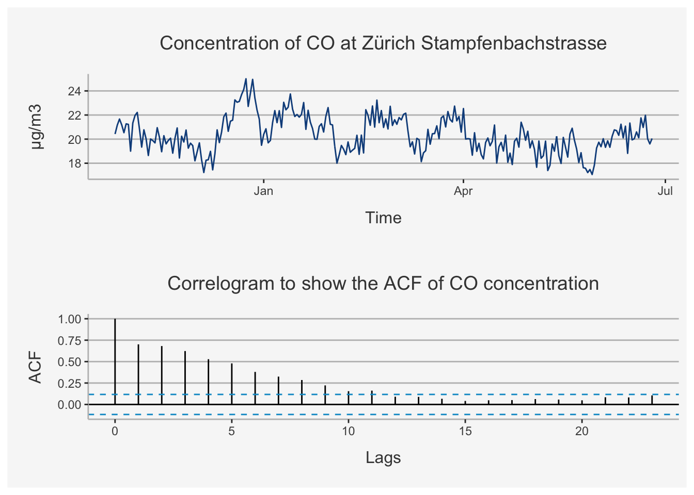
As we can see, the CO concentration has probably a time trend, which we need to remove first.
# First, we only want the O3 concentration here
O3_conc <- data_ts %>%
mutate(Datum_new = 1:243)
# Then, we regress a quadratic model and obtain the residuals
lin_mod <- lm(data ~ Datum_new, data = O3_conc)
res_lm <- O3_conc$data - lin_mod$fitted.values
# Now, we effectively eliminated the quadratic trend.
# Now, let's create the plots again
res_acf <- res_lm %>% acf(na.action = na.pass, plot = FALSE)
res_bacf <- with(res_acf, data.frame(lag, acf))
# Create the dataframe for later merging
res_lm_df <- as.data.frame(cbind(res_lm, as.Date(O3_conc$Datum)))
res_lm_df <- res_lm_df %>% mutate(Datum = as.Date(V2))
# Plot the time series
p <- res_lm_df %>%
ggplot(aes(x = Datum, y = res_lm)) + geom_line(color = "dodgerblue4") +
ylab("Residuals") + xlab("Time") +
ggtitle("Residuals of CO at Zürich Stampfenbachstrasse") +
scale_colour_manual(values = c("violetred4", "lightsteelblue3","dodgerblue4", "darkorange2", "springgreen4", "goldenrod", "khaki3")) +
theme(plot.title= element_text(size=14, color="grey26",
hjust=0.5,lineheight=2.4, margin=margin(15,0,15,45)),
panel.background = element_rect(fill="#f7f7f7"),
panel.grid.major.y = element_line(size = 0.5, linetype = "solid", color = "grey"),
panel.grid.minor = element_blank(),
panel.grid.major.x = element_blank(),
plot.background = element_rect(fill="#f7f7f7", color = "#f7f7f7"),
axis.title.y = element_text(color="grey26", size=12, margin=margin(0,10,0,10)),
axis.title.x = element_text(color="grey26", size=12, margin=margin(10,0,10,0)),
axis.line = element_line(color = "grey"))
# Plot the ACF
q <- res_bacf %>%
ggplot(aes(x = lag, y = acf)) +
geom_hline(aes(yintercept = 0)) +
geom_segment(mapping = aes(xend = lag, yend = 0)) +
geom_hline(aes(yintercept = 1.96/sqrt(dim(res_lm_df)[1])), linetype = 2, color = 'deepskyblue3') +
geom_hline(aes(yintercept = -1.96/sqrt(dim(res_lm_df)[1])), linetype = 2, color = 'deepskyblue3') +
scale_color_manual(values=c( "khaki3", "lightsteelblue3", "dodgerblue4", "tomato3", "violetred4", "darkorange2")) +
ylab("ACF") + xlab("Lags") + ggtitle("Correlogram to show the ACF of CO concentration") +
labs(color='Factor Portfolios') +
scale_colour_manual(values = c("lightsteelblue3","dodgerblue4", "darkorange2", "springgreen4", "violetred4", "goldenrod", "khaki3")) +
theme(plot.title= element_text(size=14, color="grey26",
hjust=0.5,lineheight=2.4, margin=margin(15,0,15,0)),
panel.background = element_rect(fill="#f7f7f7"),
panel.grid.major.y = element_line(size = 0.5, linetype = "solid", color = "grey"),
panel.grid.minor = element_blank(),
panel.grid.major.x = element_blank(),
plot.background = element_rect(fill="#f7f7f7", color = "#f7f7f7"),
axis.title.y = element_text(color="grey26", size=12, margin=margin(0,10,0,10)),
axis.title.x = element_text(color="grey26", size=12, margin=margin(10,0,10,0)),
axis.line = element_line(color = "grey")) ## Scale for 'colour' is already present. Adding another scale for 'colour', which will replace the existing scale.# Get the PACF and plot it as well
pacf <- pacf(res_lm)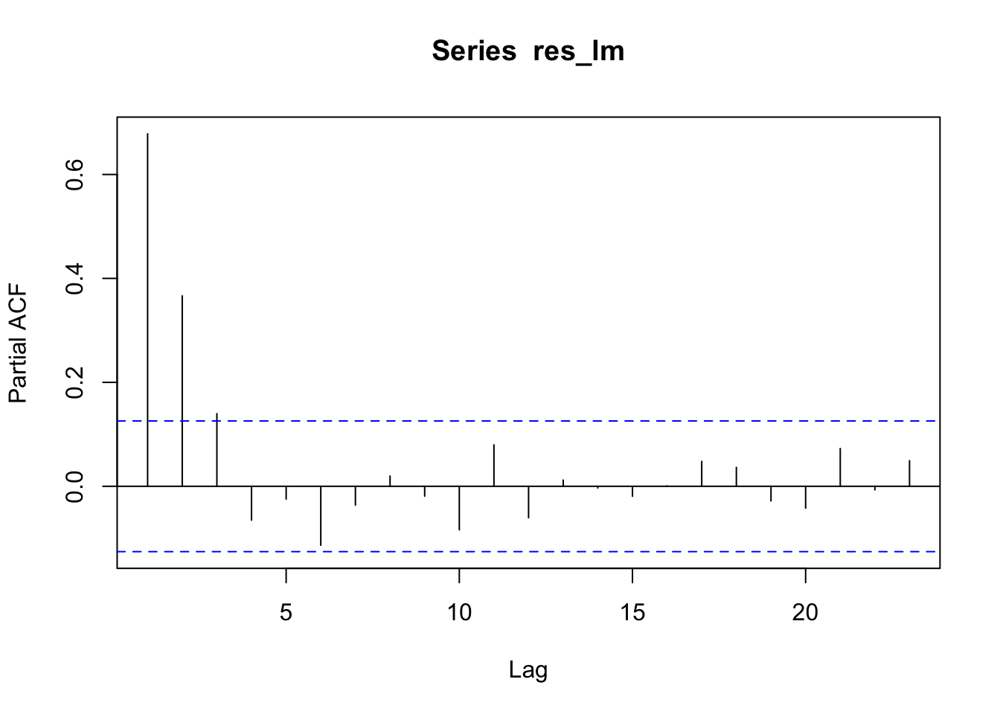
pacf_values <- c(pacf$acf)
res_bpacf <- as.data.frame(cbind(seq(0,23,1), pacf_values))## Warning in base::cbind(...): number of rows of result is not a multiple of vector length (arg 2)colnames(res_bpacf) <- c("lag", "PACF")
r <- res_bpacf %>%
ggplot(aes(x = lag, y = PACF)) +
geom_hline(aes(yintercept = 0)) +
geom_segment(mapping = aes(xend = lag, yend = 0)) +
geom_hline(aes(yintercept = 1.96/sqrt((dim(res_lm_df)[1]))), linetype = 2, color = 'deepskyblue3') +
geom_hline(aes(yintercept = -1.96/sqrt((dim(res_lm_df)[1]))), linetype = 2, color = 'deepskyblue3') +
scale_color_manual(values=c( "khaki3", "lightsteelblue3", "dodgerblue4", "tomato3", "violetred4", "darkorange2")) +
ylab("PACF") + xlab("Lags") + ggtitle("Correlogram to show the PACF of CO concentration") +
labs(color='Factor Portfolios') +
scale_colour_manual(values = c("lightsteelblue3","dodgerblue4", "darkorange2", "springgreen4", "violetred4", "goldenrod", "khaki3")) +
theme(plot.title= element_text(size=14, color="grey26",
hjust=0.5,lineheight=2.4, margin=margin(15,0,15,0)),
panel.background = element_rect(fill="#f7f7f7"),
panel.grid.major.y = element_line(size = 0.5, linetype = "solid", color = "grey"),
panel.grid.minor = element_blank(),
panel.grid.major.x = element_blank(),
plot.background = element_rect(fill="#f7f7f7", color = "#f7f7f7"),
axis.title.y = element_text(color="grey26", size=12, margin=margin(0,10,0,10)),
axis.title.x = element_text(color="grey26", size=12, margin=margin(10,0,10,0)),
axis.line = element_line(color = "grey")) ## Scale for 'colour' is already present. Adding another scale for 'colour', which will replace the existing scale.q + r + plot_layout(ncol = 1, heights = c(5, 5))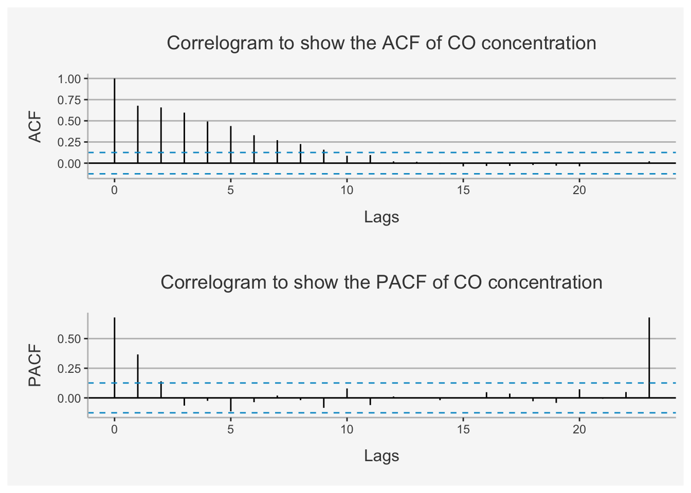
The time plot suggests the residual series is stationary, while we may understand that an ARMA(2,5) model is appropriate.
# Run the Arima model with RA(3)
arma_25 <- arima(res_lm, order = c(2, 0, 5))
arma_25##
## Call:
## arima(x = res_lm, order = c(2, 0, 5))
##
## Coefficients:
## ar1 ar2 ma1 ma2 ma3 ma4 ma5 intercept
## -0.0938 0.7671 0.4820 -0.2735 0.2399 0.0867 0.0580 -0.0067
## s.e. 0.0769 0.0759 0.0987 0.1105 0.0814 0.0879 0.0793 0.3001
##
## sigma^2 estimated as 0.9593: log likelihood = -340.48, aic = 698.95Finally, we should plot the residuals again to ensure they are normal
res_lm <-arma_25$residuals
# Now, we effectively eliminated the quadratic trend.
# Now, let's create the plots again
res_acf <- res_lm %>% acf(na.action = na.pass, plot = FALSE)
res_bacf <- with(res_acf, data.frame(lag, acf))
# Create the dataframe for later merging
res_lm_df <- as.data.frame(cbind(res_lm, as.Date(O3_conc$Datum)))
res_lm_df <- res_lm_df %>% mutate(Datum = as.Date(as.Date(O3_conc$Datum)))
# Plot both
p <- res_lm_df %>%
ggplot(aes(x = Datum, y = res_lm)) + geom_line(color = "dodgerblue4") +
ylab("Residuals") + xlab("Time") +
ggtitle("Residuals of the AR(3) process") +
scale_colour_manual(values = c("violetred4", "lightsteelblue3","dodgerblue4", "darkorange2", "springgreen4", "goldenrod", "khaki3")) +
theme(plot.title= element_text(size=14, color="grey26",
hjust=0.5,lineheight=2.4, margin=margin(15,0,15,45)),
panel.background = element_rect(fill="#f7f7f7"),
panel.grid.major.y = element_line(size = 0.5, linetype = "solid", color = "grey"),
panel.grid.minor = element_blank(),
panel.grid.major.x = element_blank(),
plot.background = element_rect(fill="#f7f7f7", color = "#f7f7f7"),
axis.title.y = element_text(color="grey26", size=12, margin=margin(0,10,0,10)),
axis.title.x = element_text(color="grey26", size=12, margin=margin(10,0,10,0)),
axis.line = element_line(color = "grey"))
p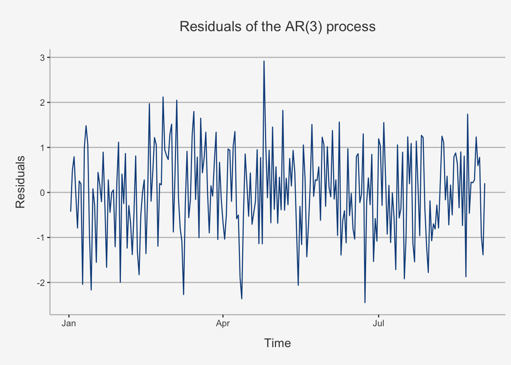
This is the third option to model stationary time series.
Consequently, we now covered the three most widespread forms to analyse stationary time series. Importantly, we first need to detrend and remove seasonality from the time series in order to use either approach and effectively assess which approach is the correct one given the temporal correlation properties of the data. Based on either model, we can then assess the best possible model by creating training and test sets and then taking the fitted model weights to predict a stationary time series and compare the error terms.
Although we could do this by hand, the forecast package has a handy feature called auto.arima. This will provide you with the optimal model based on the time series at hand. To understand how it works, just use the function here:
auto.arima(data_ts$data, trace=TRUE)##
## Fitting models using approximations to speed things up...
##
## ARIMA(2,1,2) with drift : Inf
## ARIMA(0,1,0) with drift : 769.5454
## ARIMA(1,1,0) with drift : 712.4391
## ARIMA(0,1,1) with drift : 706.773
## ARIMA(0,1,0) : 767.5122
## ARIMA(1,1,1) with drift : 705.8703
## ARIMA(2,1,1) with drift : 707.1292
## ARIMA(1,1,2) with drift : 707.0857
## ARIMA(0,1,2) with drift : 705.1276
## ARIMA(0,1,3) with drift : 707.1158
## ARIMA(1,1,3) with drift : 708.7778
## ARIMA(0,1,2) : 703.0664
## ARIMA(0,1,1) : 704.7277
## ARIMA(1,1,2) : 705.025
## ARIMA(0,1,3) : 705.0374
## ARIMA(1,1,1) : 703.8197
## ARIMA(1,1,3) : 706.683
##
## Now re-fitting the best model(s) without approximations...
##
## ARIMA(0,1,2) : 703.4527
##
## Best model: ARIMA(0,1,2)## Series: data_ts$data
## ARIMA(0,1,2)
##
## Coefficients:
## ma1 ma2
## -0.5624 0.1357
## s.e. 0.0641 0.0688
##
## sigma^2 estimated as 1.052: log likelihood=-348.68
## AIC=703.35 AICc=703.45 BIC=713.82As we can see, when assuming stationarity, an ARIMA(1,0,2) model is most suitable.